[1]:
import pandas as pd
import numpy as np
import matplotlib.pyplot as plt
import seaborn as sns
import polars as pl
import itertools
import pandas as pd
import statsmodels.api as sm
def regress(data, yvar, xvars):
Y = data[yvar]
X = data[xvars]
X['intercept'] = 1.
result = sm.OLS(Y, X).fit()
return result.params
def regress_error(data, yvar, xvars):
Y = data[yvar]
X = data[xvars]
X['intercept'] = 1.
result = sm.OLS(Y, X).fit()
output = list(result.params)
output.extend(list(result.bse))
return pd.Series(output, ["slope", "intercept", "slope_e", "intercept_e"])
sns.set(style="darkgrid", palette="Set2")
Importing multiple plates with different layouts
[2]:
files = [
# ["growth_data/cyrus_blue_020824.txt",
# {"A": "met", "B": "none", "C": "B12", "D": "Zn","E": "met", "F": "none", "G": "Zn", "H": "B12"},
# [["1", "2", "3", "4", "5", "6", "7", "8", "9", "10", "11", "12"]],
# [["A", "B", "C", "D"], ["E", "F", "G", "H"]],
# {"YkgM1": [0, 0], "MG1655": [1, 0]},
# 12],
# ["growth_data/cyrus_pink_020924.txt",
# {"A": "met", "B": "none", "C": "B12", "D": "Zn","E": "met+B12", "F": "met+Zn", "G": "met+B12+Zn", "H": "blank"},
# [["1", "2", "3", "4", "5", "6", "7", "8", "9", "10", "11", "12"]],
# [["A", "B", "C", "D", "E", "F", "G"]],
# {"MG1655": [0, 0]},
# 12],
# ["growth_data/cyrus_blue_021324.txt",
# {"A": "met", "B": "none", "C": "B12", "D": "Zn","E": "met+B12", "F": "met+Zn", "G": "met+B12+Zn", "H": "blank"},
# [["1", "2", "3", "4", "5", "6", "7", "8", "9", "10", "11", "12"]],
# [["A", "B", "C", "D", "E", "F", "G"]],
# {"MG1655": [0, 0]},
# 12],
["growth_data/cyrus_blue_021424.txt",
{"A": "met", "B": "none", "C": "B12", "D": "Zn","E": "met+B12", "F": "met+Zn", "G": "met+B12+Zn", "H": "blank"},
[["1", "2", "3", "4", "5", "6", "7", "8", "9", "10", "11", "12"]],
[["A", "B", "C", "D", "E", "F", "G"]],
{"MG1655": [0, 0]},
12],
]
for i, file in enumerate(files):
fname = file[0]
additive = file[1]
genotype_col = file[2]
genotype_row = file[3]
genotype_combinations = file[4]
n_replicate = file[5]
al = pl.DataFrame(additive).transpose(include_header=True)
al = al.rename({"column": "Row", "column_0": "Additive"})
al = al.with_columns(Plate = pl.lit(f"Plate {i+1}"))
gl = []
for genotype, idx in genotype_combinations.items():
gl.extend([[genotype, x+y] for x in genotype_row[idx[0]] for y in genotype_col[idx[1]]])
gl = pl.DataFrame(gl).transpose()
gl = gl.rename({"column_0": "Genotype", "column_1": "Well"})
gl = gl.with_columns(Plate = pl.lit(f"Plate {i+1}"))
if i == 0:
df = pl.read_csv(fname, separator="\t") # growth_data/cyrus_mutant_013124.txt
df = df.with_columns(Plate = pl.lit("Plate 1"))
df = df.with_columns(N_replicate = n_replicate)
df = df.drop('T600')
gdf = gl
adf = al
else:
df_add = pl.read_csv(fname, separator="\t")
df_add = df_add.with_columns(Plate = pl.lit(f"Plate {i+1}"))
df_add = df_add.with_columns(N_replicate = n_replicate)
df_add = df_add.drop('T600')
df = pl.concat([df, df_add])
gdf = pl.concat([gdf, gl])
adf = pl.concat([adf, al])
# time conversion
df = df.with_columns(pl.col("Time").str.to_time("%H:%M:%S"))
df = df.with_columns(df['Time'].dt.hour().cast(pl.Int64) + df['Time'].dt.minute().cast(pl.Int64) / 60 + df['Time'].dt.second() / 3600)
# get minimum OD measured
init_df = df.filter(pl.col("Time") > 1.5).sort(by="Time").drop(["Time"]).melt(id_vars=["Plate"], variable_name="Well", value_name="Initial_OD")
init_df = init_df.group_by(["Plate", "Well"]).min()
init_df
# blank_df.head(3)
df.head(3)
[2]:
shape: (3, 99)
| Time | A1 | A2 | A3 | A4 | A5 | A6 | A7 | A8 | A9 | A10 | A11 | A12 | B1 | B2 | B3 | B4 | B5 | B6 | B7 | B8 | B9 | B10 | B11 | B12 | C1 | C2 | C3 | C4 | C5 | C6 | C7 | C8 | C9 | C10 | C11 | C12 | … | F2 | F3 | F4 | F5 | F6 | F7 | F8 | F9 | F10 | F11 | F12 | G1 | G2 | G3 | G4 | G5 | G6 | G7 | G8 | G9 | G10 | G11 | G12 | H1 | H2 | H3 | H4 | H5 | H6 | H7 | H8 | H9 | H10 | H11 | H12 | Plate | N_replicate |
|---|---|---|---|---|---|---|---|---|---|---|---|---|---|---|---|---|---|---|---|---|---|---|---|---|---|---|---|---|---|---|---|---|---|---|---|---|---|---|---|---|---|---|---|---|---|---|---|---|---|---|---|---|---|---|---|---|---|---|---|---|---|---|---|---|---|---|---|---|---|---|---|---|---|---|
| f64 | f64 | f64 | f64 | f64 | f64 | f64 | f64 | f64 | f64 | f64 | f64 | f64 | f64 | f64 | f64 | f64 | f64 | f64 | f64 | f64 | f64 | f64 | f64 | f64 | f64 | f64 | f64 | f64 | f64 | f64 | f64 | f64 | f64 | f64 | f64 | f64 | … | f64 | f64 | f64 | f64 | f64 | f64 | f64 | f64 | f64 | f64 | f64 | f64 | f64 | f64 | f64 | f64 | f64 | f64 | f64 | f64 | f64 | f64 | f64 | f64 | f64 | f64 | f64 | f64 | f64 | f64 | f64 | f64 | f64 | f64 | f64 | str | i32 |
| 0.011111 | 0.195 | 0.201 | 0.206 | 0.208 | 0.201 | 0.19 | 0.185 | 0.191 | 0.178 | 0.185 | 0.18 | 0.181 | 0.21 | 0.21 | 0.205 | 0.199 | 0.198 | 0.2 | 0.184 | 0.183 | 0.181 | 0.19 | 0.183 | 0.19 | 0.206 | 0.206 | 0.203 | 0.216 | 0.204 | 0.187 | 0.181 | 0.185 | 0.189 | 0.174 | 0.185 | 0.189 | … | 0.207 | 0.211 | 0.197 | 0.198 | 0.251 | 0.253 | 0.194 | 0.181 | 0.187 | 0.178 | 0.186 | 0.196 | 0.203 | 0.233 | 0.278 | 0.203 | 0.195 | 0.177 | 0.181 | 0.181 | 0.185 | 0.185 | 0.177 | 0.276 | 0.279 | 0.203 | 0.213 | 0.219 | 0.206 | 0.174 | 0.174 | 0.183 | 0.175 | 0.174 | 0.179 | "Plate 1" | 12 |
| 0.036111 | 0.193 | 0.201 | 0.206 | 0.207 | 0.2 | 0.189 | 0.183 | 0.19 | 0.177 | 0.184 | 0.179 | 0.181 | 0.211 | 0.211 | 0.205 | 0.198 | 0.198 | 0.198 | 0.183 | 0.182 | 0.18 | 0.188 | 0.183 | 0.189 | 0.206 | 0.206 | 0.203 | 0.215 | 0.203 | 0.186 | 0.179 | 0.184 | 0.188 | 0.174 | 0.185 | 0.188 | … | 0.208 | 0.211 | 0.197 | 0.197 | 0.25 | 0.253 | 0.193 | 0.181 | 0.186 | 0.178 | 0.186 | 0.196 | 0.203 | 0.247 | 0.278 | 0.202 | 0.194 | 0.176 | 0.18 | 0.18 | 0.185 | 0.186 | 0.177 | 0.279 | 0.278 | 0.204 | 0.213 | 0.218 | 0.205 | 0.174 | 0.173 | 0.182 | 0.175 | 0.174 | 0.179 | "Plate 1" | 12 |
| 0.061111 | 0.192 | 0.2 | 0.205 | 0.207 | 0.2 | 0.189 | 0.183 | 0.189 | 0.176 | 0.184 | 0.179 | 0.181 | 0.212 | 0.21 | 0.205 | 0.198 | 0.198 | 0.198 | 0.183 | 0.181 | 0.179 | 0.188 | 0.183 | 0.19 | 0.206 | 0.205 | 0.203 | 0.214 | 0.202 | 0.185 | 0.179 | 0.184 | 0.187 | 0.174 | 0.185 | 0.188 | … | 0.208 | 0.211 | 0.197 | 0.196 | 0.251 | 0.253 | 0.193 | 0.18 | 0.186 | 0.178 | 0.185 | 0.195 | 0.202 | 0.269 | 0.278 | 0.202 | 0.193 | 0.176 | 0.179 | 0.18 | 0.184 | 0.186 | 0.177 | 0.282 | 0.275 | 0.203 | 0.213 | 0.218 | 0.205 | 0.173 | 0.173 | 0.182 | 0.175 | 0.174 | 0.179 | "Plate 1" | 12 |
[3]:
# melt to experiments
mdf = df.melt(id_vars=["Time", "Plate", "N_replicate"], variable_name="Well", value_name="OD")
mdf = mdf.with_columns((mdf["Well"].str.slice(0,1)).alias("Row"))
mdf = mdf.with_columns((mdf["Well"].str.slice(1)).alias("Column"))
mdf = mdf.join(adf, on=["Plate", "Row"])
mdf = mdf.join(gdf, on=["Plate", "Well"])
mdf = mdf.join(init_df, on=["Well", "Plate"])
mdf = mdf.with_columns( ((pl.col("Column").cast(pl.Int32) + pl.col("N_replicate") - 1) % pl.col("N_replicate") + 1).alias("Replicate"))
# mdf = mdf.with_columns(((pl.col("Column").cast(pl.Int32)+3) % 4 + 1).alias("Replicate"))
# mdf = mdf.with_columns(((pl.col("Column").cast(pl.Int32)+11) % 12 + 1).alias("Replicate"))
# mdf.group_by(["Plate","Additive","Genotype"]).size()
mdf
[3]:
shape: (56_196, 11)
| Time | Plate | N_replicate | Well | OD | Row | Column | Additive | Genotype | Initial_OD | Replicate |
|---|---|---|---|---|---|---|---|---|---|---|
| f64 | str | i32 | str | f64 | str | str | str | str | f64 | i32 |
| 0.011111 | "Plate 1" | 12 | "A1" | 0.195 | "A" | "1" | "met" | "MG1655" | 0.187 | 1 |
| 0.036111 | "Plate 1" | 12 | "A1" | 0.193 | "A" | "1" | "met" | "MG1655" | 0.187 | 1 |
| 0.061111 | "Plate 1" | 12 | "A1" | 0.192 | "A" | "1" | "met" | "MG1655" | 0.187 | 1 |
| 0.086111 | "Plate 1" | 12 | "A1" | 0.192 | "A" | "1" | "met" | "MG1655" | 0.187 | 1 |
| 0.111111 | "Plate 1" | 12 | "A1" | 0.192 | "A" | "1" | "met" | "MG1655" | 0.187 | 1 |
| 0.136111 | "Plate 1" | 12 | "A1" | 0.192 | "A" | "1" | "met" | "MG1655" | 0.187 | 1 |
| 0.161111 | "Plate 1" | 12 | "A1" | 0.191 | "A" | "1" | "met" | "MG1655" | 0.187 | 1 |
| 0.186111 | "Plate 1" | 12 | "A1" | 0.191 | "A" | "1" | "met" | "MG1655" | 0.187 | 1 |
| 0.211111 | "Plate 1" | 12 | "A1" | 0.191 | "A" | "1" | "met" | "MG1655" | 0.187 | 1 |
| 0.236111 | "Plate 1" | 12 | "A1" | 0.191 | "A" | "1" | "met" | "MG1655" | 0.187 | 1 |
| 0.261111 | "Plate 1" | 12 | "A1" | 0.191 | "A" | "1" | "met" | "MG1655" | 0.187 | 1 |
| 0.286111 | "Plate 1" | 12 | "A1" | 0.191 | "A" | "1" | "met" | "MG1655" | 0.187 | 1 |
| … | … | … | … | … | … | … | … | … | … | … |
| 16.436111 | "Plate 1" | 12 | "G12" | 1.048 | "G" | "12" | "met+B12+Zn" | "MG1655" | 0.173 | 12 |
| 16.461111 | "Plate 1" | 12 | "G12" | 1.049 | "G" | "12" | "met+B12+Zn" | "MG1655" | 0.173 | 12 |
| 16.486111 | "Plate 1" | 12 | "G12" | 1.048 | "G" | "12" | "met+B12+Zn" | "MG1655" | 0.173 | 12 |
| 16.511111 | "Plate 1" | 12 | "G12" | 1.049 | "G" | "12" | "met+B12+Zn" | "MG1655" | 0.173 | 12 |
| 16.536111 | "Plate 1" | 12 | "G12" | 1.05 | "G" | "12" | "met+B12+Zn" | "MG1655" | 0.173 | 12 |
| 16.561111 | "Plate 1" | 12 | "G12" | 1.05 | "G" | "12" | "met+B12+Zn" | "MG1655" | 0.173 | 12 |
| 16.586111 | "Plate 1" | 12 | "G12" | 1.05 | "G" | "12" | "met+B12+Zn" | "MG1655" | 0.173 | 12 |
| 16.611111 | "Plate 1" | 12 | "G12" | 1.051 | "G" | "12" | "met+B12+Zn" | "MG1655" | 0.173 | 12 |
| 16.636111 | "Plate 1" | 12 | "G12" | 1.053 | "G" | "12" | "met+B12+Zn" | "MG1655" | 0.173 | 12 |
| 16.661111 | "Plate 1" | 12 | "G12" | 1.052 | "G" | "12" | "met+B12+Zn" | "MG1655" | 0.173 | 12 |
| 16.686111 | "Plate 1" | 12 | "G12" | 1.053 | "G" | "12" | "met+B12+Zn" | "MG1655" | 0.173 | 12 |
| 16.711111 | "Plate 1" | 12 | "G12" | null | "G" | "12" | "met+B12+Zn" | "MG1655" | 0.173 | 12 |
[4]:
mdf = mdf.with_columns([
(pl.col("OD") - pl.col("Initial_OD")).alias("Initial_corrected_OD"),
])
mdf.head(5)
[4]:
shape: (5, 12)
| Time | Plate | N_replicate | Well | OD | Row | Column | Additive | Genotype | Initial_OD | Replicate | Initial_corrected_OD |
|---|---|---|---|---|---|---|---|---|---|---|---|
| f64 | str | i32 | str | f64 | str | str | str | str | f64 | i32 | f64 |
| 0.011111 | "Plate 1" | 12 | "A1" | 0.195 | "A" | "1" | "met" | "MG1655" | 0.187 | 1 | 0.008 |
| 0.036111 | "Plate 1" | 12 | "A1" | 0.193 | "A" | "1" | "met" | "MG1655" | 0.187 | 1 | 0.006 |
| 0.061111 | "Plate 1" | 12 | "A1" | 0.192 | "A" | "1" | "met" | "MG1655" | 0.187 | 1 | 0.005 |
| 0.086111 | "Plate 1" | 12 | "A1" | 0.192 | "A" | "1" | "met" | "MG1655" | 0.187 | 1 | 0.005 |
| 0.111111 | "Plate 1" | 12 | "A1" | 0.192 | "A" | "1" | "met" | "MG1655" | 0.187 | 1 | 0.005 |
[5]:
sns.set_context("talk")
sns.relplot(x="Time", y="Initial_corrected_OD", hue="Plate", col="Row", row="Column", \
# row="Genotype",
height=3, \
# col_wrap=4,
data=mdf)
[5]:
<seaborn.axisgrid.FacetGrid at 0x10574b1f0>
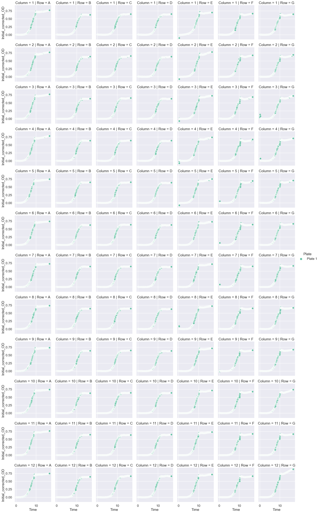
[6]:
f_mdf = mdf.filter(pl.col("Time") > 1.5).filter(pl.col("Initial_corrected_OD") > 0)
f_mdf = f_mdf.with_columns([
(pl.col("Initial_corrected_OD").log())
.alias("Log_initial_corrected_OD")
])
f_mdf = f_mdf.drop_nulls()
[7]:
with warnings.catch_warnings():
warnings.simplefilter('ignore')
sns.relplot(x="Time", y="Log_initial_corrected_OD", hue="Plate", kind="line", row="Column", col="Row", height=3, \
data=f_mdf.filter(pl.col("Time") < 20))
# plt.savefig("weird_plate.png")
---------------------------------------------------------------------------
NameError Traceback (most recent call last)
Cell In[7], line 1
----> 1 with warnings.catch_warnings():
2 warnings.simplefilter('ignore')
4 sns.relplot(x="Time", y="Log_initial_corrected_OD", hue="Plate", kind="line", row="Column", col="Row", height=3, \
5 data=f_mdf.filter(pl.col("Time") < 20))
NameError: name 'warnings' is not defined
[ ]:
gr_df = f_mdf.filter( (pl.col("Time") < 20))
minimum_start_times = gr_df.filter(pl.col("Log_initial_corrected_OD") <= -4.5).group_by(["Plate", "Well"]).agg(pl.max("Time").alias("Time_exp_start")).sort("Time_exp_start")
minimum_end_times = gr_df.filter(pl.col("Log_initial_corrected_OD") >= -3.5).group_by(["Plate", "Well"]).agg(pl.min("Time").alias("Time_exp_end")).sort("Time_exp_end")
gr_df = gr_df.join(minimum_start_times, on=["Plate", "Well"])
gr_df = gr_df.join(minimum_end_times, on=["Plate", "Well"])
gr_df = gr_df.filter((pl.col("Time") > pl.col("Time_exp_start")) & (pl.col("Time") < pl.col("Time_exp_end")))
gr_df = gr_df.with_columns((pl.col("Time") - pl.col("Time_exp_start")).alias("Corrected_time"))
gr_df.head(5)
[ ]:
# regress and pick top x
predicted_gr = gr_df \
.to_pandas().groupby(['Genotype', 'Additive','Replicate', 'Plate']).apply(regress_error, 'Log_initial_corrected_OD', ['Corrected_time']).reset_index()
N = 6
M = 0
top_gr = pl.DataFrame(predicted_gr.sort_values(by=["Genotype", "Additive", "Plate", "slope"], ascending=False).groupby(['Genotype', 'Additive', 'Plate']).nth[M:N])
top_gr.head(7)
gr_df = gr_df.join(top_gr, on=["Additive", "Plate", "Replicate", "Genotype"])
[ ]:
with warnings.catch_warnings():
warnings.simplefilter('ignore')
sns.set_context("paper")
sns.relplot(x="Corrected_time", y="Log_initial_corrected_OD", hue="Plate", kind="line", row="Additive", style="Replicate", col="Genotype", height=3, \
data=gr_df)
plt.xlim([0,3])
# plt.savefig("plates.png")
[ ]:
sns.lmplot(x="Corrected_time", y="Log_initial_corrected_OD", hue="Plate", col="Additive", row="Genotype", height=3, \
data=gr_df.to_pandas(), scatter_kws = {"alpha": 0.1})
plt.xlim([0,3])
[ ]:
# sns.relplot(x="Time", y="Log_initial_corrected_OD", kind="line", row="Replicate", col="Additive", height=3, \
# data=f_mdf.filter(pl.col("Time") < 15))
[ ]:
# sns.set_context("paper")
# sns.relplot(x="Time", y="Initial_corrected_OD", hue="Plate", style="Replicate", kind="scatter", col="Additive", \
# # row="Genotype", height=3, \
# col_wrap=4,
# data=mdf)
[ ]:
predicted_gr = gr_df \
.to_pandas().groupby(['Genotype', 'Additive','Replicate', 'Plate']).apply(regress_error, 'Log_initial_corrected_OD', ['Corrected_time'])
predicted_gr["doubling_time"] = np.log(2) / predicted_gr["slope"]
predicted_gr = predicted_gr.reset_index()
gr_mean_std = predicted_gr.groupby(['Genotype', 'Additive']).agg({'slope':['mean','std']})
gr_mean_std.columns = gr_mean_std.columns.get_level_values(1)
gr_mean_std["doubling_time"] = np.log(2)/gr_mean_std["mean"]
# gr_mean_std = gr_mean_std.reset_index()
predicted_gr["doubling_time"] = np.log(2)/predicted_gr["slope"]
predicted_gr
[ ]:
with warnings.catch_warnings():
warnings.simplefilter('ignore')
filter_df = pl.DataFrame(predicted_gr).filter((pl.col("Genotype") == "MG1655"))
filter_df.head(5)
g = sns.catplot(x="Plate", y="doubling_time", hue="Additive",
data=filter_df.to_pandas(), kind="bar",
height=8, aspect=1, alpha=0.5);
g.map_dataframe(sns.stripplot, x="Plate", y="doubling_time",
hue="Additive", palette="Set2",
alpha=0.6, dodge=True)
plt.title("Minimum doubling time, average (bar) and individual measurements (point), n=3")
# g.map(sns.stripplot, "sex", "total_bill", "smoker",
# palette=["#404040"], alpha=0.6, dodge=True)
plt.ylim([0, 1])
plt.show()
# g.savefig("story1.png")
Importing multiple plates
[ ]:
# files = ["growth_data/cyrus_mutant_020124.txt", "growth_data/cyrus_mutants_020224.txt", "growth_data/cyrus_mutants_020624.txt"]
files = [
"growth_data/cyrus_blue_020824.txt",
# "growth_data/cyrus_pink_020924.txt"
]
# files = ["growth_data/cyrus_mutant_020124.txt",
# "growth_data/cyrus_mutants_020224.txt",
# "growth_data/cyrus_mutants_020624.txt",
# "growth_data/cyrus_indigo_020724.txt",
# "growth_data/cyrus_pink_020724.txt",
# "growth_data/cyrus_blue_failed_020724.txt"
# ]
# additive = {"A": "met", "B": "none", "C": "B12", "D": "Zn","E": "met+B12", "F": "met+Zn", "G": "met+B12+Zn", "H": "blank"}
additive = {"A": "met", "B": "none", "C": "B12", "D": "Zn","E": "met", "F": "none", "G": "Zn", "H": "B12"}
adf = pl.DataFrame(additive).transpose(include_header=True)
adf = adf.rename({"column": "Row", "column_0": "Additive"})
genotype_row = [["A", "B", "C", "D"], ["E", "F", "G", "H"]]
# genotype_col = [["1", "2", "3", "4"], ["5", "6", "7", "8"], ["9", "10", "11", "12"]]
genotype_col = [["1", "2", "3", "4", "5", "6", "7", "8", "9", "10", "11", "12"]]
# genotype_row = [["A", "B", "C", "D", "E", "F", "G"]]
# genotype_combinations = {"YkgM1": [0, 0], "YkgM2": [0, 1], "MetH": [0, 2], "Zur": [1, 0], "MetE": [1, 1], "MG1655": [1, 2]}
genotype_combinations = {"YkgM1": [0, 0], "MG1655": [1, 0]}
# genotype_combinations = {"MG1655": [0, 0]}
gdf = []
for genotype, idx in genotype_combinations.items():
gdf.extend([[genotype, x+y] for x in genotype_row[idx[0]] for y in genotype_col[idx[1]]])
gdf
gdf = pl.DataFrame(gdf).transpose()
gdf = gdf.rename({"column_0": "Genotype", "column_1": "Well"})
for i, file in enumerate(files):
if i == 0:
df = pl.read_csv(file, separator="\t") # growth_data/cyrus_mutant_013124.txt
df = df.with_columns(Plate = pl.lit("Plate 1"))
df = df.drop('T600')
else:
df_add = pl.read_csv(file, separator="\t")
df_add = df_add.with_columns(Plate = pl.lit(f"Plate {i+1}"))
df_add = df_add.drop('T600')
df = pl.concat([df, df_add])
# time conversion
df = df.with_columns(pl.col("Time").str.to_time("%H:%M:%S"))
df = df.with_columns(df['Time'].dt.hour().cast(pl.Int64) + df['Time'].dt.minute().cast(pl.Int64) / 60 + df['Time'].dt.second() / 3600)
# blank_df.head(3)
df.head(3)
[176]:
# mdf.n_unique(subset=["Plate","Additive","Genotype"])
# mdf.group_by(["Plate","Additive","Genotype"]).n_unique()
# mdf.to_pandas().groupby(["Plate","Additive","Genotype"]).count()
[177]:
# initial measurement
init_df = df.sort(by="Time").drop(["Time"])[0:200,:].melt(id_vars=["Plate"], variable_name="Well", value_name="Initial_OD")
init_df = init_df.group_by(["Plate", "Well"]).min()
# melt to experiments
mdf = df.melt(id_vars=["Time", "Plate"], variable_name="Well", value_name="OD")
mdf = mdf.with_columns((mdf["Well"].str.slice(0,1)).alias("Row"))
mdf = mdf.with_columns((mdf["Well"].str.slice(1)).alias("Column"))
mdf = mdf.join(adf, on="Row")
mdf = mdf.join(gdf, on="Well")
mdf = mdf.join(init_df, on=["Well", "Plate"])
# mdf = mdf.with_columns(((pl.col("Column").cast(pl.Int32)+3) % 4 + 1).alias("Replicate"))
mdf = mdf.with_columns(((pl.col("Column").cast(pl.Int32)+11) % 12 + 1).alias("Replicate"))
mdf.head(5)
[177]:
shape: (5, 10)
| Time | Plate | Well | OD | Row | Column | Additive | Genotype | Initial_OD | Replicate |
|---|---|---|---|---|---|---|---|---|---|
| f64 | str | str | f64 | str | str | str | str | f64 | i32 |
| 0.011111 | "Plate 1" | "A1" | 0.096 | "A" | "1" | "met" | "YkgM1" | 0.096 | 1 |
| 0.036111 | "Plate 1" | "A1" | 0.096 | "A" | "1" | "met" | "YkgM1" | 0.096 | 1 |
| 0.061111 | "Plate 1" | "A1" | 0.096 | "A" | "1" | "met" | "YkgM1" | 0.096 | 1 |
| 0.086111 | "Plate 1" | "A1" | 0.096 | "A" | "1" | "met" | "YkgM1" | 0.096 | 1 |
| 0.111111 | "Plate 1" | "A1" | 0.096 | "A" | "1" | "met" | "YkgM1" | 0.096 | 1 |
[178]:
mdf = mdf.with_columns([
(pl.col("OD") - pl.col("Initial_OD")).alias("Initial_corrected_OD"),
# (
# (pl.col("OD") - pl.col("Background_OD")) / (pl.col("Initial_OD") - pl.col("Background_OD"))
# ).alias("Normalized_OD")
])
mdf.head(5)
[178]:
shape: (5, 11)
| Time | Plate | Well | OD | Row | Column | Additive | Genotype | Initial_OD | Replicate | Initial_corrected_OD |
|---|---|---|---|---|---|---|---|---|---|---|
| f64 | str | str | f64 | str | str | str | str | f64 | i32 | f64 |
| 0.011111 | "Plate 1" | "A1" | 0.096 | "A" | "1" | "met" | "YkgM1" | 0.096 | 1 | 0.0 |
| 0.036111 | "Plate 1" | "A1" | 0.096 | "A" | "1" | "met" | "YkgM1" | 0.096 | 1 | 0.0 |
| 0.061111 | "Plate 1" | "A1" | 0.096 | "A" | "1" | "met" | "YkgM1" | 0.096 | 1 | 0.0 |
| 0.086111 | "Plate 1" | "A1" | 0.096 | "A" | "1" | "met" | "YkgM1" | 0.096 | 1 | 0.0 |
| 0.111111 | "Plate 1" | "A1" | 0.096 | "A" | "1" | "met" | "YkgM1" | 0.096 | 1 | 0.0 |
[ ]:
[179]:
sns.set_context("paper")
sns.relplot(x="Time", y="Initial_corrected_OD", hue="Plate", style="Replicate", kind="scatter", col="Additive", \
# row="Genotype", height=3, \
col_wrap=4,
data=mdf)
[179]:
<seaborn.axisgrid.FacetGrid at 0x2e1e8bf40>
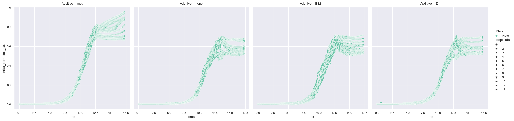
[180]:
f_mdf = mdf.filter(pl.col("Initial_corrected_OD") > 0)
f_mdf = f_mdf.with_columns([
(pl.col("Initial_corrected_OD").log())
.alias("Log_initial_corrected_OD")
])
f_mdf.head(5)
[180]:
shape: (5, 12)
| Time | Plate | Well | OD | Row | Column | Additive | Genotype | Initial_OD | Replicate | Initial_corrected_OD | Log_initial_corrected_OD |
|---|---|---|---|---|---|---|---|---|---|---|---|
| f64 | str | str | f64 | str | str | str | str | f64 | i32 | f64 | f64 |
| 2.211111 | "Plate 1" | "A1" | 0.097 | "A" | "1" | "met" | "YkgM1" | 0.096 | 1 | 0.001 | -6.907755 |
| 2.336111 | "Plate 1" | "A1" | 0.097 | "A" | "1" | "met" | "YkgM1" | 0.096 | 1 | 0.001 | -6.907755 |
| 2.361111 | "Plate 1" | "A1" | 0.097 | "A" | "1" | "met" | "YkgM1" | 0.096 | 1 | 0.001 | -6.907755 |
| 2.536111 | "Plate 1" | "A1" | 0.097 | "A" | "1" | "met" | "YkgM1" | 0.096 | 1 | 0.001 | -6.907755 |
| 2.561111 | "Plate 1" | "A1" | 0.097 | "A" | "1" | "met" | "YkgM1" | 0.096 | 1 | 0.001 | -6.907755 |
[181]:
# sns.relplot(x="Time", y="Log_initial_corrected_OD", hue="Plate", style="Replicate", kind="line", col="Additive", row="Genotype", height=3, \
# data=f_mdf.filter(pl.col("Time") < 10), alpha=0.3)
# sns.relplot(x="Time", y="Log_initial_corrected_OD", hue="Additive", kind="line", row="Replicate", col="Genotype", height=3, \
# data=f_mdf.filter(pl.col("Time") < 15), alpha=0.3)
sns.relplot(x="Time", y="Log_initial_corrected_OD", kind="line", row="Replicate", col="Additive", height=3, \
data=f_mdf.filter(pl.col("Time") < 15))
# plt.savefig("Plate_comparison.png")
/Users/cyrus/.pyenv/versions/viv-10/lib/python3.10/site-packages/seaborn/_oldcore.py:1119: FutureWarning: use_inf_as_na option is deprecated and will be removed in a future version. Convert inf values to NaN before operating instead.
with pd.option_context('mode.use_inf_as_na', True):
/Users/cyrus/.pyenv/versions/viv-10/lib/python3.10/site-packages/seaborn/_oldcore.py:1119: FutureWarning: use_inf_as_na option is deprecated and will be removed in a future version. Convert inf values to NaN before operating instead.
with pd.option_context('mode.use_inf_as_na', True):
/Users/cyrus/.pyenv/versions/viv-10/lib/python3.10/site-packages/seaborn/_oldcore.py:1119: FutureWarning: use_inf_as_na option is deprecated and will be removed in a future version. Convert inf values to NaN before operating instead.
with pd.option_context('mode.use_inf_as_na', True):
/Users/cyrus/.pyenv/versions/viv-10/lib/python3.10/site-packages/seaborn/_oldcore.py:1119: FutureWarning: use_inf_as_na option is deprecated and will be removed in a future version. Convert inf values to NaN before operating instead.
with pd.option_context('mode.use_inf_as_na', True):
/Users/cyrus/.pyenv/versions/viv-10/lib/python3.10/site-packages/seaborn/_oldcore.py:1119: FutureWarning: use_inf_as_na option is deprecated and will be removed in a future version. Convert inf values to NaN before operating instead.
with pd.option_context('mode.use_inf_as_na', True):
/Users/cyrus/.pyenv/versions/viv-10/lib/python3.10/site-packages/seaborn/_oldcore.py:1119: FutureWarning: use_inf_as_na option is deprecated and will be removed in a future version. Convert inf values to NaN before operating instead.
with pd.option_context('mode.use_inf_as_na', True):
/Users/cyrus/.pyenv/versions/viv-10/lib/python3.10/site-packages/seaborn/_oldcore.py:1119: FutureWarning: use_inf_as_na option is deprecated and will be removed in a future version. Convert inf values to NaN before operating instead.
with pd.option_context('mode.use_inf_as_na', True):
/Users/cyrus/.pyenv/versions/viv-10/lib/python3.10/site-packages/seaborn/_oldcore.py:1119: FutureWarning: use_inf_as_na option is deprecated and will be removed in a future version. Convert inf values to NaN before operating instead.
with pd.option_context('mode.use_inf_as_na', True):
/Users/cyrus/.pyenv/versions/viv-10/lib/python3.10/site-packages/seaborn/_oldcore.py:1119: FutureWarning: use_inf_as_na option is deprecated and will be removed in a future version. Convert inf values to NaN before operating instead.
with pd.option_context('mode.use_inf_as_na', True):
/Users/cyrus/.pyenv/versions/viv-10/lib/python3.10/site-packages/seaborn/_oldcore.py:1119: FutureWarning: use_inf_as_na option is deprecated and will be removed in a future version. Convert inf values to NaN before operating instead.
with pd.option_context('mode.use_inf_as_na', True):
/Users/cyrus/.pyenv/versions/viv-10/lib/python3.10/site-packages/seaborn/_oldcore.py:1119: FutureWarning: use_inf_as_na option is deprecated and will be removed in a future version. Convert inf values to NaN before operating instead.
with pd.option_context('mode.use_inf_as_na', True):
/Users/cyrus/.pyenv/versions/viv-10/lib/python3.10/site-packages/seaborn/_oldcore.py:1119: FutureWarning: use_inf_as_na option is deprecated and will be removed in a future version. Convert inf values to NaN before operating instead.
with pd.option_context('mode.use_inf_as_na', True):
/Users/cyrus/.pyenv/versions/viv-10/lib/python3.10/site-packages/seaborn/_oldcore.py:1119: FutureWarning: use_inf_as_na option is deprecated and will be removed in a future version. Convert inf values to NaN before operating instead.
with pd.option_context('mode.use_inf_as_na', True):
/Users/cyrus/.pyenv/versions/viv-10/lib/python3.10/site-packages/seaborn/_oldcore.py:1119: FutureWarning: use_inf_as_na option is deprecated and will be removed in a future version. Convert inf values to NaN before operating instead.
with pd.option_context('mode.use_inf_as_na', True):
/Users/cyrus/.pyenv/versions/viv-10/lib/python3.10/site-packages/seaborn/_oldcore.py:1119: FutureWarning: use_inf_as_na option is deprecated and will be removed in a future version. Convert inf values to NaN before operating instead.
with pd.option_context('mode.use_inf_as_na', True):
/Users/cyrus/.pyenv/versions/viv-10/lib/python3.10/site-packages/seaborn/_oldcore.py:1119: FutureWarning: use_inf_as_na option is deprecated and will be removed in a future version. Convert inf values to NaN before operating instead.
with pd.option_context('mode.use_inf_as_na', True):
/Users/cyrus/.pyenv/versions/viv-10/lib/python3.10/site-packages/seaborn/_oldcore.py:1119: FutureWarning: use_inf_as_na option is deprecated and will be removed in a future version. Convert inf values to NaN before operating instead.
with pd.option_context('mode.use_inf_as_na', True):
/Users/cyrus/.pyenv/versions/viv-10/lib/python3.10/site-packages/seaborn/_oldcore.py:1119: FutureWarning: use_inf_as_na option is deprecated and will be removed in a future version. Convert inf values to NaN before operating instead.
with pd.option_context('mode.use_inf_as_na', True):
/Users/cyrus/.pyenv/versions/viv-10/lib/python3.10/site-packages/seaborn/_oldcore.py:1119: FutureWarning: use_inf_as_na option is deprecated and will be removed in a future version. Convert inf values to NaN before operating instead.
with pd.option_context('mode.use_inf_as_na', True):
/Users/cyrus/.pyenv/versions/viv-10/lib/python3.10/site-packages/seaborn/_oldcore.py:1119: FutureWarning: use_inf_as_na option is deprecated and will be removed in a future version. Convert inf values to NaN before operating instead.
with pd.option_context('mode.use_inf_as_na', True):
/Users/cyrus/.pyenv/versions/viv-10/lib/python3.10/site-packages/seaborn/_oldcore.py:1119: FutureWarning: use_inf_as_na option is deprecated and will be removed in a future version. Convert inf values to NaN before operating instead.
with pd.option_context('mode.use_inf_as_na', True):
/Users/cyrus/.pyenv/versions/viv-10/lib/python3.10/site-packages/seaborn/_oldcore.py:1119: FutureWarning: use_inf_as_na option is deprecated and will be removed in a future version. Convert inf values to NaN before operating instead.
with pd.option_context('mode.use_inf_as_na', True):
/Users/cyrus/.pyenv/versions/viv-10/lib/python3.10/site-packages/seaborn/_oldcore.py:1119: FutureWarning: use_inf_as_na option is deprecated and will be removed in a future version. Convert inf values to NaN before operating instead.
with pd.option_context('mode.use_inf_as_na', True):
/Users/cyrus/.pyenv/versions/viv-10/lib/python3.10/site-packages/seaborn/_oldcore.py:1119: FutureWarning: use_inf_as_na option is deprecated and will be removed in a future version. Convert inf values to NaN before operating instead.
with pd.option_context('mode.use_inf_as_na', True):
/Users/cyrus/.pyenv/versions/viv-10/lib/python3.10/site-packages/seaborn/_oldcore.py:1119: FutureWarning: use_inf_as_na option is deprecated and will be removed in a future version. Convert inf values to NaN before operating instead.
with pd.option_context('mode.use_inf_as_na', True):
/Users/cyrus/.pyenv/versions/viv-10/lib/python3.10/site-packages/seaborn/_oldcore.py:1119: FutureWarning: use_inf_as_na option is deprecated and will be removed in a future version. Convert inf values to NaN before operating instead.
with pd.option_context('mode.use_inf_as_na', True):
/Users/cyrus/.pyenv/versions/viv-10/lib/python3.10/site-packages/seaborn/_oldcore.py:1119: FutureWarning: use_inf_as_na option is deprecated and will be removed in a future version. Convert inf values to NaN before operating instead.
with pd.option_context('mode.use_inf_as_na', True):
/Users/cyrus/.pyenv/versions/viv-10/lib/python3.10/site-packages/seaborn/_oldcore.py:1119: FutureWarning: use_inf_as_na option is deprecated and will be removed in a future version. Convert inf values to NaN before operating instead.
with pd.option_context('mode.use_inf_as_na', True):
/Users/cyrus/.pyenv/versions/viv-10/lib/python3.10/site-packages/seaborn/_oldcore.py:1119: FutureWarning: use_inf_as_na option is deprecated and will be removed in a future version. Convert inf values to NaN before operating instead.
with pd.option_context('mode.use_inf_as_na', True):
/Users/cyrus/.pyenv/versions/viv-10/lib/python3.10/site-packages/seaborn/_oldcore.py:1119: FutureWarning: use_inf_as_na option is deprecated and will be removed in a future version. Convert inf values to NaN before operating instead.
with pd.option_context('mode.use_inf_as_na', True):
/Users/cyrus/.pyenv/versions/viv-10/lib/python3.10/site-packages/seaborn/_oldcore.py:1119: FutureWarning: use_inf_as_na option is deprecated and will be removed in a future version. Convert inf values to NaN before operating instead.
with pd.option_context('mode.use_inf_as_na', True):
/Users/cyrus/.pyenv/versions/viv-10/lib/python3.10/site-packages/seaborn/_oldcore.py:1119: FutureWarning: use_inf_as_na option is deprecated and will be removed in a future version. Convert inf values to NaN before operating instead.
with pd.option_context('mode.use_inf_as_na', True):
/Users/cyrus/.pyenv/versions/viv-10/lib/python3.10/site-packages/seaborn/_oldcore.py:1119: FutureWarning: use_inf_as_na option is deprecated and will be removed in a future version. Convert inf values to NaN before operating instead.
with pd.option_context('mode.use_inf_as_na', True):
/Users/cyrus/.pyenv/versions/viv-10/lib/python3.10/site-packages/seaborn/_oldcore.py:1119: FutureWarning: use_inf_as_na option is deprecated and will be removed in a future version. Convert inf values to NaN before operating instead.
with pd.option_context('mode.use_inf_as_na', True):
/Users/cyrus/.pyenv/versions/viv-10/lib/python3.10/site-packages/seaborn/_oldcore.py:1119: FutureWarning: use_inf_as_na option is deprecated and will be removed in a future version. Convert inf values to NaN before operating instead.
with pd.option_context('mode.use_inf_as_na', True):
/Users/cyrus/.pyenv/versions/viv-10/lib/python3.10/site-packages/seaborn/_oldcore.py:1119: FutureWarning: use_inf_as_na option is deprecated and will be removed in a future version. Convert inf values to NaN before operating instead.
with pd.option_context('mode.use_inf_as_na', True):
/Users/cyrus/.pyenv/versions/viv-10/lib/python3.10/site-packages/seaborn/_oldcore.py:1119: FutureWarning: use_inf_as_na option is deprecated and will be removed in a future version. Convert inf values to NaN before operating instead.
with pd.option_context('mode.use_inf_as_na', True):
/Users/cyrus/.pyenv/versions/viv-10/lib/python3.10/site-packages/seaborn/_oldcore.py:1119: FutureWarning: use_inf_as_na option is deprecated and will be removed in a future version. Convert inf values to NaN before operating instead.
with pd.option_context('mode.use_inf_as_na', True):
/Users/cyrus/.pyenv/versions/viv-10/lib/python3.10/site-packages/seaborn/_oldcore.py:1119: FutureWarning: use_inf_as_na option is deprecated and will be removed in a future version. Convert inf values to NaN before operating instead.
with pd.option_context('mode.use_inf_as_na', True):
/Users/cyrus/.pyenv/versions/viv-10/lib/python3.10/site-packages/seaborn/_oldcore.py:1119: FutureWarning: use_inf_as_na option is deprecated and will be removed in a future version. Convert inf values to NaN before operating instead.
with pd.option_context('mode.use_inf_as_na', True):
/Users/cyrus/.pyenv/versions/viv-10/lib/python3.10/site-packages/seaborn/_oldcore.py:1119: FutureWarning: use_inf_as_na option is deprecated and will be removed in a future version. Convert inf values to NaN before operating instead.
with pd.option_context('mode.use_inf_as_na', True):
/Users/cyrus/.pyenv/versions/viv-10/lib/python3.10/site-packages/seaborn/_oldcore.py:1119: FutureWarning: use_inf_as_na option is deprecated and will be removed in a future version. Convert inf values to NaN before operating instead.
with pd.option_context('mode.use_inf_as_na', True):
/Users/cyrus/.pyenv/versions/viv-10/lib/python3.10/site-packages/seaborn/_oldcore.py:1119: FutureWarning: use_inf_as_na option is deprecated and will be removed in a future version. Convert inf values to NaN before operating instead.
with pd.option_context('mode.use_inf_as_na', True):
/Users/cyrus/.pyenv/versions/viv-10/lib/python3.10/site-packages/seaborn/_oldcore.py:1119: FutureWarning: use_inf_as_na option is deprecated and will be removed in a future version. Convert inf values to NaN before operating instead.
with pd.option_context('mode.use_inf_as_na', True):
/Users/cyrus/.pyenv/versions/viv-10/lib/python3.10/site-packages/seaborn/_oldcore.py:1119: FutureWarning: use_inf_as_na option is deprecated and will be removed in a future version. Convert inf values to NaN before operating instead.
with pd.option_context('mode.use_inf_as_na', True):
/Users/cyrus/.pyenv/versions/viv-10/lib/python3.10/site-packages/seaborn/_oldcore.py:1119: FutureWarning: use_inf_as_na option is deprecated and will be removed in a future version. Convert inf values to NaN before operating instead.
with pd.option_context('mode.use_inf_as_na', True):
/Users/cyrus/.pyenv/versions/viv-10/lib/python3.10/site-packages/seaborn/_oldcore.py:1119: FutureWarning: use_inf_as_na option is deprecated and will be removed in a future version. Convert inf values to NaN before operating instead.
with pd.option_context('mode.use_inf_as_na', True):
/Users/cyrus/.pyenv/versions/viv-10/lib/python3.10/site-packages/seaborn/_oldcore.py:1119: FutureWarning: use_inf_as_na option is deprecated and will be removed in a future version. Convert inf values to NaN before operating instead.
with pd.option_context('mode.use_inf_as_na', True):
/Users/cyrus/.pyenv/versions/viv-10/lib/python3.10/site-packages/seaborn/_oldcore.py:1119: FutureWarning: use_inf_as_na option is deprecated and will be removed in a future version. Convert inf values to NaN before operating instead.
with pd.option_context('mode.use_inf_as_na', True):
/Users/cyrus/.pyenv/versions/viv-10/lib/python3.10/site-packages/seaborn/_oldcore.py:1119: FutureWarning: use_inf_as_na option is deprecated and will be removed in a future version. Convert inf values to NaN before operating instead.
with pd.option_context('mode.use_inf_as_na', True):
/Users/cyrus/.pyenv/versions/viv-10/lib/python3.10/site-packages/seaborn/_oldcore.py:1119: FutureWarning: use_inf_as_na option is deprecated and will be removed in a future version. Convert inf values to NaN before operating instead.
with pd.option_context('mode.use_inf_as_na', True):
/Users/cyrus/.pyenv/versions/viv-10/lib/python3.10/site-packages/seaborn/_oldcore.py:1119: FutureWarning: use_inf_as_na option is deprecated and will be removed in a future version. Convert inf values to NaN before operating instead.
with pd.option_context('mode.use_inf_as_na', True):
/Users/cyrus/.pyenv/versions/viv-10/lib/python3.10/site-packages/seaborn/_oldcore.py:1119: FutureWarning: use_inf_as_na option is deprecated and will be removed in a future version. Convert inf values to NaN before operating instead.
with pd.option_context('mode.use_inf_as_na', True):
/Users/cyrus/.pyenv/versions/viv-10/lib/python3.10/site-packages/seaborn/_oldcore.py:1119: FutureWarning: use_inf_as_na option is deprecated and will be removed in a future version. Convert inf values to NaN before operating instead.
with pd.option_context('mode.use_inf_as_na', True):
/Users/cyrus/.pyenv/versions/viv-10/lib/python3.10/site-packages/seaborn/_oldcore.py:1119: FutureWarning: use_inf_as_na option is deprecated and will be removed in a future version. Convert inf values to NaN before operating instead.
with pd.option_context('mode.use_inf_as_na', True):
/Users/cyrus/.pyenv/versions/viv-10/lib/python3.10/site-packages/seaborn/_oldcore.py:1119: FutureWarning: use_inf_as_na option is deprecated and will be removed in a future version. Convert inf values to NaN before operating instead.
with pd.option_context('mode.use_inf_as_na', True):
/Users/cyrus/.pyenv/versions/viv-10/lib/python3.10/site-packages/seaborn/_oldcore.py:1119: FutureWarning: use_inf_as_na option is deprecated and will be removed in a future version. Convert inf values to NaN before operating instead.
with pd.option_context('mode.use_inf_as_na', True):
/Users/cyrus/.pyenv/versions/viv-10/lib/python3.10/site-packages/seaborn/_oldcore.py:1119: FutureWarning: use_inf_as_na option is deprecated and will be removed in a future version. Convert inf values to NaN before operating instead.
with pd.option_context('mode.use_inf_as_na', True):
/Users/cyrus/.pyenv/versions/viv-10/lib/python3.10/site-packages/seaborn/_oldcore.py:1119: FutureWarning: use_inf_as_na option is deprecated and will be removed in a future version. Convert inf values to NaN before operating instead.
with pd.option_context('mode.use_inf_as_na', True):
/Users/cyrus/.pyenv/versions/viv-10/lib/python3.10/site-packages/seaborn/_oldcore.py:1119: FutureWarning: use_inf_as_na option is deprecated and will be removed in a future version. Convert inf values to NaN before operating instead.
with pd.option_context('mode.use_inf_as_na', True):
/Users/cyrus/.pyenv/versions/viv-10/lib/python3.10/site-packages/seaborn/_oldcore.py:1119: FutureWarning: use_inf_as_na option is deprecated and will be removed in a future version. Convert inf values to NaN before operating instead.
with pd.option_context('mode.use_inf_as_na', True):
/Users/cyrus/.pyenv/versions/viv-10/lib/python3.10/site-packages/seaborn/_oldcore.py:1119: FutureWarning: use_inf_as_na option is deprecated and will be removed in a future version. Convert inf values to NaN before operating instead.
with pd.option_context('mode.use_inf_as_na', True):
/Users/cyrus/.pyenv/versions/viv-10/lib/python3.10/site-packages/seaborn/_oldcore.py:1119: FutureWarning: use_inf_as_na option is deprecated and will be removed in a future version. Convert inf values to NaN before operating instead.
with pd.option_context('mode.use_inf_as_na', True):
/Users/cyrus/.pyenv/versions/viv-10/lib/python3.10/site-packages/seaborn/_oldcore.py:1119: FutureWarning: use_inf_as_na option is deprecated and will be removed in a future version. Convert inf values to NaN before operating instead.
with pd.option_context('mode.use_inf_as_na', True):
/Users/cyrus/.pyenv/versions/viv-10/lib/python3.10/site-packages/seaborn/_oldcore.py:1119: FutureWarning: use_inf_as_na option is deprecated and will be removed in a future version. Convert inf values to NaN before operating instead.
with pd.option_context('mode.use_inf_as_na', True):
/Users/cyrus/.pyenv/versions/viv-10/lib/python3.10/site-packages/seaborn/_oldcore.py:1119: FutureWarning: use_inf_as_na option is deprecated and will be removed in a future version. Convert inf values to NaN before operating instead.
with pd.option_context('mode.use_inf_as_na', True):
/Users/cyrus/.pyenv/versions/viv-10/lib/python3.10/site-packages/seaborn/_oldcore.py:1119: FutureWarning: use_inf_as_na option is deprecated and will be removed in a future version. Convert inf values to NaN before operating instead.
with pd.option_context('mode.use_inf_as_na', True):
/Users/cyrus/.pyenv/versions/viv-10/lib/python3.10/site-packages/seaborn/_oldcore.py:1119: FutureWarning: use_inf_as_na option is deprecated and will be removed in a future version. Convert inf values to NaN before operating instead.
with pd.option_context('mode.use_inf_as_na', True):
/Users/cyrus/.pyenv/versions/viv-10/lib/python3.10/site-packages/seaborn/_oldcore.py:1119: FutureWarning: use_inf_as_na option is deprecated and will be removed in a future version. Convert inf values to NaN before operating instead.
with pd.option_context('mode.use_inf_as_na', True):
/Users/cyrus/.pyenv/versions/viv-10/lib/python3.10/site-packages/seaborn/_oldcore.py:1119: FutureWarning: use_inf_as_na option is deprecated and will be removed in a future version. Convert inf values to NaN before operating instead.
with pd.option_context('mode.use_inf_as_na', True):
/Users/cyrus/.pyenv/versions/viv-10/lib/python3.10/site-packages/seaborn/_oldcore.py:1119: FutureWarning: use_inf_as_na option is deprecated and will be removed in a future version. Convert inf values to NaN before operating instead.
with pd.option_context('mode.use_inf_as_na', True):
/Users/cyrus/.pyenv/versions/viv-10/lib/python3.10/site-packages/seaborn/_oldcore.py:1119: FutureWarning: use_inf_as_na option is deprecated and will be removed in a future version. Convert inf values to NaN before operating instead.
with pd.option_context('mode.use_inf_as_na', True):
/Users/cyrus/.pyenv/versions/viv-10/lib/python3.10/site-packages/seaborn/_oldcore.py:1119: FutureWarning: use_inf_as_na option is deprecated and will be removed in a future version. Convert inf values to NaN before operating instead.
with pd.option_context('mode.use_inf_as_na', True):
/Users/cyrus/.pyenv/versions/viv-10/lib/python3.10/site-packages/seaborn/_oldcore.py:1119: FutureWarning: use_inf_as_na option is deprecated and will be removed in a future version. Convert inf values to NaN before operating instead.
with pd.option_context('mode.use_inf_as_na', True):
/Users/cyrus/.pyenv/versions/viv-10/lib/python3.10/site-packages/seaborn/_oldcore.py:1119: FutureWarning: use_inf_as_na option is deprecated and will be removed in a future version. Convert inf values to NaN before operating instead.
with pd.option_context('mode.use_inf_as_na', True):
/Users/cyrus/.pyenv/versions/viv-10/lib/python3.10/site-packages/seaborn/_oldcore.py:1119: FutureWarning: use_inf_as_na option is deprecated and will be removed in a future version. Convert inf values to NaN before operating instead.
with pd.option_context('mode.use_inf_as_na', True):
/Users/cyrus/.pyenv/versions/viv-10/lib/python3.10/site-packages/seaborn/_oldcore.py:1119: FutureWarning: use_inf_as_na option is deprecated and will be removed in a future version. Convert inf values to NaN before operating instead.
with pd.option_context('mode.use_inf_as_na', True):
/Users/cyrus/.pyenv/versions/viv-10/lib/python3.10/site-packages/seaborn/_oldcore.py:1119: FutureWarning: use_inf_as_na option is deprecated and will be removed in a future version. Convert inf values to NaN before operating instead.
with pd.option_context('mode.use_inf_as_na', True):
/Users/cyrus/.pyenv/versions/viv-10/lib/python3.10/site-packages/seaborn/_oldcore.py:1119: FutureWarning: use_inf_as_na option is deprecated and will be removed in a future version. Convert inf values to NaN before operating instead.
with pd.option_context('mode.use_inf_as_na', True):
/Users/cyrus/.pyenv/versions/viv-10/lib/python3.10/site-packages/seaborn/_oldcore.py:1119: FutureWarning: use_inf_as_na option is deprecated and will be removed in a future version. Convert inf values to NaN before operating instead.
with pd.option_context('mode.use_inf_as_na', True):
/Users/cyrus/.pyenv/versions/viv-10/lib/python3.10/site-packages/seaborn/_oldcore.py:1119: FutureWarning: use_inf_as_na option is deprecated and will be removed in a future version. Convert inf values to NaN before operating instead.
with pd.option_context('mode.use_inf_as_na', True):
/Users/cyrus/.pyenv/versions/viv-10/lib/python3.10/site-packages/seaborn/_oldcore.py:1119: FutureWarning: use_inf_as_na option is deprecated and will be removed in a future version. Convert inf values to NaN before operating instead.
with pd.option_context('mode.use_inf_as_na', True):
/Users/cyrus/.pyenv/versions/viv-10/lib/python3.10/site-packages/seaborn/_oldcore.py:1119: FutureWarning: use_inf_as_na option is deprecated and will be removed in a future version. Convert inf values to NaN before operating instead.
with pd.option_context('mode.use_inf_as_na', True):
/Users/cyrus/.pyenv/versions/viv-10/lib/python3.10/site-packages/seaborn/_oldcore.py:1119: FutureWarning: use_inf_as_na option is deprecated and will be removed in a future version. Convert inf values to NaN before operating instead.
with pd.option_context('mode.use_inf_as_na', True):
/Users/cyrus/.pyenv/versions/viv-10/lib/python3.10/site-packages/seaborn/_oldcore.py:1119: FutureWarning: use_inf_as_na option is deprecated and will be removed in a future version. Convert inf values to NaN before operating instead.
with pd.option_context('mode.use_inf_as_na', True):
/Users/cyrus/.pyenv/versions/viv-10/lib/python3.10/site-packages/seaborn/_oldcore.py:1119: FutureWarning: use_inf_as_na option is deprecated and will be removed in a future version. Convert inf values to NaN before operating instead.
with pd.option_context('mode.use_inf_as_na', True):
/Users/cyrus/.pyenv/versions/viv-10/lib/python3.10/site-packages/seaborn/_oldcore.py:1119: FutureWarning: use_inf_as_na option is deprecated and will be removed in a future version. Convert inf values to NaN before operating instead.
with pd.option_context('mode.use_inf_as_na', True):
/Users/cyrus/.pyenv/versions/viv-10/lib/python3.10/site-packages/seaborn/_oldcore.py:1119: FutureWarning: use_inf_as_na option is deprecated and will be removed in a future version. Convert inf values to NaN before operating instead.
with pd.option_context('mode.use_inf_as_na', True):
/Users/cyrus/.pyenv/versions/viv-10/lib/python3.10/site-packages/seaborn/_oldcore.py:1119: FutureWarning: use_inf_as_na option is deprecated and will be removed in a future version. Convert inf values to NaN before operating instead.
with pd.option_context('mode.use_inf_as_na', True):
/Users/cyrus/.pyenv/versions/viv-10/lib/python3.10/site-packages/seaborn/_oldcore.py:1119: FutureWarning: use_inf_as_na option is deprecated and will be removed in a future version. Convert inf values to NaN before operating instead.
with pd.option_context('mode.use_inf_as_na', True):
/Users/cyrus/.pyenv/versions/viv-10/lib/python3.10/site-packages/seaborn/_oldcore.py:1119: FutureWarning: use_inf_as_na option is deprecated and will be removed in a future version. Convert inf values to NaN before operating instead.
with pd.option_context('mode.use_inf_as_na', True):
/Users/cyrus/.pyenv/versions/viv-10/lib/python3.10/site-packages/seaborn/_oldcore.py:1119: FutureWarning: use_inf_as_na option is deprecated and will be removed in a future version. Convert inf values to NaN before operating instead.
with pd.option_context('mode.use_inf_as_na', True):
/Users/cyrus/.pyenv/versions/viv-10/lib/python3.10/site-packages/seaborn/_oldcore.py:1119: FutureWarning: use_inf_as_na option is deprecated and will be removed in a future version. Convert inf values to NaN before operating instead.
with pd.option_context('mode.use_inf_as_na', True):
/Users/cyrus/.pyenv/versions/viv-10/lib/python3.10/site-packages/seaborn/_oldcore.py:1119: FutureWarning: use_inf_as_na option is deprecated and will be removed in a future version. Convert inf values to NaN before operating instead.
with pd.option_context('mode.use_inf_as_na', True):
/Users/cyrus/.pyenv/versions/viv-10/lib/python3.10/site-packages/seaborn/_oldcore.py:1119: FutureWarning: use_inf_as_na option is deprecated and will be removed in a future version. Convert inf values to NaN before operating instead.
with pd.option_context('mode.use_inf_as_na', True):
/Users/cyrus/.pyenv/versions/viv-10/lib/python3.10/site-packages/seaborn/_oldcore.py:1119: FutureWarning: use_inf_as_na option is deprecated and will be removed in a future version. Convert inf values to NaN before operating instead.
with pd.option_context('mode.use_inf_as_na', True):
[181]:
<seaborn.axisgrid.FacetGrid at 0x2e1e8a2f0>
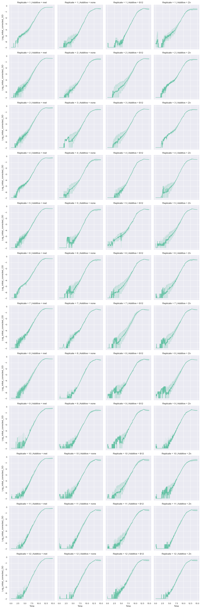
[182]:
# good_wells = ["A7", "A8", "A10",
# "B8", "B9", "B10", "B12",
# "C9", "C10", "C11", "C12",
# "D1","D5", "D8", "D12",
# "E10", "E11",
# "F3", "F4", "F5", "F7", "F8", "F9",
# "G9", "G10"]
# f_mdf = f_mdf.filter(pl.col("Well").is_in(good_wells))
[183]:
# removing_outliers = f_mdf.filter(
# (
# (pl.col("Column").is_in(["9", "10", "11"])) & (pl.col("Genotype") == "MG1655")
# )
# # |
# # (
# # (pl.col("Column").is_in(["8", "9","11", "12"])) & (pl.col("Genotype") == "YkgM1")
# # )
# )
# f_mdf = removing_outliers
[184]:
gr_df = f_mdf.filter( (pl.col("Time") < 20))
minimum_start_times = gr_df.filter(pl.col("Log_initial_corrected_OD") <= -4.5).group_by(["Plate", "Well"]).agg(pl.max("Time").alias("Time_exp_start")).sort("Time_exp_start")
minimum_end_times = gr_df.filter(pl.col("Log_initial_corrected_OD") >= -3).group_by(["Plate", "Well"]).agg(pl.min("Time").alias("Time_exp_end")).sort("Time_exp_end")
gr_df = gr_df.join(minimum_start_times, on=["Plate", "Well"])
gr_df = gr_df.join(minimum_end_times, on=["Plate", "Well"])
gr_df = gr_df.filter((pl.col("Time") > pl.col("Time_exp_start")) & (pl.col("Time") < pl.col("Time_exp_end")))
gr_df = gr_df.with_columns((pl.col("Time") - pl.col("Time_exp_start")).alias("Corrected_time"))
gr_df.head(5)
[184]:
shape: (5, 15)
| Time | Plate | Well | OD | Row | Column | Additive | Genotype | Initial_OD | Replicate | Initial_corrected_OD | Log_initial_corrected_OD | Time_exp_start | Time_exp_end | Corrected_time |
|---|---|---|---|---|---|---|---|---|---|---|---|---|---|---|
| f64 | str | str | f64 | str | str | str | str | f64 | i32 | f64 | f64 | f64 | f64 | f64 |
| 5.961111 | "Plate 1" | "A1" | 0.109 | "A" | "1" | "met" | "YkgM1" | 0.096 | 1 | 0.013 | -4.342806 | 5.936111 | 7.736111 | 0.025 |
| 5.986111 | "Plate 1" | "A1" | 0.109 | "A" | "1" | "met" | "YkgM1" | 0.096 | 1 | 0.013 | -4.342806 | 5.936111 | 7.736111 | 0.05 |
| 6.011111 | "Plate 1" | "A1" | 0.108 | "A" | "1" | "met" | "YkgM1" | 0.096 | 1 | 0.012 | -4.422849 | 5.936111 | 7.736111 | 0.075 |
| 6.036111 | "Plate 1" | "A1" | 0.111 | "A" | "1" | "met" | "YkgM1" | 0.096 | 1 | 0.015 | -4.199705 | 5.936111 | 7.736111 | 0.1 |
| 6.061111 | "Plate 1" | "A1" | 0.11 | "A" | "1" | "met" | "YkgM1" | 0.096 | 1 | 0.014 | -4.268698 | 5.936111 | 7.736111 | 0.125 |
[185]:
# regress and pick top x
predicted_gr = gr_df \
.to_pandas().groupby(['Genotype', 'Additive','Replicate', 'Plate']).apply(regress_error, 'Log_initial_corrected_OD', ['Corrected_time']).reset_index()
N = 4
top_gr = pl.DataFrame(predicted_gr.sort_values(by=["Genotype", "Additive", "Plate", "slope"], ascending=False).groupby(['Genotype', 'Additive', 'Plate']).nth[:N])
top_gr.head(7)
gr_df = gr_df.join(top_gr, on=["Additive", "Plate", "Replicate", "Genotype"])
/var/folders/dx/0239zgvj0tgf46b5h8l7v_fc0000gn/T/ipykernel_88080/1459300289.py:3: DeprecationWarning: DataFrameGroupBy.apply operated on the grouping columns. This behavior is deprecated, and in a future version of pandas the grouping columns will be excluded from the operation. Either pass `include_groups=False` to exclude the groupings or explicitly select the grouping columns after groupby to silence this warning.
.to_pandas().groupby(['Genotype', 'Additive','Replicate', 'Plate']).apply(regress_error, 'Log_initial_corrected_OD', ['Corrected_time']).reset_index()
[186]:
# sns.relplot(x="Corrected_time", y="Log_initial_corrected_OD", hue="Plate", kind="line", col="Additive", style="Replicate", row="Genotype", height=3, \
# data=gr_df)
sns.relplot(x="Corrected_time", y="Log_initial_corrected_OD", hue="Plate", kind="line", col="Additive", style="Replicate", col_wrap=4, height=3, \
data=gr_df)
plt.xlim([0,3])
# plt.savefig("shaky.png")
/Users/cyrus/.pyenv/versions/viv-10/lib/python3.10/site-packages/seaborn/_oldcore.py:1119: FutureWarning: use_inf_as_na option is deprecated and will be removed in a future version. Convert inf values to NaN before operating instead.
with pd.option_context('mode.use_inf_as_na', True):
/Users/cyrus/.pyenv/versions/viv-10/lib/python3.10/site-packages/seaborn/_oldcore.py:1119: FutureWarning: use_inf_as_na option is deprecated and will be removed in a future version. Convert inf values to NaN before operating instead.
with pd.option_context('mode.use_inf_as_na', True):
/Users/cyrus/.pyenv/versions/viv-10/lib/python3.10/site-packages/seaborn/_oldcore.py:1119: FutureWarning: use_inf_as_na option is deprecated and will be removed in a future version. Convert inf values to NaN before operating instead.
with pd.option_context('mode.use_inf_as_na', True):
/Users/cyrus/.pyenv/versions/viv-10/lib/python3.10/site-packages/seaborn/_oldcore.py:1119: FutureWarning: use_inf_as_na option is deprecated and will be removed in a future version. Convert inf values to NaN before operating instead.
with pd.option_context('mode.use_inf_as_na', True):
/Users/cyrus/.pyenv/versions/viv-10/lib/python3.10/site-packages/seaborn/_oldcore.py:1119: FutureWarning: use_inf_as_na option is deprecated and will be removed in a future version. Convert inf values to NaN before operating instead.
with pd.option_context('mode.use_inf_as_na', True):
/Users/cyrus/.pyenv/versions/viv-10/lib/python3.10/site-packages/seaborn/_oldcore.py:1119: FutureWarning: use_inf_as_na option is deprecated and will be removed in a future version. Convert inf values to NaN before operating instead.
with pd.option_context('mode.use_inf_as_na', True):
/Users/cyrus/.pyenv/versions/viv-10/lib/python3.10/site-packages/seaborn/_oldcore.py:1119: FutureWarning: use_inf_as_na option is deprecated and will be removed in a future version. Convert inf values to NaN before operating instead.
with pd.option_context('mode.use_inf_as_na', True):
/Users/cyrus/.pyenv/versions/viv-10/lib/python3.10/site-packages/seaborn/_oldcore.py:1119: FutureWarning: use_inf_as_na option is deprecated and will be removed in a future version. Convert inf values to NaN before operating instead.
with pd.option_context('mode.use_inf_as_na', True):
[186]:
(0.0, 3.0)
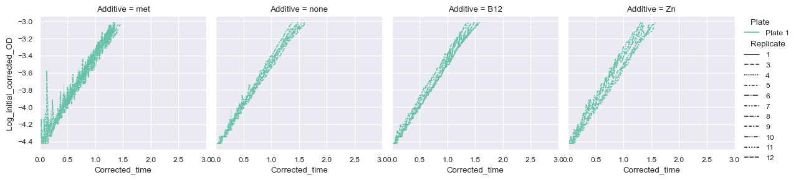
[187]:
sns.lmplot(x="Corrected_time", y="Log_initial_corrected_OD", hue="Replicate", col="Additive", row="Genotype", height=3, \
data=gr_df.to_pandas(), scatter_kws = {"alpha": 0.1})
plt.xlim([0,3])
[187]:
(0.0, 3.0)
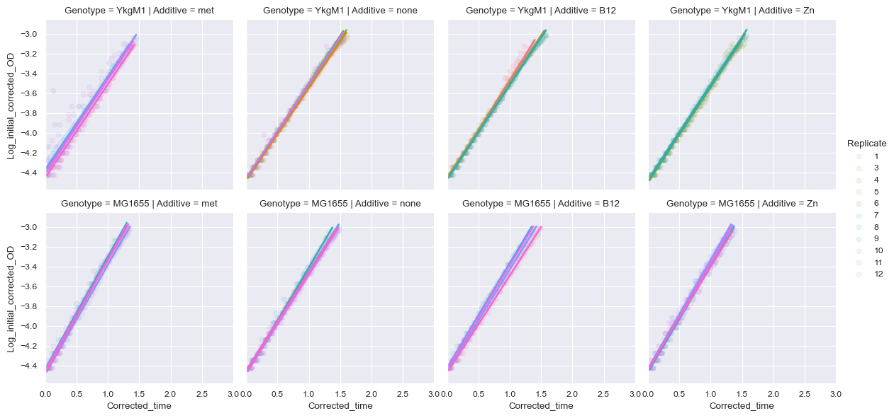
[188]:
# sns.lmplot(x="Corrected_time", y="Log_initial_corrected_OD", hue="Additive", row="Genotype", height=3, aspect=2, \
# data=gr_df.to_pandas(), scatter_kws = {"alpha": 0.1})
sns.lmplot(x="Corrected_time", y="Log_initial_corrected_OD", hue="Additive", row="Genotype", height=8, aspect=1, \
data=gr_df.to_pandas(), scatter_kws = {"alpha": 0.1})
plt.xlim([0,1.5])
[188]:
(0.0, 1.5)
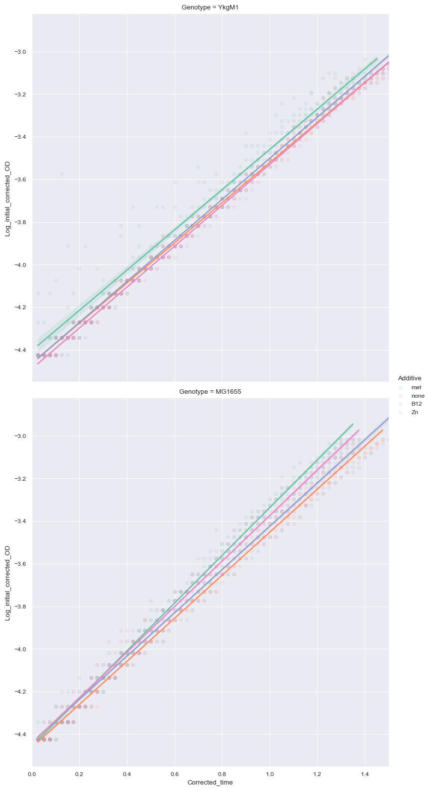
[189]:
predicted_gr = gr_df \
.to_pandas().groupby(['Genotype', 'Additive','Replicate', 'Plate']).apply(regress_error, 'Log_initial_corrected_OD', ['Corrected_time'])
predicted_gr["doubling_time"] = np.log(2) / predicted_gr["slope"]
predicted_gr = predicted_gr.reset_index()
gr_mean_std = predicted_gr.groupby(['Genotype', 'Additive']).agg({'slope':['mean','std']})
gr_mean_std.columns = gr_mean_std.columns.get_level_values(1)
gr_mean_std["doubling_time"] = np.log(2)/gr_mean_std["mean"]
# gr_mean_std = gr_mean_std.reset_index()
predicted_gr["doubling_time"] = np.log(2)/predicted_gr["slope"]
predicted_gr
/var/folders/dx/0239zgvj0tgf46b5h8l7v_fc0000gn/T/ipykernel_88080/544480332.py:2: DeprecationWarning: DataFrameGroupBy.apply operated on the grouping columns. This behavior is deprecated, and in a future version of pandas the grouping columns will be excluded from the operation. Either pass `include_groups=False` to exclude the groupings or explicitly select the grouping columns after groupby to silence this warning.
.to_pandas().groupby(['Genotype', 'Additive','Replicate', 'Plate']).apply(regress_error, 'Log_initial_corrected_OD', ['Corrected_time'])
[189]:
| Genotype | Additive | Replicate | Plate | slope | intercept | slope_e | intercept_e | doubling_time | |
|---|---|---|---|---|---|---|---|---|---|
| 0 | MG1655 | B12 | 9 | Plate 1 | 1.052209 | -4.419591 | 0.008307 | 0.006565 | 0.658754 |
| 1 | MG1655 | B12 | 10 | Plate 1 | 1.024863 | -4.455974 | 0.007288 | 0.006075 | 0.676332 |
| 2 | MG1655 | B12 | 11 | Plate 1 | 1.042112 | -4.427508 | 0.006717 | 0.005405 | 0.665137 |
| 3 | MG1655 | B12 | 12 | Plate 1 | 0.980806 | -4.472615 | 0.005575 | 0.004888 | 0.706712 |
| 4 | MG1655 | Zn | 9 | Plate 1 | 1.067921 | -4.464097 | 0.015907 | 0.012800 | 0.649062 |
| 5 | MG1655 | Zn | 10 | Plate 1 | 1.096946 | -4.428540 | 0.010703 | 0.008304 | 0.631888 |
| 6 | MG1655 | Zn | 11 | Plate 1 | 1.085093 | -4.447638 | 0.012119 | 0.009577 | 0.638791 |
| 7 | MG1655 | Zn | 12 | Plate 1 | 1.027932 | -4.430726 | 0.013266 | 0.010483 | 0.674312 |
| 8 | MG1655 | met | 9 | Plate 1 | 1.129564 | -4.428696 | 0.014093 | 0.010730 | 0.613641 |
| 9 | MG1655 | met | 10 | Plate 1 | 1.105056 | -4.486548 | 0.011958 | 0.009450 | 0.627251 |
| 10 | MG1655 | met | 11 | Plate 1 | 1.105664 | -4.439126 | 0.012263 | 0.009513 | 0.626906 |
| 11 | MG1655 | met | 12 | Plate 1 | 1.147954 | -4.475173 | 0.010972 | 0.008353 | 0.603811 |
| 12 | MG1655 | none | 8 | Plate 1 | 1.069149 | -4.477823 | 0.006812 | 0.005482 | 0.648317 |
| 13 | MG1655 | none | 9 | Plate 1 | 0.996380 | -4.446801 | 0.011419 | 0.009848 | 0.695665 |
| 14 | MG1655 | none | 11 | Plate 1 | 0.998742 | -4.481440 | 0.008407 | 0.007250 | 0.694020 |
| 15 | MG1655 | none | 12 | Plate 1 | 0.991389 | -4.448749 | 0.006410 | 0.005435 | 0.699167 |
| 16 | YkgM1 | B12 | 1 | Plate 1 | 1.010489 | -4.476996 | 0.015948 | 0.013063 | 0.685952 |
| 17 | YkgM1 | B12 | 4 | Plate 1 | 0.952422 | -4.445246 | 0.007475 | 0.006770 | 0.727774 |
| 18 | YkgM1 | B12 | 7 | Plate 1 | 0.955161 | -4.475216 | 0.005611 | 0.005163 | 0.725686 |
| 19 | YkgM1 | B12 | 8 | Plate 1 | 0.954956 | -4.468661 | 0.005275 | 0.004854 | 0.725842 |
| 20 | YkgM1 | Zn | 4 | Plate 1 | 0.949987 | -4.490807 | 0.006271 | 0.005408 | 0.729639 |
| 21 | YkgM1 | Zn | 5 | Plate 1 | 0.966430 | -4.502874 | 0.012065 | 0.010928 | 0.717224 |
| 22 | YkgM1 | Zn | 7 | Plate 1 | 0.957499 | -4.490227 | 0.005124 | 0.004493 | 0.723914 |
| 23 | YkgM1 | Zn | 8 | Plate 1 | 0.957732 | -4.468593 | 0.006313 | 0.005808 | 0.723738 |
| 24 | YkgM1 | met | 9 | Plate 1 | 0.938304 | -4.369875 | 0.037560 | 0.029682 | 0.738724 |
| 25 | YkgM1 | met | 10 | Plate 1 | 0.947228 | -4.384148 | 0.025550 | 0.021666 | 0.731763 |
| 26 | YkgM1 | met | 11 | Plate 1 | 0.951164 | -4.409433 | 0.036458 | 0.029863 | 0.728736 |
| 27 | YkgM1 | met | 12 | Plate 1 | 0.943033 | -4.451282 | 0.020344 | 0.016958 | 0.735019 |
| 28 | YkgM1 | none | 3 | Plate 1 | 0.931821 | -4.480416 | 0.005665 | 0.005295 | 0.743863 |
| 29 | YkgM1 | none | 5 | Plate 1 | 0.930161 | -4.451306 | 0.005927 | 0.005540 | 0.745191 |
| 30 | YkgM1 | none | 6 | Plate 1 | 0.961484 | -4.464242 | 0.005637 | 0.005106 | 0.720914 |
| 31 | YkgM1 | none | 11 | Plate 1 | 0.948286 | -4.456880 | 0.011500 | 0.010415 | 0.730948 |
[190]:
g = sns.catplot(x="Genotype", y="doubling_time", hue="Additive",
data=predicted_gr, kind="bar",
height=8, aspect=1, alpha=0.5);
plt.ylim([0,1])
[190]:
(0.0, 1.0)
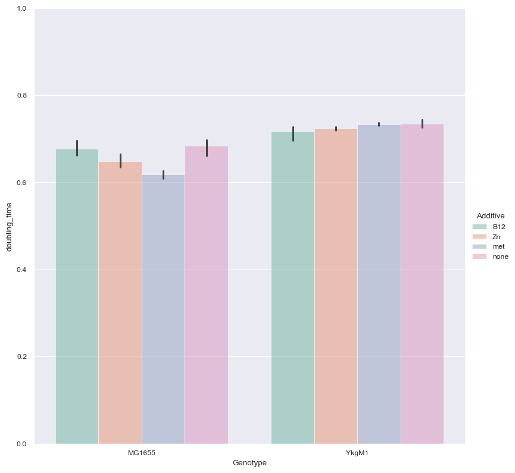
[191]:
filter_df = pl.DataFrame(predicted_gr) #.filter((pl.col("Plate") == "Plate 2"))
filter_df.head(5)
g = sns.catplot(x="Genotype", y="doubling_time", hue="Additive",
data=filter_df.to_pandas(), kind="bar",
height=8, aspect=1, alpha=0.5);
g.map_dataframe(sns.stripplot, x="Genotype", y="doubling_time",
hue="Additive", palette="Set2",
alpha=0.6, dodge=True)
plt.title("Minimum doubling time, average (bar) and individual measurements (point), n=3")
# g.map(sns.stripplot, "sex", "total_bill", "smoker",
# palette=["#404040"], alpha=0.6, dodge=True)
plt.ylim([0, 1])
plt.show()
g.savefig("story1.png")
/Users/cyrus/.pyenv/versions/viv-10/lib/python3.10/site-packages/seaborn/_oldcore.py:1119: FutureWarning: use_inf_as_na option is deprecated and will be removed in a future version. Convert inf values to NaN before operating instead.
with pd.option_context('mode.use_inf_as_na', True):
/Users/cyrus/.pyenv/versions/viv-10/lib/python3.10/site-packages/seaborn/_oldcore.py:1119: FutureWarning: use_inf_as_na option is deprecated and will be removed in a future version. Convert inf values to NaN before operating instead.
with pd.option_context('mode.use_inf_as_na', True):
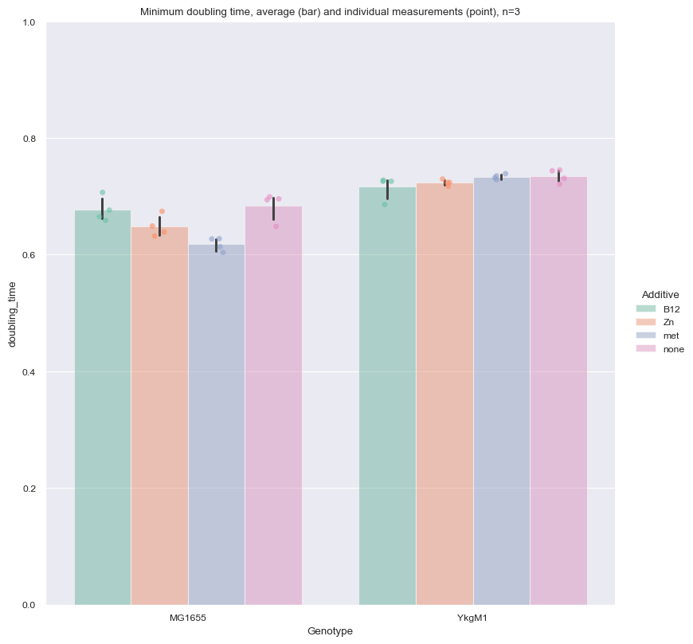
Mut day two
Importing data
[320]:
additive = {"A": "met", "B": "none", "C": "B12", "D": "Zn","E": "met", "F": "none", "G": "B12", "H": "Zn"}
adf = pl.DataFrame(additive).transpose(include_header=True)
adf = adf.rename({"column": "Row", "column_0": "Additive"})
genotype_row = [["A", "B", "C", "D"], ["E", "F", "G", "H"]]
genotype_col = [["1", "2", "3", "4"], ["5", "6", "7", "8"], ["9", "10", "11", "12"]]
genotype_combinations = {"YkgM1": [0, 0], "YkgM2": [0, 1], "MetH": [0, 2], "Zur": [1, 0], "MetE": [1, 1], "MG1655": [1, 2]}
gdf = []
for genotype, idx in genotype_combinations.items():
gdf.extend([[genotype, x+y] for x in genotype_row[idx[0]] for y in genotype_col[idx[1]]])
gdf
gdf = pl.DataFrame(gdf).transpose()
gdf = gdf.rename({"column_0": "Genotype", "column_1": "Well"})
df = pl.read_csv("growth_data/cyrus_mutant_020124.txt", separator="\t")
df = df.drop('T600')
df.head(3)
blank_df = pl.read_csv("growth_data/cyrus_mutant_blanks_020124.txt", separator="\t")
blank_df = blank_df.drop(['T600', 'Time']).mean().transpose(include_header=True)
blank_df = blank_df.rename({"column": "Well", "column_0": "Background_OD"})
blank_df.head(3)
[320]:
shape: (3, 2)
| Well | Background_OD |
|---|---|
| str | f64 |
| "A1" | 0.094238 |
| "A2" | 0.137952 |
| "A3" | 0.179333 |
[321]:
# time conversion
df = df.with_columns(pl.col("Time").str.to_time("%H:%M:%S"))
df = df.with_columns(df['Time'].dt.hour().cast(pl.Int64) + df['Time'].dt.minute().cast(pl.Int64) / 60 + df['Time'].dt.second() / 3600)
# initial measurement
init_df = df.drop("Time")[0:100,:].min().transpose(include_header=True)
init_df = init_df.rename({"column": "Well", "column_0": "Initial_OD"})
# melt to experiments
mdf = df.melt(id_vars="Time", variable_name="Well", value_name="OD")
mdf = mdf.with_columns((mdf["Well"].str.slice(0,1)).alias("Row"))
mdf = mdf.with_columns((mdf["Well"].str.slice(1)).alias("Column"))
mdf = mdf.join(adf, on="Row")
mdf = mdf.join(gdf, on="Well")
mdf = mdf.join(blank_df, on="Well")
mdf = mdf.join(init_df, on="Well")
mdf = mdf.with_columns(((pl.col("Column").cast(pl.Int32)+3) % 4 + 1).alias("Replicate"))
mdf
[321]:
shape: (66_240, 10)
| Time | Well | OD | Row | Column | Additive | Genotype | Background_OD | Initial_OD | Replicate |
|---|---|---|---|---|---|---|---|---|---|
| f64 | str | f64 | str | str | str | str | f64 | f64 | i32 |
| 0.011111 | "A1" | 0.171 | "A" | "1" | "met" | "YkgM1" | 0.094238 | 0.166 | 1 |
| 0.036111 | "A1" | 0.171 | "A" | "1" | "met" | "YkgM1" | 0.094238 | 0.166 | 1 |
| 0.061111 | "A1" | 0.169 | "A" | "1" | "met" | "YkgM1" | 0.094238 | 0.166 | 1 |
| 0.086111 | "A1" | 0.168 | "A" | "1" | "met" | "YkgM1" | 0.094238 | 0.166 | 1 |
| 0.111111 | "A1" | 0.169 | "A" | "1" | "met" | "YkgM1" | 0.094238 | 0.166 | 1 |
| 0.136111 | "A1" | 0.169 | "A" | "1" | "met" | "YkgM1" | 0.094238 | 0.166 | 1 |
| 0.161111 | "A1" | 0.167 | "A" | "1" | "met" | "YkgM1" | 0.094238 | 0.166 | 1 |
| 0.186111 | "A1" | 0.168 | "A" | "1" | "met" | "YkgM1" | 0.094238 | 0.166 | 1 |
| 0.211111 | "A1" | 0.167 | "A" | "1" | "met" | "YkgM1" | 0.094238 | 0.166 | 1 |
| 0.236111 | "A1" | 0.166 | "A" | "1" | "met" | "YkgM1" | 0.094238 | 0.166 | 1 |
| 0.261111 | "A1" | 0.166 | "A" | "1" | "met" | "YkgM1" | 0.094238 | 0.166 | 1 |
| 0.286111 | "A1" | 0.166 | "A" | "1" | "met" | "YkgM1" | 0.094238 | 0.166 | 1 |
| … | … | … | … | … | … | … | … | … | … |
| 16.961111 | "H12" | 1.149 | "H" | "12" | "Zn" | "MG1655" | 0.102143 | 0.168 | 4 |
| 16.986111 | "H12" | 1.147 | "H" | "12" | "Zn" | "MG1655" | 0.102143 | 0.168 | 4 |
| 17.011111 | "H12" | 1.15 | "H" | "12" | "Zn" | "MG1655" | 0.102143 | 0.168 | 4 |
| 17.036111 | "H12" | 1.149 | "H" | "12" | "Zn" | "MG1655" | 0.102143 | 0.168 | 4 |
| 17.061111 | "H12" | 1.151 | "H" | "12" | "Zn" | "MG1655" | 0.102143 | 0.168 | 4 |
| 17.086111 | "H12" | 1.15 | "H" | "12" | "Zn" | "MG1655" | 0.102143 | 0.168 | 4 |
| 17.111111 | "H12" | 1.152 | "H" | "12" | "Zn" | "MG1655" | 0.102143 | 0.168 | 4 |
| 17.136111 | "H12" | 1.153 | "H" | "12" | "Zn" | "MG1655" | 0.102143 | 0.168 | 4 |
| 17.161111 | "H12" | 1.152 | "H" | "12" | "Zn" | "MG1655" | 0.102143 | 0.168 | 4 |
| 17.186111 | "H12" | 1.152 | "H" | "12" | "Zn" | "MG1655" | 0.102143 | 0.168 | 4 |
| 17.211111 | "H12" | 1.152 | "H" | "12" | "Zn" | "MG1655" | 0.102143 | 0.168 | 4 |
| 17.236111 | "H12" | 1.153 | "H" | "12" | "Zn" | "MG1655" | 0.102143 | 0.168 | 4 |
[322]:
mdf = mdf.with_columns([
(pl.col("OD") - pl.col("Background_OD")).alias("Background_corrected_OD"),
(pl.col("OD") - pl.col("Initial_OD")).alias("Initial_corrected_OD"),
# (
# (pl.col("OD") - pl.col("Background_OD")) / (pl.col("Initial_OD") - pl.col("Background_OD"))
# ).alias("Normalized_OD")
])
mdf.head(5)
[322]:
shape: (5, 12)
| Time | Well | OD | Row | Column | Additive | Genotype | Background_OD | Initial_OD | Replicate | Background_corrected_OD | Initial_corrected_OD |
|---|---|---|---|---|---|---|---|---|---|---|---|
| f64 | str | f64 | str | str | str | str | f64 | f64 | i32 | f64 | f64 |
| 0.011111 | "A1" | 0.171 | "A" | "1" | "met" | "YkgM1" | 0.094238 | 0.166 | 1 | 0.076762 | 0.005 |
| 0.036111 | "A1" | 0.171 | "A" | "1" | "met" | "YkgM1" | 0.094238 | 0.166 | 1 | 0.076762 | 0.005 |
| 0.061111 | "A1" | 0.169 | "A" | "1" | "met" | "YkgM1" | 0.094238 | 0.166 | 1 | 0.074762 | 0.003 |
| 0.086111 | "A1" | 0.168 | "A" | "1" | "met" | "YkgM1" | 0.094238 | 0.166 | 1 | 0.073762 | 0.002 |
| 0.111111 | "A1" | 0.169 | "A" | "1" | "met" | "YkgM1" | 0.094238 | 0.166 | 1 | 0.074762 | 0.003 |
Plot raw data
[323]:
sns.relplot(x="Time", y="Initial_corrected_OD", hue="Replicate", kind="line", col="Additive", row="Genotype", height=3, \
data=mdf)
[323]:
<seaborn.axisgrid.FacetGrid at 0x3d33765c0>
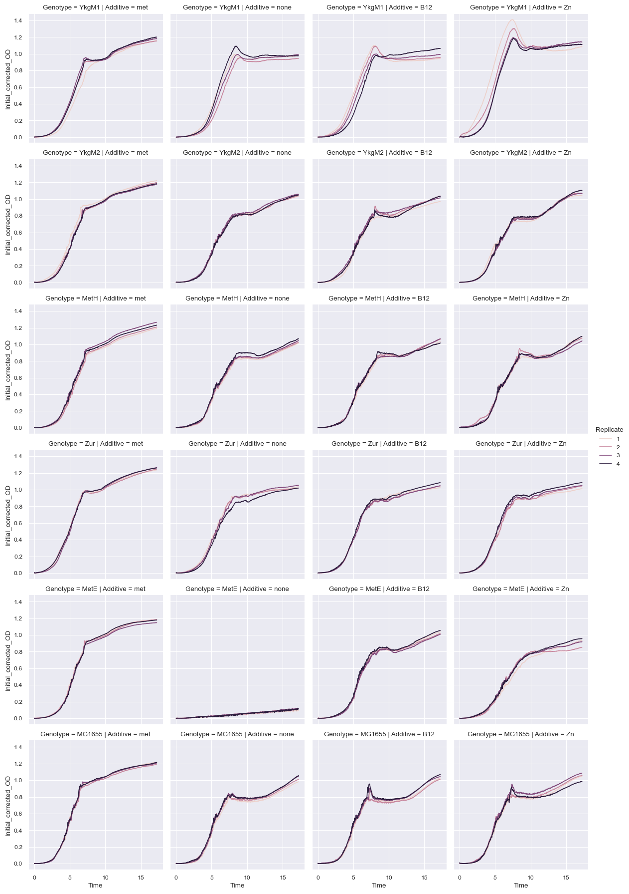
Get growth rates
[324]:
f_mdf = mdf.filter(pl.col("Initial_corrected_OD") > 0)
f_mdf = f_mdf.with_columns([
(pl.col("Initial_corrected_OD").log())
.alias("Log_initial_corrected_OD")
])
f_mdf.head(5)
[324]:
shape: (5, 13)
| Time | Well | OD | Row | Column | Additive | Genotype | Background_OD | Initial_OD | Replicate | Background_corrected_OD | Initial_corrected_OD | Log_initial_corrected_OD |
|---|---|---|---|---|---|---|---|---|---|---|---|---|
| f64 | str | f64 | str | str | str | str | f64 | f64 | i32 | f64 | f64 | f64 |
| 0.011111 | "A1" | 0.171 | "A" | "1" | "met" | "YkgM1" | 0.094238 | 0.166 | 1 | 0.076762 | 0.005 | -5.298317 |
| 0.036111 | "A1" | 0.171 | "A" | "1" | "met" | "YkgM1" | 0.094238 | 0.166 | 1 | 0.076762 | 0.005 | -5.298317 |
| 0.061111 | "A1" | 0.169 | "A" | "1" | "met" | "YkgM1" | 0.094238 | 0.166 | 1 | 0.074762 | 0.003 | -5.809143 |
| 0.086111 | "A1" | 0.168 | "A" | "1" | "met" | "YkgM1" | 0.094238 | 0.166 | 1 | 0.073762 | 0.002 | -6.214608 |
| 0.111111 | "A1" | 0.169 | "A" | "1" | "met" | "YkgM1" | 0.094238 | 0.166 | 1 | 0.074762 | 0.003 | -5.809143 |
[325]:
sns.relplot(x="Time", y="Log_initial_corrected_OD", hue="Replicate", kind="line", col="Additive", row="Genotype", height=3, \
data=f_mdf)
[325]:
<seaborn.axisgrid.FacetGrid at 0x412c3c760>
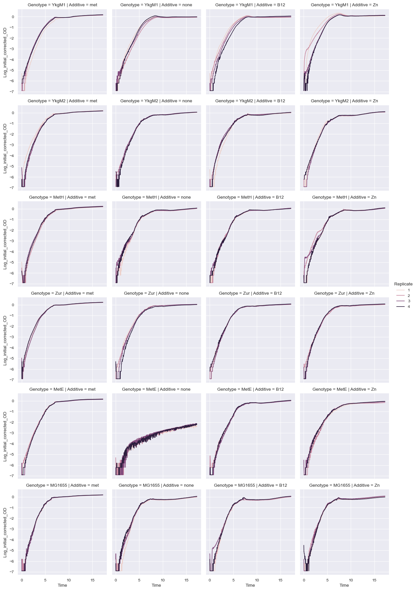
[326]:
gr_df = f_mdf.filter( (pl.col("Time") < 10))
minimum_start_times = gr_df.filter(pl.col("Log_initial_corrected_OD") <= -4.5).group_by("Well").agg(pl.max("Time").alias("Time_exp_start")).sort("Time_exp_start")
minimum_end_times = gr_df.filter(pl.col("Log_initial_corrected_OD") >= -2).group_by("Well").agg(pl.min("Time").alias("Time_exp_end")).sort("Time_exp_end")
gr_df = gr_df.join(minimum_start_times, on="Well")
gr_df = gr_df.join(minimum_end_times, on="Well")
gr_df = gr_df.filter((pl.col("Time") > pl.col("Time_exp_start")) & (pl.col("Time") < pl.col("Time_exp_end")))
gr_df = gr_df.with_columns((pl.col("Time") - pl.col("Time_exp_start")).alias("Corrected_time"))
gr_df
[326]:
shape: (8_150, 16)
| Time | Well | OD | Row | Column | Additive | Genotype | Background_OD | Initial_OD | Replicate | Background_corrected_OD | Initial_corrected_OD | Log_initial_corrected_OD | Time_exp_start | Time_exp_end | Corrected_time |
|---|---|---|---|---|---|---|---|---|---|---|---|---|---|---|---|
| f64 | str | f64 | str | str | str | str | f64 | f64 | i32 | f64 | f64 | f64 | f64 | f64 | f64 |
| 1.811111 | "A1" | 0.178 | "A" | "1" | "met" | "YkgM1" | 0.094238 | 0.166 | 1 | 0.083762 | 0.012 | -4.422849 | 1.786111 | 3.911111 | 0.025 |
| 1.836111 | "A1" | 0.178 | "A" | "1" | "met" | "YkgM1" | 0.094238 | 0.166 | 1 | 0.083762 | 0.012 | -4.422849 | 1.786111 | 3.911111 | 0.05 |
| 1.861111 | "A1" | 0.178 | "A" | "1" | "met" | "YkgM1" | 0.094238 | 0.166 | 1 | 0.083762 | 0.012 | -4.422849 | 1.786111 | 3.911111 | 0.075 |
| 1.886111 | "A1" | 0.18 | "A" | "1" | "met" | "YkgM1" | 0.094238 | 0.166 | 1 | 0.085762 | 0.014 | -4.268698 | 1.786111 | 3.911111 | 0.1 |
| 1.911111 | "A1" | 0.18 | "A" | "1" | "met" | "YkgM1" | 0.094238 | 0.166 | 1 | 0.085762 | 0.014 | -4.268698 | 1.786111 | 3.911111 | 0.125 |
| 1.936111 | "A1" | 0.18 | "A" | "1" | "met" | "YkgM1" | 0.094238 | 0.166 | 1 | 0.085762 | 0.014 | -4.268698 | 1.786111 | 3.911111 | 0.15 |
| 1.961111 | "A1" | 0.18 | "A" | "1" | "met" | "YkgM1" | 0.094238 | 0.166 | 1 | 0.085762 | 0.014 | -4.268698 | 1.786111 | 3.911111 | 0.175 |
| 1.986111 | "A1" | 0.181 | "A" | "1" | "met" | "YkgM1" | 0.094238 | 0.166 | 1 | 0.086762 | 0.015 | -4.199705 | 1.786111 | 3.911111 | 0.2 |
| 2.011111 | "A1" | 0.181 | "A" | "1" | "met" | "YkgM1" | 0.094238 | 0.166 | 1 | 0.086762 | 0.015 | -4.199705 | 1.786111 | 3.911111 | 0.225 |
| 2.036111 | "A1" | 0.182 | "A" | "1" | "met" | "YkgM1" | 0.094238 | 0.166 | 1 | 0.087762 | 0.016 | -4.135167 | 1.786111 | 3.911111 | 0.25 |
| 2.061111 | "A1" | 0.182 | "A" | "1" | "met" | "YkgM1" | 0.094238 | 0.166 | 1 | 0.087762 | 0.016 | -4.135167 | 1.786111 | 3.911111 | 0.275 |
| 2.086111 | "A1" | 0.183 | "A" | "1" | "met" | "YkgM1" | 0.094238 | 0.166 | 1 | 0.088762 | 0.017 | -4.074542 | 1.786111 | 3.911111 | 0.3 |
| … | … | … | … | … | … | … | … | … | … | … | … | … | … | … | … |
| 3.286111 | "H12" | 0.261 | "H" | "12" | "Zn" | "MG1655" | 0.102143 | 0.168 | 4 | 0.158857 | 0.093 | -2.375156 | 1.886111 | 3.586111 | 1.4 |
| 3.311111 | "H12" | 0.26 | "H" | "12" | "Zn" | "MG1655" | 0.102143 | 0.168 | 4 | 0.157857 | 0.092 | -2.385967 | 1.886111 | 3.586111 | 1.425 |
| 3.336111 | "H12" | 0.267 | "H" | "12" | "Zn" | "MG1655" | 0.102143 | 0.168 | 4 | 0.164857 | 0.099 | -2.312635 | 1.886111 | 3.586111 | 1.45 |
| 3.361111 | "H12" | 0.27 | "H" | "12" | "Zn" | "MG1655" | 0.102143 | 0.168 | 4 | 0.167857 | 0.102 | -2.282782 | 1.886111 | 3.586111 | 1.475 |
| 3.386111 | "H12" | 0.268 | "H" | "12" | "Zn" | "MG1655" | 0.102143 | 0.168 | 4 | 0.165857 | 0.1 | -2.302585 | 1.886111 | 3.586111 | 1.5 |
| 3.411111 | "H12" | 0.275 | "H" | "12" | "Zn" | "MG1655" | 0.102143 | 0.168 | 4 | 0.172857 | 0.107 | -2.234926 | 1.886111 | 3.586111 | 1.525 |
| 3.436111 | "H12" | 0.274 | "H" | "12" | "Zn" | "MG1655" | 0.102143 | 0.168 | 4 | 0.171857 | 0.106 | -2.244316 | 1.886111 | 3.586111 | 1.55 |
| 3.461111 | "H12" | 0.28 | "H" | "12" | "Zn" | "MG1655" | 0.102143 | 0.168 | 4 | 0.177857 | 0.112 | -2.189256 | 1.886111 | 3.586111 | 1.575 |
| 3.486111 | "H12" | 0.281 | "H" | "12" | "Zn" | "MG1655" | 0.102143 | 0.168 | 4 | 0.178857 | 0.113 | -2.180367 | 1.886111 | 3.586111 | 1.6 |
| 3.511111 | "H12" | 0.285 | "H" | "12" | "Zn" | "MG1655" | 0.102143 | 0.168 | 4 | 0.182857 | 0.117 | -2.145581 | 1.886111 | 3.586111 | 1.625 |
| 3.536111 | "H12" | 0.291 | "H" | "12" | "Zn" | "MG1655" | 0.102143 | 0.168 | 4 | 0.188857 | 0.123 | -2.095571 | 1.886111 | 3.586111 | 1.65 |
| 3.561111 | "H12" | 0.297 | "H" | "12" | "Zn" | "MG1655" | 0.102143 | 0.168 | 4 | 0.194857 | 0.129 | -2.047943 | 1.886111 | 3.586111 | 1.675 |
[327]:
sns.relplot(x="Corrected_time", y="Log_initial_corrected_OD", hue="Replicate", kind="line", col="Additive", row="Genotype", height=3, \
data=gr_df)
plt.xlim([0,4])
[327]:
(0.0, 4.0)
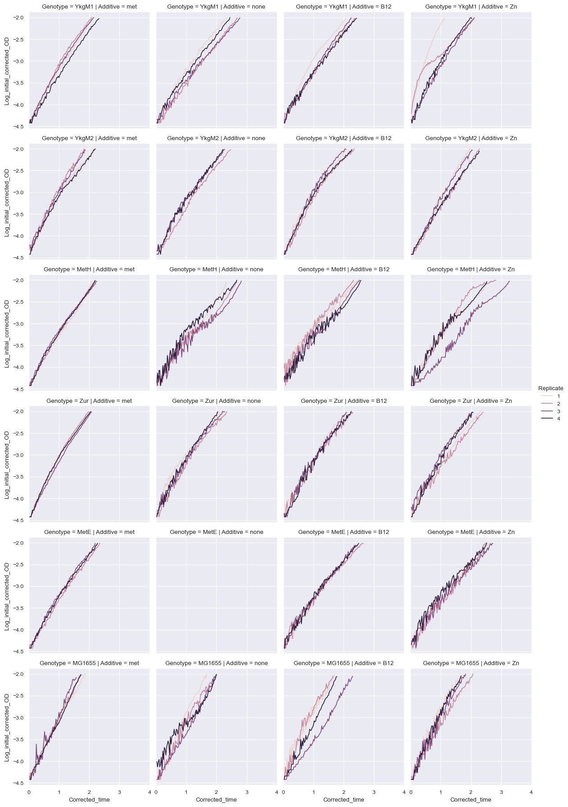
[328]:
predicted_gr = gr_df \
.to_pandas().groupby(['Genotype', 'Additive','Replicate']).apply(regress_error, 'Log_initial_corrected_OD', ['Corrected_time'])
predicted_gr["doubling_time"] = np.log(2) / predicted_gr["slope"]
predicted_gr = predicted_gr.reset_index()
gr_mean_std = predicted_gr.groupby(['Genotype', 'Additive']).agg({'slope':['mean','std']})
gr_mean_std.columns = gr_mean_std.columns.get_level_values(1)
gr_mean_std["doubling_time"] = np.log(2)/gr_mean_std["mean"]
# gr_mean_std = gr_mean_std.reset_index()
predicted_gr["doubling_time"] = np.log(2)/predicted_gr["slope"]
predicted_gr
[328]:
| Genotype | Additive | Replicate | slope | intercept | slope_e | intercept_e | doubling_time | |
|---|---|---|---|---|---|---|---|---|
| 0 | MG1655 | B12 | 1 | 1.324157 | -4.212585 | 0.034644 | 0.034378 | 0.523463 |
| 1 | MG1655 | B12 | 2 | 1.427234 | -4.281178 | 0.031208 | 0.030067 | 0.485658 |
| 2 | MG1655 | B12 | 3 | 1.066257 | -4.564200 | 0.009580 | 0.012825 | 0.650075 |
| 3 | MG1655 | B12 | 4 | 1.347420 | -4.479041 | 0.013150 | 0.013619 | 0.514426 |
| 4 | MG1655 | Zn | 1 | 1.431332 | -4.309911 | 0.028843 | 0.028621 | 0.484267 |
| ... | ... | ... | ... | ... | ... | ... | ... | ... |
| 87 | Zur | met | 4 | 1.190536 | -4.325590 | 0.014427 | 0.017232 | 0.582215 |
| 88 | Zur | none | 1 | 0.986011 | -4.028845 | 0.013609 | 0.016844 | 0.702981 |
| 89 | Zur | none | 2 | 1.039713 | -4.312025 | 0.012869 | 0.017600 | 0.666672 |
| 90 | Zur | none | 3 | 1.050107 | -4.238075 | 0.013530 | 0.017918 | 0.660073 |
| 91 | Zur | none | 4 | 1.132044 | -4.259421 | 0.013438 | 0.016051 | 0.612297 |
92 rows × 8 columns
[329]:
g = sns.catplot(x="Genotype", y="doubling_time", hue="Additive",
data=predicted_gr, kind="bar", estimator="median",
height=8, aspect=1.5, alpha=0.5);
g.map_dataframe(sns.stripplot, x="Genotype", y="doubling_time",
hue="Additive", palette="Set2",
alpha=0.6, dodge=True)
plt.title("Median growth rate (bar) and individual measurements (point)")
# g.map(sns.stripplot, "sex", "total_bill", "smoker",
# palette=["#404040"], alpha=0.6, dodge=True)
plt.ylim([0, 1])
plt.show()
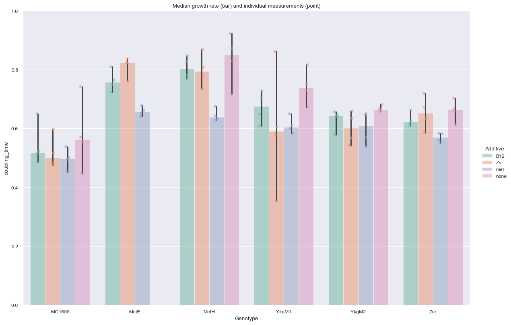
Slope fits
[330]:
rerun_fits = False
import warnings
warnings.filterwarnings('ignore')
wells = list(f_mdf["Well"].unique())
timepoints = list(f_mdf["Time"].unique())
window = 50
well_fits = {}
if rerun_fits == True:
for well in wells:
fits = []
for i, time in enumerate(timepoints):
cur_df = f_mdf.filter(
(pl.col("Well") == well) &
(pl.col("Time").is_in(timepoints[i:i+window]) )
)
fit = np.polyfit(cur_df["Time"],cur_df["Log_initial_corrected_OD"], 1)[0]
fits.append(fit)
# print(f"for well {well} at time {time}, the instantenous slope is {fit}")
well_fits[well] = fits
[331]:
rerun_fit_plots = False
if rerun_fit_plots == True:
wf_df = pl.DataFrame(well_fits)
wf_df = wf_df.with_columns(pl.arange(0, len(wf_df)).alias("Step"))
# melt to experiments
wf_df = wf_df.melt(id_vars="Step", variable_name="Well", value_name="Slope")
wf_df = wf_df.with_columns((wf_df["Well"].str.slice(0,1)).alias("Row"))
wf_df = wf_df.with_columns((wf_df["Well"].str.slice(1)).alias("Column"))
wf_df = wf_df.join(adf, on="Row")
wf_df = wf_df.join(gdf, on="Well")
wf_df = wf_df.with_columns(((pl.col("Column").cast(pl.Int32)+3) % 4 + 1).alias("Replicate"))
wf_df.head(5)
sns.relplot(x="Step", y="Slope", kind="line", col="Additive", row="Genotype", height=3, \
data=wf_df.filter(
(pl.col("Step") > 50) & (pl.col("Step") < 200) & (pl.col("Slope") > 0) & (pl.col("Slope") < 2.5)
)
)
Test of linear fit
[332]:
sns.lmplot(x="Corrected_time", y="Log_initial_corrected_OD", hue="Replicate", col="Additive", row="Genotype", height=3, \
data=gr_df.to_pandas(), scatter_kws = {"alpha": 0.2})
plt.xlim([0,4])
[332]:
(0.0, 4.0)
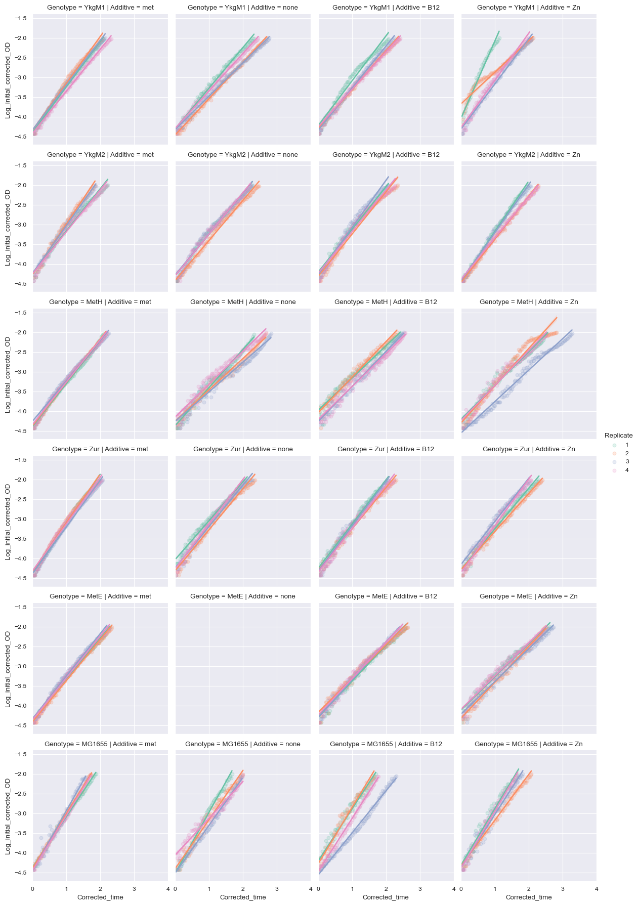
Mut
[333]:
additive = {"A": "met", "B": "none", "C": "B12", "D": "Zn","E": "met", "F": "none", "G": "B12", "H": "Zn"}
adf = pl.DataFrame(additive).transpose(include_header=True)
adf = adf.rename({"column": "Row", "column_0": "Additive"})
[334]:
genotype_row = [["A", "B", "C", "D"], ["E", "F", "G", "H"]]
genotype_col = [["1", "2", "3", "4"], ["5", "6", "7", "8"], ["9", "10", "11", "12"]]
genotype_combinations = {"YkgM1": [0, 0], "YkgM2": [0, 1], "MetH": [0, 2], "Zur": [1, 0], "MetE": [1, 1], "MG1655": [1, 2]}
[335]:
gdf = []
for genotype, idx in genotype_combinations.items():
gdf.extend([[genotype, x+y] for x in genotype_row[idx[0]] for y in genotype_col[idx[1]]])
gdf
gdf = pl.DataFrame(gdf).transpose()
gdf = gdf.rename({"column_0": "Genotype", "column_1": "Well"})
[336]:
df = pl.read_csv("growth_data/cyrus_mutant_013124.txt", separator="\t")
df = df.drop('T600')
df.head(3)
[336]:
shape: (3, 97)
| Time | A1 | A2 | A3 | A4 | A5 | A6 | A7 | A8 | A9 | A10 | A11 | A12 | B1 | B2 | B3 | B4 | B5 | B6 | B7 | B8 | B9 | B10 | B11 | B12 | C1 | C2 | C3 | C4 | C5 | C6 | C7 | C8 | C9 | C10 | C11 | C12 | … | E12 | F1 | F2 | F3 | F4 | F5 | F6 | F7 | F8 | F9 | F10 | F11 | F12 | G1 | G2 | G3 | G4 | G5 | G6 | G7 | G8 | G9 | G10 | G11 | G12 | H1 | H2 | H3 | H4 | H5 | H6 | H7 | H8 | H9 | H10 | H11 | H12 |
|---|---|---|---|---|---|---|---|---|---|---|---|---|---|---|---|---|---|---|---|---|---|---|---|---|---|---|---|---|---|---|---|---|---|---|---|---|---|---|---|---|---|---|---|---|---|---|---|---|---|---|---|---|---|---|---|---|---|---|---|---|---|---|---|---|---|---|---|---|---|---|---|---|---|---|
| str | f64 | f64 | f64 | f64 | f64 | f64 | f64 | f64 | f64 | f64 | f64 | f64 | f64 | f64 | f64 | f64 | f64 | f64 | f64 | f64 | f64 | f64 | f64 | f64 | f64 | f64 | f64 | f64 | f64 | f64 | f64 | f64 | f64 | f64 | f64 | f64 | … | f64 | f64 | f64 | f64 | f64 | f64 | f64 | f64 | f64 | f64 | f64 | f64 | f64 | f64 | f64 | f64 | f64 | f64 | f64 | f64 | f64 | f64 | f64 | f64 | f64 | f64 | f64 | f64 | f64 | f64 | f64 | f64 | f64 | f64 | f64 | f64 | f64 |
| "0:01:02" | 0.172 | 0.159 | 0.127 | 0.12 | 0.146 | 0.111 | 0.106 | 0.108 | 0.147 | 0.144 | 0.125 | 0.107 | 0.125 | 0.128 | 0.172 | 0.173 | 0.123 | 0.165 | 0.154 | 0.124 | 0.121 | 0.166 | 0.177 | 0.149 | 0.111 | 0.148 | 0.113 | 0.174 | 0.119 | 0.196 | 0.115 | 0.109 | 0.16 | 0.176 | 0.115 | 0.2 | … | 0.158 | 0.126 | 0.175 | 0.13 | 0.129 | 0.13 | 0.182 | 0.178 | 0.139 | 0.14 | 0.174 | 0.148 | 0.14 | 0.116 | 0.111 | 0.111 | 0.162 | 0.119 | 0.156 | 0.136 | 0.156 | 0.154 | 0.149 | 0.108 | 0.107 | 0.129 | 0.161 | 0.122 | 0.121 | 0.139 | 0.164 | 0.13 | 0.133 | 0.162 | 0.153 | 0.142 | 0.124 |
| "0:04:02" | 0.171 | 0.157 | 0.126 | 0.121 | 0.146 | 0.11 | 0.106 | 0.107 | 0.147 | 0.144 | 0.125 | 0.107 | 0.125 | 0.126 | 0.171 | 0.177 | 0.123 | 0.163 | 0.154 | 0.124 | 0.121 | 0.163 | 0.176 | 0.146 | 0.112 | 0.148 | 0.113 | 0.174 | 0.112 | 0.195 | 0.113 | 0.109 | 0.16 | 0.174 | 0.113 | 0.199 | … | 0.158 | 0.126 | 0.174 | 0.129 | 0.128 | 0.13 | 0.181 | 0.179 | 0.14 | 0.139 | 0.173 | 0.147 | 0.138 | 0.117 | 0.11 | 0.111 | 0.162 | 0.119 | 0.156 | 0.134 | 0.155 | 0.153 | 0.148 | 0.108 | 0.107 | 0.129 | 0.161 | 0.123 | 0.122 | 0.136 | 0.164 | 0.13 | 0.132 | 0.166 | 0.159 | 0.151 | 0.125 |
| "0:07:02" | 0.17 | 0.157 | 0.126 | 0.12 | 0.145 | 0.11 | 0.105 | 0.107 | 0.147 | 0.143 | 0.123 | 0.106 | 0.124 | 0.126 | 0.168 | 0.178 | 0.123 | 0.164 | 0.153 | 0.123 | 0.121 | 0.163 | 0.175 | 0.145 | 0.111 | 0.147 | 0.112 | 0.173 | 0.111 | 0.195 | 0.112 | 0.109 | 0.158 | 0.173 | 0.112 | 0.199 | … | 0.157 | 0.126 | 0.173 | 0.128 | 0.127 | 0.129 | 0.18 | 0.178 | 0.139 | 0.139 | 0.172 | 0.149 | 0.137 | 0.116 | 0.111 | 0.111 | 0.161 | 0.119 | 0.155 | 0.134 | 0.155 | 0.154 | 0.149 | 0.107 | 0.106 | 0.129 | 0.16 | 0.123 | 0.121 | 0.135 | 0.164 | 0.13 | 0.132 | 0.164 | 0.143 | 0.134 | 0.123 |
[337]:
# time conversion
df = df.with_columns(pl.col("Time").str.to_time("%H:%M:%S"))
df = df.with_columns(df['Time'].dt.hour().cast(pl.Int64) + df['Time'].dt.minute().cast(pl.Int64) / 60 + df['Time'].dt.second() / 3600)
# zero by first measurement
df = df.with_columns([pl.col(c) - df[0, c] for c in df.columns])
# melt to experiments
df = df.melt(id_vars="Time", variable_name="Well", value_name="OD")
df = df.with_columns((df["Well"].str.slice(0,1)).alias("Row"))
df = df.with_columns((df["Well"].str.slice(1)).alias("Column"))
df = df.filter(pl.col("OD") > 0)
mdf = df.join(adf, on="Row")
mdf = mdf.join(gdf, on="Well")
mdf
mdf = mdf.with_columns(((pl.col("Column").cast(pl.Int32)+3) % 4 + 1).alias("Replicate"))
mdf.head(3)
[337]:
shape: (3, 8)
| Time | Well | OD | Row | Column | Additive | Genotype | Replicate |
|---|---|---|---|---|---|---|---|
| f64 | str | f64 | str | str | str | str | i32 |
| 1.15 | "A1" | 0.001 | "A" | "1" | "met" | "YkgM1" | 1 |
| 1.2 | "A1" | 0.001 | "A" | "1" | "met" | "YkgM1" | 1 |
| 1.25 | "A1" | 0.001 | "A" | "1" | "met" | "YkgM1" | 1 |
[338]:
sns.relplot(x="Time", y="OD", hue="Replicate", kind="line", col="Additive", row="Genotype", height=3, \
data=mdf.filter( (pl.col("Time") < 10) & (pl.col("Time") > 2) ))
[338]:
<seaborn.axisgrid.FacetGrid at 0x42a476fb0>
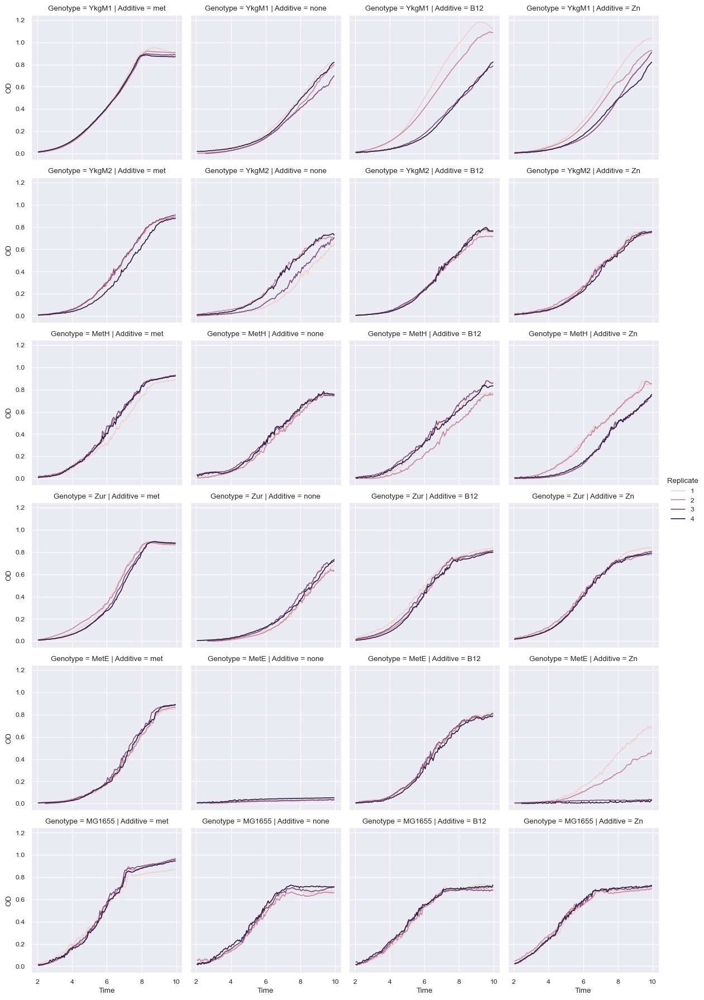
[339]:
mdf = mdf.with_columns(pl.col("OD").log())
[340]:
sns.relplot(x="Time", y="OD", hue="Replicate", kind="line", col="Additive", row="Genotype", height=3, \
data=mdf.filter( (pl.col("Time") < 10)))
[340]:
<seaborn.axisgrid.FacetGrid at 0x42c9741c0>
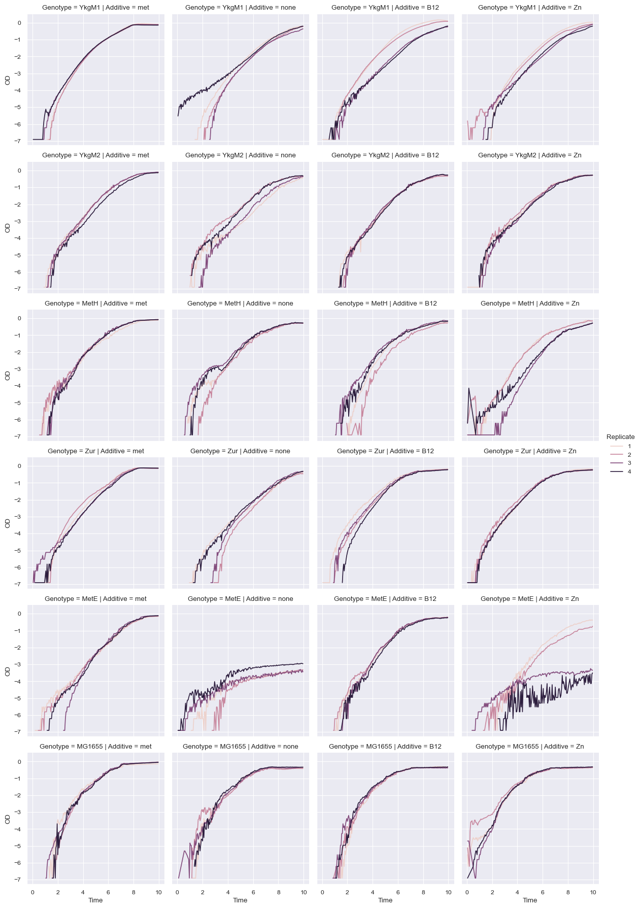
[341]:
growth_rate_precise = mdf.filter( (pl.col("Time") < 10))
minimum_start_times = growth_rate_precise.filter(pl.col("OD") <= -4).group_by("Well").agg(pl.max("Time").alias("Time_exp_start")).sort("Time_exp_start")
minimum_end_times = growth_rate_precise.filter(pl.col("OD") >= -1).group_by("Well").agg(pl.min("Time").alias("Time_exp_end")).sort("Time_exp_end")
growth_rate_precise = growth_rate_precise.join(minimum_start_times, on="Well")
growth_rate_precise = growth_rate_precise.join(minimum_end_times, on="Well")
gr_time_filter = growth_rate_precise.filter((pl.col("Time") > pl.col("Time_exp_start")) & (pl.col("Time") < pl.col("Time_exp_end")))
gr_time_filter = gr_time_filter.with_columns((pl.col("Time") - pl.col("Time_exp_start")).alias("Corrected_time"))
# correct all od values to start at 0
# start_od = gr_time_filter.group_by("Well").agg(pl.min("OD").alias("Start_OD")).sort("Start_OD")
# gr_time_filter = gr_time_filter.join(start_od, on="Well")
# gr_time_filter = gr_time_filter.with_columns((pl.col("OD") - pl.col("Start_OD")).alias("Corrected_OD"))
# correct by linear fit
#This is what you need
correction_offset = gr_time_filter.to_pandas().groupby('Well').apply(regress, 'OD', ['Corrected_time'])
correction_offset = correction_offset.reset_index()
correction_offset = pl.DataFrame(correction_offset)
gr_time_filter
[341]:
shape: (6_469, 11)
| Time | Well | OD | Row | Column | Additive | Genotype | Replicate | Time_exp_start | Time_exp_end | Corrected_time |
|---|---|---|---|---|---|---|---|---|---|---|
| f64 | str | f64 | str | str | str | str | i32 | f64 | f64 | f64 |
| 2.5 | "A1" | -3.912023 | "A" | "1" | "met" | "YkgM1" | 1 | 2.45 | 5.75 | 0.05 |
| 2.55 | "A1" | -3.863233 | "A" | "1" | "met" | "YkgM1" | 1 | 2.45 | 5.75 | 0.1 |
| 2.6 | "A1" | -3.816713 | "A" | "1" | "met" | "YkgM1" | 1 | 2.45 | 5.75 | 0.15 |
| 2.65 | "A1" | -3.729701 | "A" | "1" | "met" | "YkgM1" | 1 | 2.45 | 5.75 | 0.2 |
| 2.7 | "A1" | -3.688879 | "A" | "1" | "met" | "YkgM1" | 1 | 2.45 | 5.75 | 0.25 |
| 2.75 | "A1" | -3.611918 | "A" | "1" | "met" | "YkgM1" | 1 | 2.45 | 5.75 | 0.3 |
| 2.8 | "A1" | -3.540459 | "A" | "1" | "met" | "YkgM1" | 1 | 2.45 | 5.75 | 0.35 |
| 2.85 | "A1" | -3.473768 | "A" | "1" | "met" | "YkgM1" | 1 | 2.45 | 5.75 | 0.4 |
| 2.9 | "A1" | -3.442019 | "A" | "1" | "met" | "YkgM1" | 1 | 2.45 | 5.75 | 0.45 |
| 2.95 | "A1" | -3.381395 | "A" | "1" | "met" | "YkgM1" | 1 | 2.45 | 5.75 | 0.5 |
| 3.0 | "A1" | -3.296837 | "A" | "1" | "met" | "YkgM1" | 1 | 2.45 | 5.75 | 0.55 |
| 3.05 | "A1" | -3.244194 | "A" | "1" | "met" | "YkgM1" | 1 | 2.45 | 5.75 | 0.6 |
| … | … | … | … | … | … | … | … | … | … | … |
| 4.0 | "H12" | -1.398367 | "H" | "12" | "Zn" | "MG1655" | 4 | 1.8 | 4.6 | 2.2 |
| 4.05 | "H12" | -1.410587 | "H" | "12" | "Zn" | "MG1655" | 4 | 1.8 | 4.6 | 2.25 |
| 4.1 | "H12" | -1.406497 | "H" | "12" | "Zn" | "MG1655" | 4 | 1.8 | 4.6 | 2.3 |
| 4.15 | "H12" | -1.335601 | "H" | "12" | "Zn" | "MG1655" | 4 | 1.8 | 4.6 | 2.35 |
| 4.2 | "H12" | -1.309333 | "H" | "12" | "Zn" | "MG1655" | 4 | 1.8 | 4.6 | 2.4 |
| 4.25 | "H12" | -1.305636 | "H" | "12" | "Zn" | "MG1655" | 4 | 1.8 | 4.6 | 2.45 |
| 4.3 | "H12" | -1.301953 | "H" | "12" | "Zn" | "MG1655" | 4 | 1.8 | 4.6 | 2.5 |
| 4.35 | "H12" | -1.294627 | "H" | "12" | "Zn" | "MG1655" | 4 | 1.8 | 4.6 | 2.55 |
| 4.4 | "H12" | -1.272966 | "H" | "12" | "Zn" | "MG1655" | 4 | 1.8 | 4.6 | 2.6 |
| 4.45 | "H12" | -1.145704 | "H" | "12" | "Zn" | "MG1655" | 4 | 1.8 | 4.6 | 2.65 |
| 4.5 | "H12" | -1.148854 | "H" | "12" | "Zn" | "MG1655" | 4 | 1.8 | 4.6 | 2.7 |
| 4.55 | "H12" | -1.090644 | "H" | "12" | "Zn" | "MG1655" | 4 | 1.8 | 4.6 | 2.75 |
[342]:
sns.relplot(x="Corrected_time", y="OD", hue="Replicate", kind="line", col="Additive", row="Genotype", height=3, \
data=gr_time_filter)
[342]:
<seaborn.axisgrid.FacetGrid at 0x42be5d3f0>
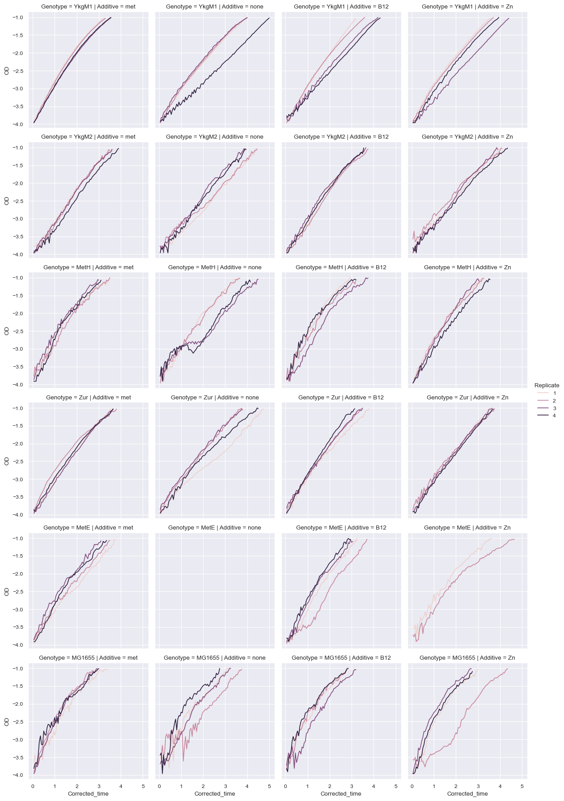
[343]:
sns.lmplot(x="Corrected_time", y="OD", hue="Additive", col="Genotype", col_wrap=3, height=4,
data=gr_time_filter.to_pandas(), scatter_kws = {"alpha": 0.2})
[343]:
<seaborn.axisgrid.FacetGrid at 0x3d8fba320>
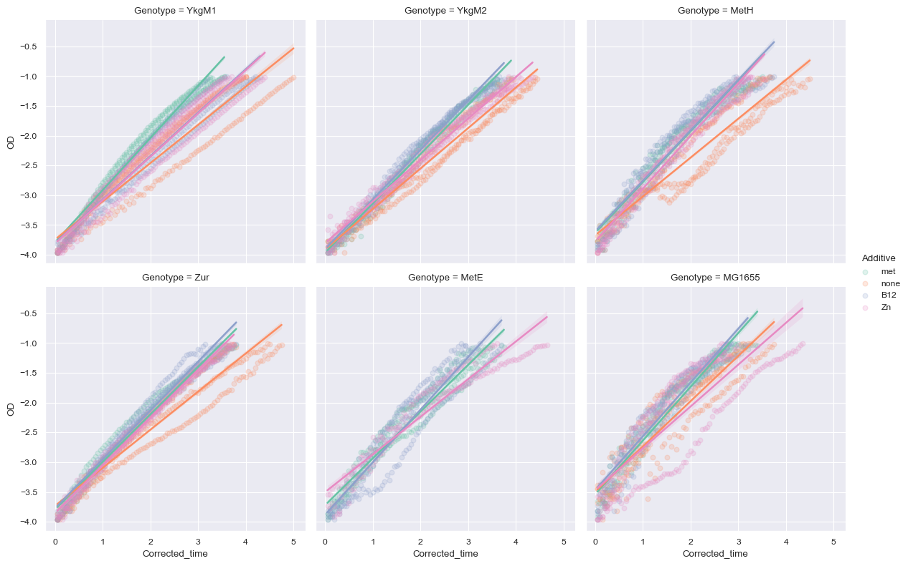
[344]:
predicted_gr = gr_time_filter \
.to_pandas().groupby(['Genotype', 'Additive','Replicate']).apply(regress_error, 'OD', ['Corrected_time'])
predicted_gr["doubling_time"] = np.log(2) / predicted_gr["slope"]
predicted_gr = predicted_gr.reset_index()
gr_mean_std = predicted_gr.groupby(['Genotype', 'Additive']).agg({'slope':['mean','std']})
gr_mean_std["doubling_time"] = np.log(2)/gr_mean_std.xs('slope', axis=1)["mean"]
gr_mean_std
[344]:
| slope | doubling_time | |||
|---|---|---|---|---|
| mean | std | |||
| Genotype | Additive | |||
| MG1655 | B12 | 0.922611 | 0.026839 | 0.751289 |
| Zn | 0.947496 | 0.154998 | 0.731557 | |
| met | 0.929794 | 0.082714 | 0.745484 | |
| none | 0.838549 | 0.140036 | 0.826603 | |
| MetE | B12 | 0.941972 | 0.075341 | 0.735847 |
| Zn | 0.686730 | 0.100918 | 1.009345 | |
| met | 0.814380 | 0.068374 | 0.851135 | |
| MetH | B12 | 0.886773 | 0.058650 | 0.781651 |
| Zn | 0.903215 | 0.061184 | 0.767422 | |
| met | 0.871909 | 0.070997 | 0.794976 | |
| none | 0.701928 | 0.124873 | 0.987490 | |
| YkgM1 | B12 | 0.790357 | 0.110978 | 0.877005 |
| Zn | 0.764328 | 0.053613 | 0.906871 | |
| met | 0.884611 | 0.032048 | 0.783562 | |
| none | 0.700347 | 0.073838 | 0.989720 | |
| YkgM2 | B12 | 0.835925 | 0.021437 | 0.829198 |
| Zn | 0.703355 | 0.046622 | 0.985487 | |
| met | 0.835545 | 0.034440 | 0.829575 | |
| none | 0.700234 | 0.071475 | 0.989880 | |
| Zur | B12 | 0.845047 | 0.083319 | 0.820247 |
| Zn | 0.801663 | 0.044125 | 0.864637 | |
| met | 0.799204 | 0.053327 | 0.867297 | |
| none | 0.689725 | 0.084765 | 1.004961 | |
[345]:
g = sns.catplot(x="Genotype", y="doubling_time", hue="Additive",
data=predicted_gr, kind="bar",
height=8, aspect=1.5, alpha=0.5);
g.map_dataframe(sns.stripplot, x="Genotype", y="doubling_time",
hue="Additive", palette="Set2",
alpha=0.6, dodge=True)
# g.map(sns.stripplot, "sex", "total_bill", "smoker",
# palette=["#404040"], alpha=0.6, dodge=True)
plt.show()
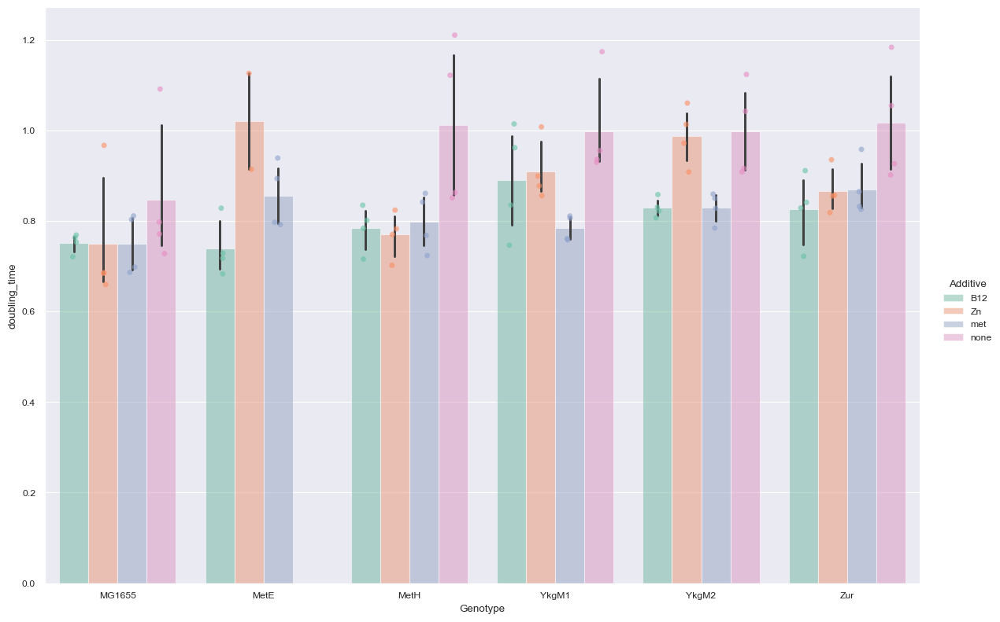
Reanalyzing the old plate lol
[346]:
# plate 2
df = pl.read_csv("growth_data/cyrus_012624.csv")
df = df.drop('T600')
# time conversion
df = df.with_columns(pl.col("Time").str.to_time("%H:%M:%S"))
df = df.with_columns(df['Time'].dt.hour().cast(pl.Int64) + df['Time'].dt.minute().cast(pl.Int64) / 60 + df['Time'].dt.second() / 3600)
# zero by first measurement
# df = df.with_columns([pl.col(c) - df[0, c] for c in df.columns])
# melt to experiments
df = df.melt(id_vars="Time", variable_name="Well", value_name="OD")
df = df.with_columns((df["Well"].str.slice(0,1)).alias("Experiment"))
df = df.with_columns((df["Well"].str.slice(1)).alias("Replicate"))
df = df.with_columns(pl.col("OD").log())
[347]:
# join with experiment type
column_names = ["Experiment", "Abb", "Description", "Pre-met", "Additive"]
conversion = [["A", "Rrm", "Rich + met, ++met", True, "met"],
["B", "Rr", "Rich - met, ++met", True, "none"],
["C", "RrZ", "Rich - met + Zn, ++met", True, "zinc"],
["D", "Rrb", "Rich - met + B12, ++met", True, "B12"],
["E", "rm", "Rich + met, --met", False, "met"],
["F", "r", "Rich - met, --met", False, "none"],
["G", "rz", "Rich - met, --met", False, "zinc"],
["H", "rb", "Rich - met, --met", False, "B12"]]
exp = pl.DataFrame(conversion)
exp.columns = column_names
exp
[347]:
shape: (8, 5)
| Experiment | Abb | Description | Pre-met | Additive |
|---|---|---|---|---|
| str | str | str | bool | str |
| "A" | "Rrm" | "Rich + met, ++… | true | "met" |
| "B" | "Rr" | "Rich - met, ++… | true | "none" |
| "C" | "RrZ" | "Rich - met + Z… | true | "zinc" |
| "D" | "Rrb" | "Rich - met + B… | true | "B12" |
| "E" | "rm" | "Rich + met, --… | false | "met" |
| "F" | "r" | "Rich - met, --… | false | "none" |
| "G" | "rz" | "Rich - met, --… | false | "zinc" |
| "H" | "rb" | "Rich - met, --… | false | "B12" |
[348]:
mdf = df.join(exp, on="Experiment")
[349]:
sns.relplot(x="Time", y="OD", hue="Replicate", kind="line", col="Additive", row="Pre-met", height=3, \
data=mdf.filter( (pl.col("Time") < 10) & (pl.col("Time") > 0) ))
[349]:
<seaborn.axisgrid.FacetGrid at 0x43420b0a0>
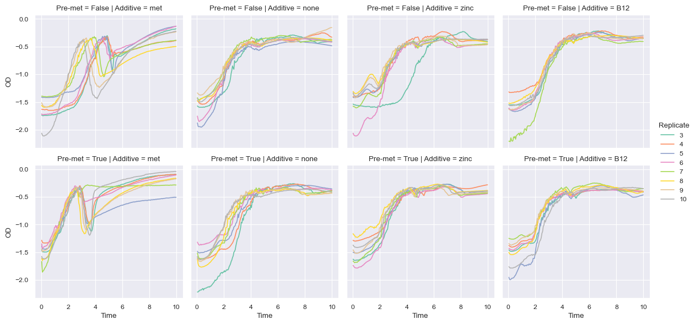
[350]:
growth_rate_precise = mdf.filter( (pl.col("Time") < 10))
minimum_start_times = growth_rate_precise.filter(pl.col("OD") <= -0.9).group_by("Well").agg(pl.max("Time").alias("Time_exp_start")).sort("Time_exp_start")
minimum_end_times = growth_rate_precise.filter(pl.col("OD") >= -0.5).group_by("Well").agg(pl.min("Time").alias("Time_exp_end")).sort("Time_exp_end")
growth_rate_precise = growth_rate_precise.join(minimum_start_times, on="Well")
growth_rate_precise = growth_rate_precise.join(minimum_end_times, on="Well")
gr_time_filter = growth_rate_precise.filter((pl.col("Time") > pl.col("Time_exp_start")) & (pl.col("Time") < pl.col("Time_exp_end")))
gr_time_filter = gr_time_filter.with_columns((pl.col("Time") - pl.col("Time_exp_start")).alias("Corrected_time"))
# correct all od values to start at 0
# start_od = gr_time_filter.group_by("Well").agg(pl.min("OD").alias("Start_OD")).sort("Start_OD")
# gr_time_filter = gr_time_filter.join(start_od, on="Well")
# gr_time_filter = gr_time_filter.with_columns((pl.col("OD") - pl.col("Start_OD")).alias("Corrected_OD"))
# correct by linear fit
#This is what you need
correction_offset = gr_time_filter.to_pandas().groupby('Well').apply(regress, 'OD', ['Corrected_time'])
correction_offset = correction_offset.reset_index()
correction_offset = pl.DataFrame(correction_offset)
gr_time_filter = gr_time_filter.join(correction_offset, on="Well")
gr_time_filter = gr_time_filter.with_columns((pl.col("OD") - pl.col("intercept")).alias("Corrected_OD"))
gr_time_filter
[350]:
shape: (1_041, 15)
| Time | Well | OD | Experiment | Replicate | Abb | Description | Pre-met | Additive | Time_exp_start | Time_exp_end | Corrected_time | Corrected_time_right | intercept | Corrected_OD |
|---|---|---|---|---|---|---|---|---|---|---|---|---|---|---|
| f64 | str | f64 | str | str | str | str | bool | str | f64 | f64 | f64 | f64 | f64 | f64 |
| 1.436111 | "A6" | -0.872274 | "A" | "6" | "Rrm" | "Rich + met, ++… | true | "met" | 1.386111 | 2.086111 | 0.05 | 0.640944 | -0.886354 | 0.01408 |
| 1.486111 | "A6" | -0.796288 | "A" | "6" | "Rrm" | "Rich + met, ++… | true | "met" | 1.386111 | 2.086111 | 0.1 | 0.640944 | -0.886354 | 0.090066 |
| 1.536111 | "A6" | -0.783072 | "A" | "6" | "Rrm" | "Rich + met, ++… | true | "met" | 1.386111 | 2.086111 | 0.15 | 0.640944 | -0.886354 | 0.103282 |
| 1.586111 | "A6" | -0.787458 | "A" | "6" | "Rrm" | "Rich + met, ++… | true | "met" | 1.386111 | 2.086111 | 0.2 | 0.640944 | -0.886354 | 0.098896 |
| 1.636111 | "A6" | -0.733969 | "A" | "6" | "Rrm" | "Rich + met, ++… | true | "met" | 1.386111 | 2.086111 | 0.25 | 0.640944 | -0.886354 | 0.152385 |
| 1.686111 | "A6" | -0.721547 | "A" | "6" | "Rrm" | "Rich + met, ++… | true | "met" | 1.386111 | 2.086111 | 0.3 | 0.640944 | -0.886354 | 0.164807 |
| 1.736111 | "A6" | -0.648174 | "A" | "6" | "Rrm" | "Rich + met, ++… | true | "met" | 1.386111 | 2.086111 | 0.35 | 0.640944 | -0.886354 | 0.23818 |
| 1.786111 | "A6" | -0.60148 | "A" | "6" | "Rrm" | "Rich + met, ++… | true | "met" | 1.386111 | 2.086111 | 0.4 | 0.640944 | -0.886354 | 0.284874 |
| 1.836111 | "A6" | -0.574476 | "A" | "6" | "Rrm" | "Rich + met, ++… | true | "met" | 1.386111 | 2.086111 | 0.45 | 0.640944 | -0.886354 | 0.311878 |
| 1.886111 | "A6" | -0.549913 | "A" | "6" | "Rrm" | "Rich + met, ++… | true | "met" | 1.386111 | 2.086111 | 0.5 | 0.640944 | -0.886354 | 0.336441 |
| 1.936111 | "A6" | -0.527633 | "A" | "6" | "Rrm" | "Rich + met, ++… | true | "met" | 1.386111 | 2.086111 | 0.55 | 0.640944 | -0.886354 | 0.358721 |
| 1.986111 | "A6" | -0.504181 | "A" | "6" | "Rrm" | "Rich + met, ++… | true | "met" | 1.386111 | 2.086111 | 0.6 | 0.640944 | -0.886354 | 0.382173 |
| … | … | … | … | … | … | … | … | … | … | … | … | … | … | … |
| 3.236111 | "H10" | -0.731888 | "H" | "10" | "rb" | "Rich - met, --… | false | "B12" | 2.836111 | 3.836111 | 0.4 | 0.378914 | -0.878845 | 0.146957 |
| 3.286111 | "H10" | -0.719491 | "H" | "10" | "rb" | "Rich - met, --… | false | "B12" | 2.836111 | 3.836111 | 0.45 | 0.378914 | -0.878845 | 0.159354 |
| 3.336111 | "H10" | -0.70522 | "H" | "10" | "rb" | "Rich - met, --… | false | "B12" | 2.836111 | 3.836111 | 0.5 | 0.378914 | -0.878845 | 0.173625 |
| 3.386111 | "H10" | -0.665532 | "H" | "10" | "rb" | "Rich - met, --… | false | "B12" | 2.836111 | 3.836111 | 0.55 | 0.378914 | -0.878845 | 0.213313 |
| 3.436111 | "H10" | -0.648174 | "H" | "10" | "rb" | "Rich - met, --… | false | "B12" | 2.836111 | 3.836111 | 0.6 | 0.378914 | -0.878845 | 0.230671 |
| 3.486111 | "H10" | -0.650088 | "H" | "10" | "rb" | "Rich - met, --… | false | "B12" | 2.836111 | 3.836111 | 0.65 | 0.378914 | -0.878845 | 0.228757 |
| 3.536111 | "H10" | -0.627359 | "H" | "10" | "rb" | "Rich - met, --… | false | "B12" | 2.836111 | 3.836111 | 0.7 | 0.378914 | -0.878845 | 0.251486 |
| 3.586111 | "H10" | -0.599657 | "H" | "10" | "rb" | "Rich - met, --… | false | "B12" | 2.836111 | 3.836111 | 0.75 | 0.378914 | -0.878845 | 0.279188 |
| 3.636111 | "H10" | -0.597837 | "H" | "10" | "rb" | "Rich - met, --… | false | "B12" | 2.836111 | 3.836111 | 0.8 | 0.378914 | -0.878845 | 0.281008 |
| 3.686111 | "H10" | -0.537854 | "H" | "10" | "rb" | "Rich - met, --… | false | "B12" | 2.836111 | 3.836111 | 0.85 | 0.378914 | -0.878845 | 0.340991 |
| 3.736111 | "H10" | -0.527633 | "H" | "10" | "rb" | "Rich - met, --… | false | "B12" | 2.836111 | 3.836111 | 0.9 | 0.378914 | -0.878845 | 0.351212 |
| 3.786111 | "H10" | -0.500875 | "H" | "10" | "rb" | "Rich - met, --… | false | "B12" | 2.836111 | 3.836111 | 0.95 | 0.378914 | -0.878845 | 0.37797 |
[351]:
sns.relplot(x="Corrected_time", y="OD", hue="Replicate", kind="line", col="Additive", row="Pre-met", height=3, \
data=gr_time_filter.filter( (pl.col("Time") < 10) & (pl.col("Time") > 0) ))
[351]:
<seaborn.axisgrid.FacetGrid at 0x43520dfc0>
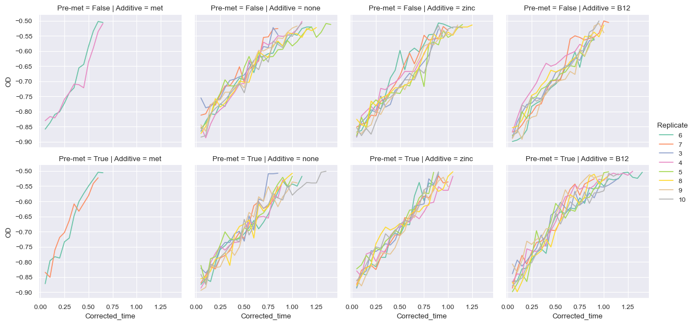
[352]:
sns.lmplot(x="Corrected_time", y="OD", hue="Additive", col="Pre-met", col_wrap=3, height=4,
data=gr_time_filter.to_pandas(), scatter_kws = {"alpha": 0.2})
[352]:
<seaborn.axisgrid.FacetGrid at 0x4352378e0>
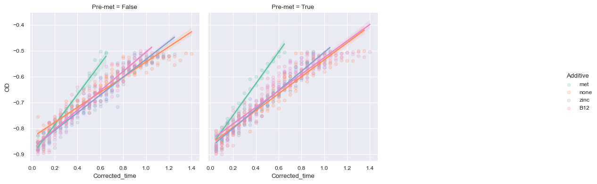
All plates at once:
[353]:
# plate 1
df = pl.read_csv("growth_data/adrian_growth_jan25_v2.csv")
df = df.drop('T600')
# time conversion
df = df.with_columns(pl.col("Time").str.to_time("%H:%M:%S"))
df = df.with_columns(3600 * df['Time'].dt.hour().cast(pl.Int64) + 60 * df['Time'].dt.minute().cast(pl.Int64) + df['Time'].dt.second())
# zero by first measurement
df = df.with_columns([pl.col(c) - df[0, c] for c in df.columns])
# melt to experiments
df = df.melt(id_vars="Time", variable_name="Well", value_name="OD")
df = df.with_columns((df["Well"].str.slice(0,1)).alias("Experiment"))
df = df.with_columns((df["Well"].str.slice(1)).alias("Replicate"))
df = df.with_columns(Plate = pl.lit("Plate 1"))
# plate 1
df2 = pl.read_csv("growth_data/cyrus_012624.csv")
df2 = df2.drop('T600')
# time conversion
df2 = df2.with_columns(pl.col("Time").str.to_time("%H:%M:%S"))
df2 = df2.with_columns(3600 * df2['Time'].dt.hour().cast(pl.Int64) + 60 * df2['Time'].dt.minute().cast(pl.Int64) + df2['Time'].dt.second())
# zero by first measurement
df2 = df2.with_columns([pl.col(c) - df2[0, c] for c in df2.columns])
# melt to experiments
df2 = df2.melt(id_vars="Time", variable_name="Well", value_name="OD")
df2 = df2.with_columns((df2["Well"].str.slice(0,1)).alias("Experiment"))
df2 = df2.with_columns((df2["Well"].str.slice(1)).alias("Replicate"))
df2 = df2.with_columns(Plate = pl.lit("Plate 2"))
df = pl.concat([df, df2])
df
[353]:
shape: (29_312, 6)
| Time | Well | OD | Experiment | Replicate | Plate |
|---|---|---|---|---|---|
| i64 | str | f64 | str | str | str |
| 0 | "A2" | 0.0 | "A" | "2" | "Plate 1" |
| 300 | "A2" | -0.001 | "A" | "2" | "Plate 1" |
| 600 | "A2" | 0.0 | "A" | "2" | "Plate 1" |
| 900 | "A2" | 0.001 | "A" | "2" | "Plate 1" |
| 1200 | "A2" | 0.0 | "A" | "2" | "Plate 1" |
| 1500 | "A2" | -0.001 | "A" | "2" | "Plate 1" |
| 1800 | "A2" | -0.001 | "A" | "2" | "Plate 1" |
| 2100 | "A2" | -0.003 | "A" | "2" | "Plate 1" |
| 2400 | "A2" | -0.005 | "A" | "2" | "Plate 1" |
| 2700 | "A2" | -0.003 | "A" | "2" | "Plate 1" |
| 3000 | "A2" | -0.004 | "A" | "2" | "Plate 1" |
| 3300 | "A2" | -0.004 | "A" | "2" | "Plate 1" |
| … | … | … | … | … | … |
| 41220 | "H10" | 0.599 | "H" | "10" | "Plate 2" |
| 41400 | "H10" | 0.601 | "H" | "10" | "Plate 2" |
| 41580 | "H10" | 0.604 | "H" | "10" | "Plate 2" |
| 41760 | "H10" | 0.607 | "H" | "10" | "Plate 2" |
| 41940 | "H10" | 0.61 | "H" | "10" | "Plate 2" |
| 42120 | "H10" | 0.613 | "H" | "10" | "Plate 2" |
| 42300 | "H10" | 0.615 | "H" | "10" | "Plate 2" |
| 42480 | "H10" | 0.62 | "H" | "10" | "Plate 2" |
| 42660 | "H10" | 0.622 | "H" | "10" | "Plate 2" |
| 42840 | "H10" | 0.624 | "H" | "10" | "Plate 2" |
| 43020 | "H10" | 0.628 | "H" | "10" | "Plate 2" |
| 43200 | "H10" | 0.631 | "H" | "10" | "Plate 2" |
[354]:
# join with experiment type
column_names = ["Experiment", "Abb", "Description", "Pre-met", "Additive"]
conversion = [["A", "Rrm", "Rich + met, ++met", True, "met"],
["B", "Rr", "Rich - met, ++met", True, "none"],
["C", "RrZ", "Rich - met + Zn, ++met", True, "zinc"],
["D", "Rrb", "Rich - met + B12, ++met", True, "B12"],
["E", "rm", "Rich + met, --met", False, "met"],
["F", "r", "Rich - met, --met", False, "none"],
["G", "rz", "Rich - met, --met", False, "zinc"],
["H", "rb", "Rich - met, --met", False, "B12"]]
exp = pl.DataFrame(conversion)
exp.columns = column_names
[355]:
mdf = df.join(exp, on="Experiment")
[356]:
sns.relplot(x="Time", y="OD", hue="Plate", style="Replicate", kind="line", row="Pre-met", col="Additive", height=3, \
data=mdf.filter(
(pl.col("Time")<20000) &
(pl.col("Replicate") != "3")
))
[356]:
<seaborn.axisgrid.FacetGrid at 0x435d37c10>
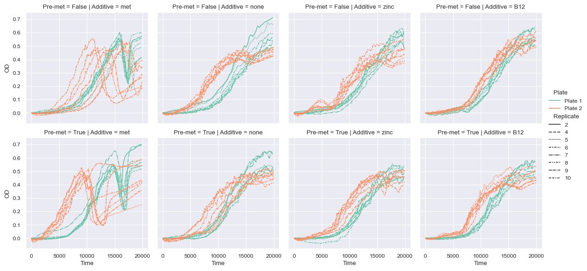
[357]:
growth_rate_precise = data=mdf.filter(
(pl.col("Time")<40000)
)
growth_rate_precise = growth_rate_precise.with_columns(pl.concat_str([pl.col("Well"), pl.col("Plate")], separator=",").alias("Unique_well"))
minimum_start_times = growth_rate_precise.filter(pl.col("OD") <= 0.08).group_by("Unique_well").agg(pl.max("Time").alias("Time_exp_start")).sort("Time_exp_start")
minimum_end_times = growth_rate_precise.filter(pl.col("OD") >= 0.35).group_by("Unique_well").agg(pl.min("Time").alias("Time_exp_end")).sort("Time_exp_end")
growth_rate_precise = growth_rate_precise.join(minimum_start_times, on="Unique_well")
growth_rate_precise = growth_rate_precise.join(minimum_end_times, on="Unique_well")
gr_time_filter = growth_rate_precise.filter((pl.col("Time") > pl.col("Time_exp_start")) & (pl.col("Time") < pl.col("Time_exp_end")))
gr_time_filter = gr_time_filter.with_columns((pl.col("Time") - pl.col("Time_exp_start")).alias("Corrected_time"))
# correct all od values to start at 0
# start_od = gr_time_filter.group_by("Well").agg(pl.min("OD").alias("Start_OD")).sort("Start_OD")
# gr_time_filter = gr_time_filter.join(start_od, on="Well")
# gr_time_filter = gr_time_filter.with_columns((pl.col("OD") - pl.col("Start_OD")).alias("Corrected_OD"))
# correct by linear fit
#This is what you need
correction_offset = gr_time_filter.to_pandas().groupby('Unique_well').apply(regress, 'OD', ['Corrected_time'])
correction_offset = correction_offset.reset_index()
correction_offset = pl.DataFrame(correction_offset)
gr_time_filter = gr_time_filter.join(correction_offset, on="Unique_well")
gr_time_filter = gr_time_filter.with_columns((pl.col("OD") - pl.col("intercept")).alias("Corrected_OD"))
gr_time_filter
[357]:
shape: (2_490, 17)
| Time | Well | OD | Experiment | Replicate | Plate | Abb | Description | Pre-met | Additive | Unique_well | Time_exp_start | Time_exp_end | Corrected_time | Corrected_time_right | intercept | Corrected_OD |
|---|---|---|---|---|---|---|---|---|---|---|---|---|---|---|---|---|
| i64 | str | f64 | str | str | str | str | str | bool | str | str | i64 | i64 | i64 | f64 | f64 | f64 |
| 8100 | "A2" | 0.083 | "A" | "2" | "Plate 1" | "Rrm" | "Rich + met, ++… | true | "met" | "A2,Plate 1" | 7800 | 11700 | 300 | 0.000076 | 0.037303 | 0.045697 |
| 8400 | "A2" | 0.094 | "A" | "2" | "Plate 1" | "Rrm" | "Rich + met, ++… | true | "met" | "A2,Plate 1" | 7800 | 11700 | 600 | 0.000076 | 0.037303 | 0.056697 |
| 8700 | "A2" | 0.101 | "A" | "2" | "Plate 1" | "Rrm" | "Rich + met, ++… | true | "met" | "A2,Plate 1" | 7800 | 11700 | 900 | 0.000076 | 0.037303 | 0.063697 |
| 9000 | "A2" | 0.113 | "A" | "2" | "Plate 1" | "Rrm" | "Rich + met, ++… | true | "met" | "A2,Plate 1" | 7800 | 11700 | 1200 | 0.000076 | 0.037303 | 0.075697 |
| 9300 | "A2" | 0.131 | "A" | "2" | "Plate 1" | "Rrm" | "Rich + met, ++… | true | "met" | "A2,Plate 1" | 7800 | 11700 | 1500 | 0.000076 | 0.037303 | 0.093697 |
| 9600 | "A2" | 0.152 | "A" | "2" | "Plate 1" | "Rrm" | "Rich + met, ++… | true | "met" | "A2,Plate 1" | 7800 | 11700 | 1800 | 0.000076 | 0.037303 | 0.114697 |
| 9900 | "A2" | 0.182 | "A" | "2" | "Plate 1" | "Rrm" | "Rich + met, ++… | true | "met" | "A2,Plate 1" | 7800 | 11700 | 2100 | 0.000076 | 0.037303 | 0.144697 |
| 10200 | "A2" | 0.244 | "A" | "2" | "Plate 1" | "Rrm" | "Rich + met, ++… | true | "met" | "A2,Plate 1" | 7800 | 11700 | 2400 | 0.000076 | 0.037303 | 0.206697 |
| 10500 | "A2" | 0.252 | "A" | "2" | "Plate 1" | "Rrm" | "Rich + met, ++… | true | "met" | "A2,Plate 1" | 7800 | 11700 | 2700 | 0.000076 | 0.037303 | 0.214697 |
| 10800 | "A2" | 0.279 | "A" | "2" | "Plate 1" | "Rrm" | "Rich + met, ++… | true | "met" | "A2,Plate 1" | 7800 | 11700 | 3000 | 0.000076 | 0.037303 | 0.241697 |
| 11100 | "A2" | 0.295 | "A" | "2" | "Plate 1" | "Rrm" | "Rich + met, ++… | true | "met" | "A2,Plate 1" | 7800 | 11700 | 3300 | 0.000076 | 0.037303 | 0.257697 |
| 11400 | "A2" | 0.302 | "A" | "2" | "Plate 1" | "Rrm" | "Rich + met, ++… | true | "met" | "A2,Plate 1" | 7800 | 11700 | 3600 | 0.000076 | 0.037303 | 0.264697 |
| … | … | … | … | … | … | … | … | … | … | … | … | … | … | … | … | … |
| 10980 | "H10" | 0.261 | "H" | "10" | "Plate 2" | "rb" | "Rich - met, --… | false | "B12" | "H10,Plate 2" | 8280 | 13140 | 2700 | 0.000058 | 0.079652 | 0.181348 |
| 11160 | "H10" | 0.254 | "H" | "10" | "Plate 2" | "rb" | "Rich - met, --… | false | "B12" | "H10,Plate 2" | 8280 | 13140 | 2880 | 0.000058 | 0.079652 | 0.174348 |
| 11340 | "H10" | 0.258 | "H" | "10" | "Plate 2" | "rb" | "Rich - met, --… | false | "B12" | "H10,Plate 2" | 8280 | 13140 | 3060 | 0.000058 | 0.079652 | 0.178348 |
| 11520 | "H10" | 0.27 | "H" | "10" | "Plate 2" | "rb" | "Rich - met, --… | false | "B12" | "H10,Plate 2" | 8280 | 13140 | 3240 | 0.000058 | 0.079652 | 0.190348 |
| 11700 | "H10" | 0.276 | "H" | "10" | "Plate 2" | "rb" | "Rich - met, --… | false | "B12" | "H10,Plate 2" | 8280 | 13140 | 3420 | 0.000058 | 0.079652 | 0.196348 |
| 11880 | "H10" | 0.283 | "H" | "10" | "Plate 2" | "rb" | "Rich - met, --… | false | "B12" | "H10,Plate 2" | 8280 | 13140 | 3600 | 0.000058 | 0.079652 | 0.203348 |
| 12060 | "H10" | 0.303 | "H" | "10" | "Plate 2" | "rb" | "Rich - met, --… | false | "B12" | "H10,Plate 2" | 8280 | 13140 | 3780 | 0.000058 | 0.079652 | 0.223348 |
| 12240 | "H10" | 0.312 | "H" | "10" | "Plate 2" | "rb" | "Rich - met, --… | false | "B12" | "H10,Plate 2" | 8280 | 13140 | 3960 | 0.000058 | 0.079652 | 0.232348 |
| 12420 | "H10" | 0.311 | "H" | "10" | "Plate 2" | "rb" | "Rich - met, --… | false | "B12" | "H10,Plate 2" | 8280 | 13140 | 4140 | 0.000058 | 0.079652 | 0.231348 |
| 12600 | "H10" | 0.323 | "H" | "10" | "Plate 2" | "rb" | "Rich - met, --… | false | "B12" | "H10,Plate 2" | 8280 | 13140 | 4320 | 0.000058 | 0.079652 | 0.243348 |
| 12780 | "H10" | 0.338 | "H" | "10" | "Plate 2" | "rb" | "Rich - met, --… | false | "B12" | "H10,Plate 2" | 8280 | 13140 | 4500 | 0.000058 | 0.079652 | 0.258348 |
| 12960 | "H10" | 0.339 | "H" | "10" | "Plate 2" | "rb" | "Rich - met, --… | false | "B12" | "H10,Plate 2" | 8280 | 13140 | 4680 | 0.000058 | 0.079652 | 0.259348 |
[358]:
sns.lmplot(x="Corrected_time", y="Corrected_OD", hue="Replicate", col="Additive", row="Pre-met", height=4,
data=gr_time_filter.filter((pl.col("Plate") == "Plate 1")).to_pandas())
[358]:
<seaborn.axisgrid.FacetGrid at 0x437148460>
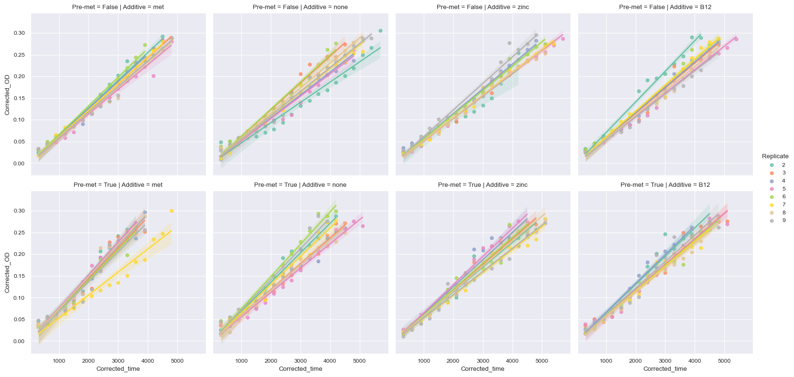
[359]:
predicted_gr = gr_time_filter.filter((pl.col("Plate") == "Plate 1") & (pl.col("Pre-met") == False)).to_pandas().groupby(['Additive', 'Plate', 'Pre-met']).apply(regress_error, 'Corrected_OD', ['Corrected_time'])
predicted_gr = predicted_gr.reset_index()
predicted_gr
[359]:
| Additive | Plate | Pre-met | slope | intercept | slope_e | intercept_e | |
|---|---|---|---|---|---|---|---|
| 0 | B12 | Plate 1 | False | 0.000057 | 0.002491 | 1.098559e-06 | 0.003204 |
| 1 | met | Plate 1 | False | 0.000060 | 0.001704 | 9.004299e-07 | 0.002478 |
| 2 | none | Plate 1 | False | 0.000053 | 0.003558 | 1.136756e-06 | 0.003435 |
| 3 | zinc | Plate 1 | False | 0.000054 | 0.001121 | 8.148272e-07 | 0.002513 |
Plate two
[360]:
df = pl.read_csv("growth_data/cyrus_012624.csv")
df = df.drop('T600')
df
[360]:
shape: (241, 65)
| Time | A3 | A4 | A5 | A6 | A7 | A8 | A9 | A10 | B3 | B4 | B5 | B6 | B7 | B8 | B9 | B10 | C3 | C4 | C5 | C6 | C7 | C8 | C9 | C10 | D3 | D4 | D5 | D6 | D7 | D8 | D9 | D10 | E3 | E4 | E5 | E6 | E7 | E8 | E9 | E10 | F3 | F4 | F5 | F6 | F7 | F8 | F9 | F10 | G3 | G4 | G5 | G6 | G7 | G8 | G9 | G10 | H3 | H4 | H5 | H6 | H7 | H8 | H9 | H10 |
|---|---|---|---|---|---|---|---|---|---|---|---|---|---|---|---|---|---|---|---|---|---|---|---|---|---|---|---|---|---|---|---|---|---|---|---|---|---|---|---|---|---|---|---|---|---|---|---|---|---|---|---|---|---|---|---|---|---|---|---|---|---|---|---|---|
| str | f64 | f64 | f64 | f64 | f64 | f64 | f64 | f64 | f64 | f64 | f64 | f64 | f64 | f64 | f64 | f64 | f64 | f64 | f64 | f64 | f64 | f64 | f64 | f64 | f64 | f64 | f64 | f64 | f64 | f64 | f64 | f64 | f64 | f64 | f64 | f64 | f64 | f64 | f64 | f64 | f64 | f64 | f64 | f64 | f64 | f64 | f64 | f64 | f64 | f64 | f64 | f64 | f64 | f64 | f64 | f64 | f64 | f64 | f64 | f64 | f64 | f64 | f64 | f64 |
| "00:02:10" | 0.232 | 0.277 | 0.25 | 0.26 | 0.189 | 0.2 | 0.237 | 0.207 | 0.109 | 0.199 | 0.227 | 0.268 | 0.22 | 0.198 | 0.206 | 0.206 | 0.197 | 0.277 | 0.223 | 0.176 | 0.19 | 0.312 | 0.233 | 0.254 | 0.233 | 0.252 | 0.142 | 0.24 | 0.287 | 0.223 | 0.261 | 0.172 | 0.176 | 0.196 | 0.243 | 0.18 | 0.248 | 0.21 | 0.22 | 0.127 | 0.208 | 0.228 | 0.153 | 0.173 | 0.241 | 0.228 | 0.263 | 0.238 | 0.215 | 0.246 | 0.243 | 0.127 | 0.207 | 0.27 | 0.263 | 0.263 | 0.213 | 0.268 | 0.199 | 0.2 | 0.11 | 0.219 | 0.195 | 0.211 |
| "00:05:10" | 0.225 | 0.267 | 0.237 | 0.239 | 0.156 | 0.192 | 0.226 | 0.2 | 0.109 | 0.198 | 0.223 | 0.261 | 0.209 | 0.181 | 0.196 | 0.198 | 0.194 | 0.274 | 0.222 | 0.173 | 0.188 | 0.305 | 0.228 | 0.249 | 0.23 | 0.25 | 0.137 | 0.237 | 0.286 | 0.218 | 0.258 | 0.17 | 0.175 | 0.195 | 0.242 | 0.177 | 0.248 | 0.206 | 0.214 | 0.123 | 0.205 | 0.227 | 0.144 | 0.163 | 0.235 | 0.225 | 0.259 | 0.23 | 0.213 | 0.245 | 0.241 | 0.123 | 0.205 | 0.265 | 0.25 | 0.255 | 0.211 | 0.265 | 0.196 | 0.197 | 0.11 | 0.218 | 0.194 | 0.21 |
| "00:08:10" | 0.225 | 0.265 | 0.237 | 0.242 | 0.159 | 0.197 | 0.229 | 0.199 | 0.111 | 0.199 | 0.221 | 0.256 | 0.202 | 0.175 | 0.191 | 0.197 | 0.193 | 0.274 | 0.221 | 0.17 | 0.185 | 0.304 | 0.223 | 0.246 | 0.228 | 0.248 | 0.136 | 0.236 | 0.284 | 0.215 | 0.256 | 0.168 | 0.174 | 0.195 | 0.242 | 0.178 | 0.247 | 0.205 | 0.209 | 0.121 | 0.204 | 0.222 | 0.143 | 0.158 | 0.233 | 0.225 | 0.256 | 0.226 | 0.212 | 0.246 | 0.243 | 0.122 | 0.205 | 0.263 | 0.242 | 0.25 | 0.212 | 0.265 | 0.194 | 0.195 | 0.109 | 0.218 | 0.195 | 0.209 |
| "00:11:10" | 0.224 | 0.264 | 0.237 | 0.245 | 0.161 | 0.197 | 0.229 | 0.199 | 0.111 | 0.197 | 0.221 | 0.254 | 0.2 | 0.173 | 0.19 | 0.196 | 0.193 | 0.273 | 0.22 | 0.169 | 0.186 | 0.296 | 0.22 | 0.245 | 0.227 | 0.246 | 0.137 | 0.234 | 0.284 | 0.214 | 0.254 | 0.168 | 0.175 | 0.195 | 0.243 | 0.178 | 0.246 | 0.203 | 0.207 | 0.121 | 0.203 | 0.218 | 0.143 | 0.157 | 0.233 | 0.228 | 0.254 | 0.224 | 0.212 | 0.245 | 0.243 | 0.121 | 0.203 | 0.26 | 0.241 | 0.249 | 0.212 | 0.265 | 0.192 | 0.195 | 0.117 | 0.218 | 0.194 | 0.209 |
| "00:14:10" | 0.224 | 0.264 | 0.236 | 0.248 | 0.165 | 0.197 | 0.23 | 0.198 | 0.113 | 0.196 | 0.221 | 0.255 | 0.199 | 0.172 | 0.19 | 0.196 | 0.193 | 0.273 | 0.22 | 0.168 | 0.186 | 0.293 | 0.219 | 0.244 | 0.227 | 0.245 | 0.139 | 0.233 | 0.283 | 0.214 | 0.254 | 0.168 | 0.175 | 0.194 | 0.243 | 0.178 | 0.246 | 0.203 | 0.206 | 0.121 | 0.203 | 0.218 | 0.143 | 0.159 | 0.234 | 0.233 | 0.253 | 0.223 | 0.211 | 0.245 | 0.242 | 0.121 | 0.201 | 0.259 | 0.241 | 0.248 | 0.212 | 0.265 | 0.191 | 0.194 | 0.112 | 0.219 | 0.194 | 0.209 |
| "00:17:10" | 0.224 | 0.264 | 0.236 | 0.248 | 0.169 | 0.198 | 0.232 | 0.199 | 0.113 | 0.197 | 0.222 | 0.258 | 0.199 | 0.171 | 0.189 | 0.195 | 0.194 | 0.274 | 0.22 | 0.168 | 0.187 | 0.294 | 0.219 | 0.244 | 0.227 | 0.245 | 0.14 | 0.233 | 0.283 | 0.214 | 0.256 | 0.168 | 0.176 | 0.194 | 0.242 | 0.179 | 0.246 | 0.203 | 0.205 | 0.122 | 0.203 | 0.215 | 0.142 | 0.161 | 0.237 | 0.235 | 0.253 | 0.224 | 0.21 | 0.245 | 0.243 | 0.121 | 0.201 | 0.261 | 0.244 | 0.249 | 0.212 | 0.266 | 0.19 | 0.193 | 0.11 | 0.219 | 0.196 | 0.209 |
| "00:20:10" | 0.224 | 0.264 | 0.236 | 0.25 | 0.172 | 0.2 | 0.232 | 0.199 | 0.113 | 0.197 | 0.222 | 0.255 | 0.199 | 0.171 | 0.19 | 0.197 | 0.194 | 0.275 | 0.22 | 0.168 | 0.186 | 0.292 | 0.219 | 0.243 | 0.228 | 0.245 | 0.14 | 0.232 | 0.283 | 0.214 | 0.257 | 0.168 | 0.175 | 0.195 | 0.242 | 0.178 | 0.246 | 0.204 | 0.204 | 0.123 | 0.203 | 0.216 | 0.142 | 0.161 | 0.238 | 0.237 | 0.254 | 0.224 | 0.21 | 0.246 | 0.243 | 0.122 | 0.202 | 0.262 | 0.245 | 0.25 | 0.212 | 0.266 | 0.189 | 0.193 | 0.111 | 0.22 | 0.196 | 0.21 |
| "00:23:10" | 0.224 | 0.264 | 0.238 | 0.251 | 0.176 | 0.202 | 0.233 | 0.201 | 0.115 | 0.197 | 0.222 | 0.257 | 0.199 | 0.171 | 0.192 | 0.197 | 0.194 | 0.275 | 0.22 | 0.168 | 0.189 | 0.293 | 0.22 | 0.244 | 0.228 | 0.247 | 0.141 | 0.232 | 0.283 | 0.215 | 0.258 | 0.169 | 0.175 | 0.195 | 0.242 | 0.179 | 0.245 | 0.204 | 0.204 | 0.123 | 0.203 | 0.214 | 0.143 | 0.163 | 0.239 | 0.238 | 0.254 | 0.225 | 0.21 | 0.247 | 0.244 | 0.123 | 0.203 | 0.264 | 0.249 | 0.251 | 0.212 | 0.266 | 0.189 | 0.193 | 0.119 | 0.22 | 0.195 | 0.21 |
| "00:26:10" | 0.225 | 0.265 | 0.239 | 0.253 | 0.183 | 0.205 | 0.235 | 0.202 | 0.116 | 0.197 | 0.222 | 0.257 | 0.199 | 0.172 | 0.193 | 0.198 | 0.194 | 0.276 | 0.221 | 0.17 | 0.19 | 0.297 | 0.221 | 0.244 | 0.229 | 0.247 | 0.143 | 0.235 | 0.284 | 0.216 | 0.26 | 0.17 | 0.176 | 0.195 | 0.242 | 0.179 | 0.245 | 0.204 | 0.203 | 0.125 | 0.203 | 0.215 | 0.145 | 0.164 | 0.24 | 0.24 | 0.256 | 0.228 | 0.209 | 0.247 | 0.245 | 0.125 | 0.205 | 0.267 | 0.251 | 0.259 | 0.212 | 0.267 | 0.188 | 0.193 | 0.117 | 0.221 | 0.196 | 0.21 |
| "00:29:10" | 0.227 | 0.265 | 0.24 | 0.26 | 0.187 | 0.207 | 0.239 | 0.205 | 0.113 | 0.198 | 0.223 | 0.257 | 0.2 | 0.172 | 0.194 | 0.198 | 0.195 | 0.277 | 0.222 | 0.171 | 0.192 | 0.298 | 0.222 | 0.245 | 0.23 | 0.248 | 0.146 | 0.236 | 0.285 | 0.217 | 0.261 | 0.17 | 0.175 | 0.193 | 0.242 | 0.18 | 0.246 | 0.205 | 0.204 | 0.126 | 0.204 | 0.215 | 0.146 | 0.167 | 0.242 | 0.242 | 0.258 | 0.23 | 0.209 | 0.248 | 0.247 | 0.127 | 0.206 | 0.27 | 0.255 | 0.26 | 0.211 | 0.268 | 0.188 | 0.193 | 0.12 | 0.223 | 0.197 | 0.21 |
| "00:32:10" | 0.228 | 0.266 | 0.241 | 0.264 | 0.196 | 0.212 | 0.244 | 0.208 | 0.116 | 0.198 | 0.223 | 0.259 | 0.2 | 0.173 | 0.195 | 0.199 | 0.196 | 0.278 | 0.223 | 0.171 | 0.194 | 0.305 | 0.224 | 0.245 | 0.231 | 0.25 | 0.148 | 0.238 | 0.287 | 0.218 | 0.262 | 0.171 | 0.176 | 0.192 | 0.242 | 0.179 | 0.246 | 0.205 | 0.204 | 0.128 | 0.203 | 0.215 | 0.148 | 0.169 | 0.243 | 0.243 | 0.261 | 0.232 | 0.209 | 0.249 | 0.249 | 0.13 | 0.208 | 0.272 | 0.26 | 0.262 | 0.212 | 0.267 | 0.188 | 0.194 | 0.114 | 0.223 | 0.198 | 0.212 |
| "00:35:10" | 0.23 | 0.268 | 0.245 | 0.271 | 0.209 | 0.22 | 0.252 | 0.212 | 0.116 | 0.198 | 0.226 | 0.258 | 0.201 | 0.174 | 0.196 | 0.201 | 0.197 | 0.278 | 0.224 | 0.172 | 0.195 | 0.302 | 0.225 | 0.246 | 0.232 | 0.251 | 0.152 | 0.239 | 0.289 | 0.22 | 0.264 | 0.173 | 0.176 | 0.192 | 0.242 | 0.18 | 0.247 | 0.206 | 0.204 | 0.129 | 0.204 | 0.216 | 0.151 | 0.171 | 0.245 | 0.243 | 0.265 | 0.234 | 0.208 | 0.251 | 0.251 | 0.133 | 0.212 | 0.275 | 0.263 | 0.263 | 0.211 | 0.267 | 0.189 | 0.195 | 0.121 | 0.225 | 0.199 | 0.212 |
| … | … | … | … | … | … | … | … | … | … | … | … | … | … | … | … | … | … | … | … | … | … | … | … | … | … | … | … | … | … | … | … | … | … | … | … | … | … | … | … | … | … | … | … | … | … | … | … | … | … | … | … | … | … | … | … | … | … | … | … | … | … | … | … | … |
| "11:29:10" | 0.945 | 0.937 | 0.628 | 0.928 | 0.762 | 0.88 | 0.89 | 0.997 | 0.714 | 0.705 | 0.672 | 0.729 | 0.698 | 0.67 | 0.674 | 0.625 | 0.684 | 0.788 | 0.695 | 0.665 | 0.67 | 0.703 | 0.686 | 0.696 | 0.64 | 0.645 | 0.663 | 0.644 | 0.723 | 0.702 | 0.648 | 0.659 | 0.9 | 0.693 | 0.94 | 0.932 | 0.694 | 0.63 | 0.846 | 0.86 | 0.697 | 0.635 | 0.576 | 0.64 | 0.715 | 0.638 | 0.882 | 0.654 | 0.677 | 0.707 | 0.681 | 0.665 | 0.656 | 0.621 | 0.649 | 0.689 | 0.716 | 0.736 | 0.704 | 0.713 | 0.673 | 0.684 | 0.747 | 0.81 |
| "11:32:10" | 0.945 | 0.939 | 0.627 | 0.928 | 0.76 | 0.88 | 0.888 | 0.998 | 0.715 | 0.705 | 0.672 | 0.731 | 0.699 | 0.672 | 0.674 | 0.623 | 0.684 | 0.788 | 0.695 | 0.664 | 0.671 | 0.703 | 0.686 | 0.695 | 0.639 | 0.644 | 0.665 | 0.643 | 0.724 | 0.703 | 0.647 | 0.654 | 0.903 | 0.693 | 0.94 | 0.935 | 0.696 | 0.629 | 0.849 | 0.862 | 0.697 | 0.636 | 0.575 | 0.639 | 0.716 | 0.637 | 0.879 | 0.652 | 0.678 | 0.706 | 0.681 | 0.664 | 0.656 | 0.621 | 0.65 | 0.689 | 0.718 | 0.736 | 0.705 | 0.712 | 0.674 | 0.683 | 0.748 | 0.812 |
| "11:35:10" | 0.947 | 0.938 | 0.629 | 0.928 | 0.762 | 0.88 | 0.891 | 0.998 | 0.715 | 0.706 | 0.67 | 0.732 | 0.699 | 0.671 | 0.675 | 0.622 | 0.685 | 0.789 | 0.696 | 0.664 | 0.671 | 0.704 | 0.687 | 0.698 | 0.639 | 0.645 | 0.665 | 0.643 | 0.725 | 0.704 | 0.647 | 0.65 | 0.903 | 0.693 | 0.942 | 0.937 | 0.695 | 0.632 | 0.852 | 0.866 | 0.698 | 0.637 | 0.575 | 0.639 | 0.718 | 0.637 | 0.867 | 0.652 | 0.678 | 0.708 | 0.681 | 0.665 | 0.657 | 0.621 | 0.651 | 0.689 | 0.718 | 0.737 | 0.706 | 0.712 | 0.675 | 0.683 | 0.75 | 0.815 |
| "11:38:10" | 0.95 | 0.943 | 0.627 | 0.927 | 0.76 | 0.88 | 0.894 | 1.001 | 0.717 | 0.706 | 0.672 | 0.738 | 0.7 | 0.674 | 0.677 | 0.62 | 0.684 | 0.789 | 0.695 | 0.665 | 0.671 | 0.705 | 0.686 | 0.696 | 0.638 | 0.643 | 0.666 | 0.642 | 0.727 | 0.704 | 0.647 | 0.642 | 0.906 | 0.694 | 0.943 | 0.94 | 0.695 | 0.631 | 0.854 | 0.864 | 0.698 | 0.637 | 0.575 | 0.638 | 0.717 | 0.635 | 0.855 | 0.651 | 0.68 | 0.709 | 0.681 | 0.666 | 0.658 | 0.621 | 0.653 | 0.689 | 0.719 | 0.738 | 0.706 | 0.715 | 0.677 | 0.683 | 0.752 | 0.818 |
| "11:41:10" | 0.951 | 0.943 | 0.628 | 0.932 | 0.759 | 0.882 | 0.893 | 1.001 | 0.717 | 0.708 | 0.672 | 0.741 | 0.701 | 0.674 | 0.679 | 0.617 | 0.686 | 0.789 | 0.697 | 0.666 | 0.672 | 0.706 | 0.688 | 0.698 | 0.637 | 0.643 | 0.667 | 0.641 | 0.727 | 0.705 | 0.646 | 0.635 | 0.906 | 0.694 | 0.944 | 0.942 | 0.696 | 0.631 | 0.856 | 0.867 | 0.699 | 0.637 | 0.575 | 0.637 | 0.718 | 0.635 | 0.848 | 0.65 | 0.679 | 0.709 | 0.681 | 0.667 | 0.659 | 0.62 | 0.653 | 0.688 | 0.72 | 0.737 | 0.706 | 0.716 | 0.677 | 0.682 | 0.754 | 0.821 |
| "11:44:10" | 0.951 | 0.944 | 0.63 | 0.931 | 0.761 | 0.882 | 0.895 | 1.003 | 0.719 | 0.709 | 0.67 | 0.741 | 0.702 | 0.673 | 0.68 | 0.618 | 0.686 | 0.791 | 0.697 | 0.667 | 0.672 | 0.706 | 0.688 | 0.698 | 0.637 | 0.642 | 0.668 | 0.641 | 0.728 | 0.706 | 0.647 | 0.632 | 0.908 | 0.695 | 0.945 | 0.942 | 0.697 | 0.632 | 0.858 | 0.869 | 0.701 | 0.639 | 0.576 | 0.637 | 0.718 | 0.635 | 0.846 | 0.65 | 0.68 | 0.71 | 0.68 | 0.667 | 0.66 | 0.62 | 0.654 | 0.689 | 0.721 | 0.739 | 0.707 | 0.716 | 0.678 | 0.682 | 0.757 | 0.824 |
| "11:47:10" | 0.951 | 0.946 | 0.63 | 0.932 | 0.76 | 0.885 | 0.897 | 1.005 | 0.719 | 0.71 | 0.671 | 0.739 | 0.702 | 0.675 | 0.68 | 0.614 | 0.686 | 0.792 | 0.696 | 0.666 | 0.674 | 0.707 | 0.688 | 0.698 | 0.636 | 0.641 | 0.667 | 0.641 | 0.728 | 0.706 | 0.646 | 0.63 | 0.911 | 0.695 | 0.945 | 0.945 | 0.698 | 0.633 | 0.862 | 0.869 | 0.7 | 0.638 | 0.576 | 0.636 | 0.719 | 0.634 | 0.85 | 0.648 | 0.682 | 0.71 | 0.68 | 0.666 | 0.66 | 0.62 | 0.653 | 0.69 | 0.722 | 0.739 | 0.707 | 0.717 | 0.68 | 0.681 | 0.759 | 0.826 |
| "11:50:10" | 0.957 | 0.948 | 0.632 | 0.932 | 0.762 | 0.886 | 0.897 | 1.006 | 0.721 | 0.711 | 0.669 | 0.729 | 0.703 | 0.675 | 0.682 | 0.617 | 0.688 | 0.793 | 0.699 | 0.669 | 0.673 | 0.708 | 0.69 | 0.7 | 0.636 | 0.642 | 0.669 | 0.642 | 0.729 | 0.708 | 0.648 | 0.632 | 0.911 | 0.696 | 0.947 | 0.946 | 0.698 | 0.633 | 0.863 | 0.873 | 0.702 | 0.64 | 0.577 | 0.638 | 0.72 | 0.634 | 0.847 | 0.649 | 0.679 | 0.711 | 0.679 | 0.667 | 0.66 | 0.62 | 0.655 | 0.688 | 0.722 | 0.74 | 0.707 | 0.717 | 0.68 | 0.681 | 0.761 | 0.831 |
| "11:53:10" | 0.953 | 0.946 | 0.633 | 0.936 | 0.762 | 0.888 | 0.901 | 1.009 | 0.722 | 0.712 | 0.667 | 0.721 | 0.703 | 0.678 | 0.684 | 0.616 | 0.689 | 0.794 | 0.699 | 0.669 | 0.675 | 0.709 | 0.69 | 0.7 | 0.636 | 0.641 | 0.67 | 0.642 | 0.729 | 0.708 | 0.648 | 0.634 | 0.914 | 0.697 | 0.949 | 0.948 | 0.699 | 0.634 | 0.866 | 0.875 | 0.702 | 0.64 | 0.577 | 0.637 | 0.721 | 0.634 | 0.838 | 0.648 | 0.681 | 0.712 | 0.679 | 0.667 | 0.663 | 0.619 | 0.655 | 0.689 | 0.725 | 0.739 | 0.707 | 0.719 | 0.683 | 0.68 | 0.764 | 0.833 |
| "11:56:10" | 0.953 | 0.946 | 0.633 | 0.935 | 0.762 | 0.887 | 0.901 | 1.01 | 0.723 | 0.712 | 0.668 | 0.718 | 0.703 | 0.678 | 0.683 | 0.614 | 0.689 | 0.795 | 0.7 | 0.67 | 0.676 | 0.709 | 0.691 | 0.701 | 0.636 | 0.64 | 0.669 | 0.641 | 0.73 | 0.708 | 0.647 | 0.634 | 0.916 | 0.698 | 0.95 | 0.951 | 0.699 | 0.634 | 0.869 | 0.878 | 0.703 | 0.64 | 0.577 | 0.636 | 0.721 | 0.632 | 0.827 | 0.647 | 0.681 | 0.712 | 0.679 | 0.668 | 0.662 | 0.619 | 0.656 | 0.688 | 0.726 | 0.741 | 0.707 | 0.719 | 0.684 | 0.68 | 0.767 | 0.835 |
| "11:59:10" | 0.956 | 0.949 | 0.633 | 0.934 | 0.761 | 0.887 | 0.901 | 1.01 | 0.722 | 0.714 | 0.668 | 0.716 | 0.704 | 0.678 | 0.683 | 0.614 | 0.69 | 0.796 | 0.7 | 0.67 | 0.677 | 0.709 | 0.69 | 0.7 | 0.635 | 0.64 | 0.669 | 0.641 | 0.729 | 0.709 | 0.647 | 0.634 | 0.917 | 0.699 | 0.952 | 0.954 | 0.699 | 0.634 | 0.871 | 0.878 | 0.704 | 0.641 | 0.577 | 0.636 | 0.721 | 0.632 | 0.825 | 0.647 | 0.681 | 0.713 | 0.678 | 0.668 | 0.663 | 0.619 | 0.657 | 0.688 | 0.727 | 0.742 | 0.708 | 0.72 | 0.686 | 0.679 | 0.769 | 0.839 |
| "12:02:10" | 0.956 | 0.949 | 0.634 | 0.936 | 0.762 | 0.889 | 0.901 | 1.011 | 0.724 | 0.713 | 0.668 | 0.713 | 0.704 | 0.679 | 0.685 | 0.614 | 0.69 | 0.796 | 0.7 | 0.67 | 0.676 | 0.709 | 0.692 | 0.701 | 0.634 | 0.639 | 0.671 | 0.64 | 0.73 | 0.71 | 0.647 | 0.634 | 0.919 | 0.699 | 0.953 | 0.956 | 0.699 | 0.636 | 0.872 | 0.88 | 0.703 | 0.642 | 0.578 | 0.636 | 0.723 | 0.631 | 0.833 | 0.646 | 0.679 | 0.713 | 0.677 | 0.667 | 0.663 | 0.619 | 0.659 | 0.688 | 0.728 | 0.741 | 0.709 | 0.72 | 0.687 | 0.679 | 0.771 | 0.842 |
[361]:
bf = pl.read_csv("growth_data/cyrus_012624_blanks.csv")
bf = bf.drop('T600')
bfm = bf.mean()
bfm[0, "Time"] = 0
bfm = bfm.with_columns(bfm["Time"].cast(pl.Int64))
[362]:
df = pl.read_csv("growth_data/cyrus_012624.csv")
df = df.drop('T600')
df
# time conversion
df = df.with_columns(pl.col("Time").str.to_time("%H:%M:%S"))
df = df.with_columns(3600 * df['Time'].dt.hour().cast(pl.Int64) + 60 * df['Time'].dt.minute().cast(pl.Int64) + df['Time'].dt.second())
# zero by first measurement
df = df.with_columns([pl.col(c) - df[0, c] for c in df.columns])
# melt to experiments
df = df.melt(id_vars="Time", variable_name="Well", value_name="OD")
df = df.with_columns((df["Well"].str.slice(0,1)).alias("Experiment"))
df = df.with_columns((df["Well"].str.slice(1)).alias("Replicate"))
df
df
[362]:
shape: (15_424, 5)
| Time | Well | OD | Experiment | Replicate |
|---|---|---|---|---|
| i64 | str | f64 | str | str |
| 0 | "A3" | 0.0 | "A" | "3" |
| 180 | "A3" | -0.007 | "A" | "3" |
| 360 | "A3" | -0.007 | "A" | "3" |
| 540 | "A3" | -0.008 | "A" | "3" |
| 720 | "A3" | -0.008 | "A" | "3" |
| 900 | "A3" | -0.008 | "A" | "3" |
| 1080 | "A3" | -0.008 | "A" | "3" |
| 1260 | "A3" | -0.008 | "A" | "3" |
| 1440 | "A3" | -0.007 | "A" | "3" |
| 1620 | "A3" | -0.005 | "A" | "3" |
| 1800 | "A3" | -0.004 | "A" | "3" |
| 1980 | "A3" | -0.002 | "A" | "3" |
| … | … | … | … | … |
| 41220 | "H10" | 0.599 | "H" | "10" |
| 41400 | "H10" | 0.601 | "H" | "10" |
| 41580 | "H10" | 0.604 | "H" | "10" |
| 41760 | "H10" | 0.607 | "H" | "10" |
| 41940 | "H10" | 0.61 | "H" | "10" |
| 42120 | "H10" | 0.613 | "H" | "10" |
| 42300 | "H10" | 0.615 | "H" | "10" |
| 42480 | "H10" | 0.62 | "H" | "10" |
| 42660 | "H10" | 0.622 | "H" | "10" |
| 42840 | "H10" | 0.624 | "H" | "10" |
| 43020 | "H10" | 0.628 | "H" | "10" |
| 43200 | "H10" | 0.631 | "H" | "10" |
[363]:
# join with experiment type
column_names = ["Experiment", "Abb", "Description", "Pre-met", "Additive"]
conversion = [["A", "Rrm", "Rich + met, ++met", True, "met"],
["B", "Rr", "Rich - met, ++met", True, "none"],
["C", "RrZ", "Rich - met + Zn, ++met", True, "zinc"],
["D", "Rrb", "Rich - met + B12, ++met", True, "B12"],
["E", "rm", "Rich + met, --met", False, "met"],
["F", "r", "Rich - met, --met", False, "none"],
["G", "rz", "Rich - met, --met", False, "zinc"],
["H", "rb", "Rich - met, --met", False, "B12"]]
exp = pl.DataFrame(conversion)
exp.columns = column_names
exp
[363]:
shape: (8, 5)
| Experiment | Abb | Description | Pre-met | Additive |
|---|---|---|---|---|
| str | str | str | bool | str |
| "A" | "Rrm" | "Rich + met, ++… | true | "met" |
| "B" | "Rr" | "Rich - met, ++… | true | "none" |
| "C" | "RrZ" | "Rich - met + Z… | true | "zinc" |
| "D" | "Rrb" | "Rich - met + B… | true | "B12" |
| "E" | "rm" | "Rich + met, --… | false | "met" |
| "F" | "r" | "Rich - met, --… | false | "none" |
| "G" | "rz" | "Rich - met, --… | false | "zinc" |
| "H" | "rb" | "Rich - met, --… | false | "B12" |
[364]:
mdf = df.join(exp, on="Experiment")
[365]:
sns.relplot(x="Time", y="OD", kind="line", hue="Additive", col="Pre-met", height=6, col_wrap=2, data=mdf.filter(pl.col("Time")<15000))
[365]:
<seaborn.axisgrid.FacetGrid at 0x4376b2860>
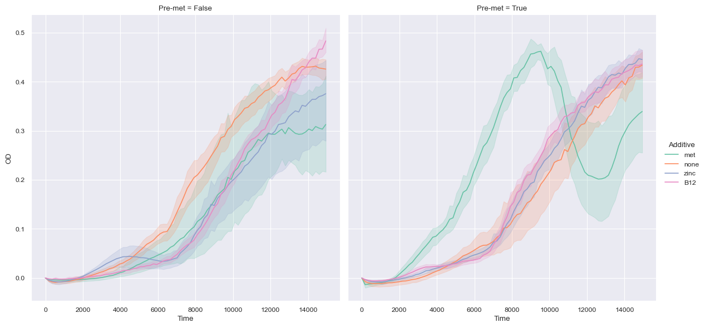
[366]:
sns.relplot(x="Time", y="OD", hue="Replicate", kind="line", row="Pre-met", col="Additive", height=3, \
data=mdf.filter(
(pl.col("Time")<20000) &
(pl.col("Replicate") != "3")
))
[366]:
<seaborn.axisgrid.FacetGrid at 0x437805db0>
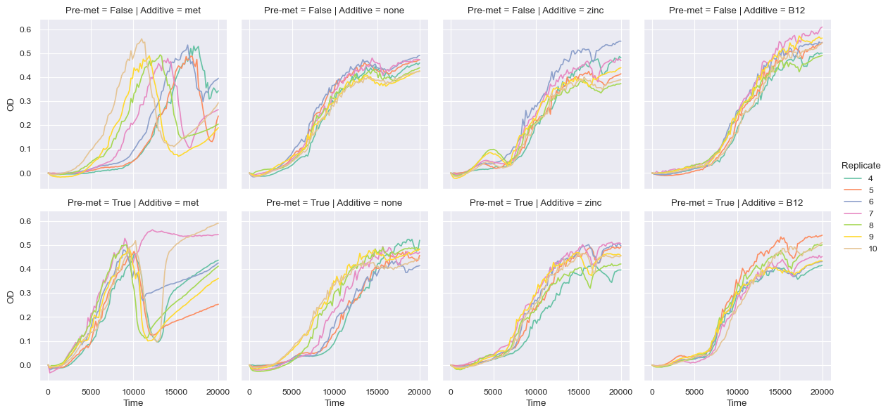
[367]:
growth_rate_precise = data=mdf.filter(
(pl.col("Time")<20000)
)
minimum_start_times = growth_rate_precise.filter(pl.col("OD") <= 0.06).group_by("Well").agg(pl.max("Time").alias("Time_exp_start")).sort("Time_exp_start")
minimum_end_times = growth_rate_precise.filter(pl.col("OD") >= 0.30).group_by("Well").agg(pl.min("Time").alias("Time_exp_end")).sort("Time_exp_end")
growth_rate_precise = growth_rate_precise.join(minimum_start_times, on="Well")
growth_rate_precise = growth_rate_precise.join(minimum_end_times, on="Well")
gr_time_filter = growth_rate_precise.filter((pl.col("Time") > pl.col("Time_exp_start")) & (pl.col("Time") < pl.col("Time_exp_end")))
gr_time_filter = gr_time_filter.with_columns((pl.col("Time") - pl.col("Time_exp_start")).alias("Corrected_time"))
# correct all od values to start at 0
# start_od = gr_time_filter.group_by("Well").agg(pl.min("OD").alias("Start_OD")).sort("Start_OD")
# gr_time_filter = gr_time_filter.join(start_od, on="Well")
# gr_time_filter = gr_time_filter.with_columns((pl.col("OD") - pl.col("Start_OD")).alias("Corrected_OD"))
# correct by linear fit
#This is what you need
correction_offset = gr_time_filter.to_pandas().groupby('Well').apply(regress, 'OD', ['Corrected_time'])
correction_offset = correction_offset.reset_index()
correction_offset = pl.DataFrame(correction_offset)
gr_time_filter = gr_time_filter.join(correction_offset, on="Well")
gr_time_filter = gr_time_filter.with_columns((pl.col("OD") - pl.col("intercept")).alias("Corrected_OD"))
gr_time_filter
[367]:
shape: (1_388, 15)
| Time | Well | OD | Experiment | Replicate | Abb | Description | Pre-met | Additive | Time_exp_start | Time_exp_end | Corrected_time | Corrected_time_right | intercept | Corrected_OD |
|---|---|---|---|---|---|---|---|---|---|---|---|---|---|---|
| i64 | str | f64 | str | str | str | str | bool | str | i64 | i64 | i64 | f64 | f64 | f64 |
| 4140 | "A3" | 0.066 | "A" | "3" | "Rrm" | "Rich + met, ++… | true | "met" | 3960 | 7560 | 180 | 0.000069 | 0.032632 | 0.033368 |
| 4320 | "A3" | 0.075 | "A" | "3" | "Rrm" | "Rich + met, ++… | true | "met" | 3960 | 7560 | 360 | 0.000069 | 0.032632 | 0.042368 |
| 4500 | "A3" | 0.085 | "A" | "3" | "Rrm" | "Rich + met, ++… | true | "met" | 3960 | 7560 | 540 | 0.000069 | 0.032632 | 0.052368 |
| 4680 | "A3" | 0.082 | "A" | "3" | "Rrm" | "Rich + met, ++… | true | "met" | 3960 | 7560 | 720 | 0.000069 | 0.032632 | 0.049368 |
| 4860 | "A3" | 0.087 | "A" | "3" | "Rrm" | "Rich + met, ++… | true | "met" | 3960 | 7560 | 900 | 0.000069 | 0.032632 | 0.054368 |
| 5040 | "A3" | 0.09 | "A" | "3" | "Rrm" | "Rich + met, ++… | true | "met" | 3960 | 7560 | 1080 | 0.000069 | 0.032632 | 0.057368 |
| 5220 | "A3" | 0.105 | "A" | "3" | "Rrm" | "Rich + met, ++… | true | "met" | 3960 | 7560 | 1260 | 0.000069 | 0.032632 | 0.072368 |
| 5400 | "A3" | 0.115 | "A" | "3" | "Rrm" | "Rich + met, ++… | true | "met" | 3960 | 7560 | 1440 | 0.000069 | 0.032632 | 0.082368 |
| 5580 | "A3" | 0.129 | "A" | "3" | "Rrm" | "Rich + met, ++… | true | "met" | 3960 | 7560 | 1620 | 0.000069 | 0.032632 | 0.096368 |
| 5760 | "A3" | 0.135 | "A" | "3" | "Rrm" | "Rich + met, ++… | true | "met" | 3960 | 7560 | 1800 | 0.000069 | 0.032632 | 0.102368 |
| 5940 | "A3" | 0.188 | "A" | "3" | "Rrm" | "Rich + met, ++… | true | "met" | 3960 | 7560 | 1980 | 0.000069 | 0.032632 | 0.155368 |
| 6120 | "A3" | 0.183 | "A" | "3" | "Rrm" | "Rich + met, ++… | true | "met" | 3960 | 7560 | 2160 | 0.000069 | 0.032632 | 0.150368 |
| … | … | … | … | … | … | … | … | … | … | … | … | … | … | … |
| 9900 | "H10" | 0.163 | "H" | "10" | "rb" | "Rich - met, --… | false | "B12" | 7740 | 12060 | 2160 | 0.00006 | 0.046715 | 0.116285 |
| 10080 | "H10" | 0.171 | "H" | "10" | "rb" | "Rich - met, --… | false | "B12" | 7740 | 12060 | 2340 | 0.00006 | 0.046715 | 0.124285 |
| 10260 | "H10" | 0.205 | "H" | "10" | "rb" | "Rich - met, --… | false | "B12" | 7740 | 12060 | 2520 | 0.00006 | 0.046715 | 0.158285 |
| 10440 | "H10" | 0.208 | "H" | "10" | "rb" | "Rich - met, --… | false | "B12" | 7740 | 12060 | 2700 | 0.00006 | 0.046715 | 0.161285 |
| 10620 | "H10" | 0.248 | "H" | "10" | "rb" | "Rich - met, --… | false | "B12" | 7740 | 12060 | 2880 | 0.00006 | 0.046715 | 0.201285 |
| 10800 | "H10" | 0.244 | "H" | "10" | "rb" | "Rich - met, --… | false | "B12" | 7740 | 12060 | 3060 | 0.00006 | 0.046715 | 0.197285 |
| 10980 | "H10" | 0.261 | "H" | "10" | "rb" | "Rich - met, --… | false | "B12" | 7740 | 12060 | 3240 | 0.00006 | 0.046715 | 0.214285 |
| 11160 | "H10" | 0.254 | "H" | "10" | "rb" | "Rich - met, --… | false | "B12" | 7740 | 12060 | 3420 | 0.00006 | 0.046715 | 0.207285 |
| 11340 | "H10" | 0.258 | "H" | "10" | "rb" | "Rich - met, --… | false | "B12" | 7740 | 12060 | 3600 | 0.00006 | 0.046715 | 0.211285 |
| 11520 | "H10" | 0.27 | "H" | "10" | "rb" | "Rich - met, --… | false | "B12" | 7740 | 12060 | 3780 | 0.00006 | 0.046715 | 0.223285 |
| 11700 | "H10" | 0.276 | "H" | "10" | "rb" | "Rich - met, --… | false | "B12" | 7740 | 12060 | 3960 | 0.00006 | 0.046715 | 0.229285 |
| 11880 | "H10" | 0.283 | "H" | "10" | "rb" | "Rich - met, --… | false | "B12" | 7740 | 12060 | 4140 | 0.00006 | 0.046715 | 0.236285 |
[368]:
sns.relplot(x="Corrected_time", y="Corrected_OD", hue="Replicate", kind="line", row="Pre-met", col="Additive", height=3, \
data=gr_time_filter)
[368]:
<seaborn.axisgrid.FacetGrid at 0x3f39c0a30>
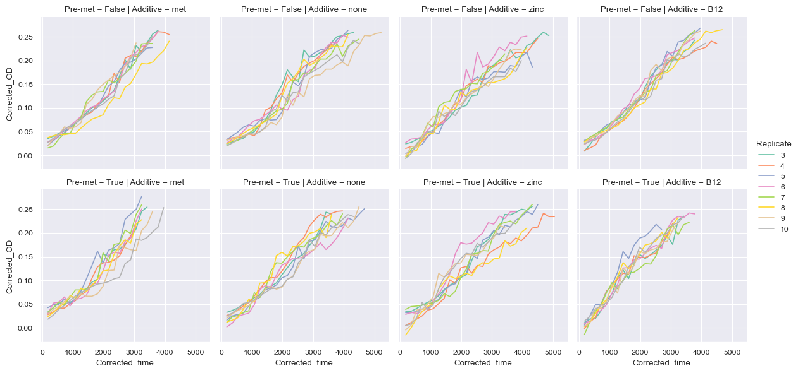
[369]:
sns.lmplot(x="Corrected_time", y="Corrected_OD", hue="Replicate", col="Additive", row="Pre-met", height=4,data=gr_time_filter.to_pandas())
[369]:
<seaborn.axisgrid.FacetGrid at 0x438f4e1d0>
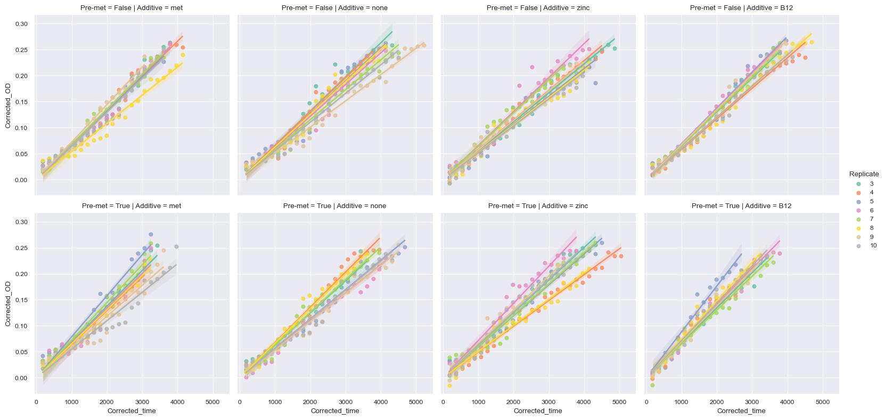
[370]:
sns.lmplot(x="Corrected_time", y="Corrected_OD", hue="Additive", row="Pre-met", height=4,data=gr_time_filter.to_pandas())
[370]:
<seaborn.axisgrid.FacetGrid at 0x412a01960>
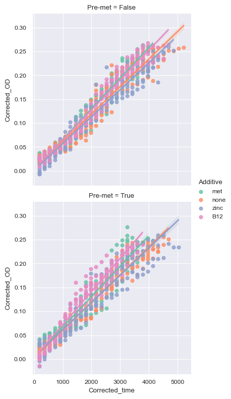
[371]:
predicted_gr = gr_time_filter.to_pandas().groupby('Additive').apply(regress_error, 'Corrected_OD', ['Corrected_time'])
predicted_gr = predicted_gr.reset_index()
predicted_gr
[371]:
| Additive | slope | intercept | slope_e | intercept_e | |
|---|---|---|---|---|---|
| 0 | B12 | 0.000064 | 0.005133 | 8.400059e-07 | 0.001903 |
| 1 | met | 0.000064 | 0.002766 | 1.026165e-06 | 0.002208 |
| 2 | none | 0.000058 | 0.003657 | 7.807927e-07 | 0.001988 |
| 3 | zinc | 0.000057 | 0.003028 | 8.443688e-07 | 0.002128 |
2nd round, different overnight media +/- met
[372]:
bf = pl.read_csv("growth_data/adrian_growth_jan25_blanks.csv")
bf = bf.drop('T� 600')
bfm = bf.mean()
bfm[0, "Time"] = 0
bfm = bfm.with_columns(bfm["Time"].cast(pl.Int64))
[373]:
df = pl.read_csv("growth_data/adrian_growth_jan25_v2.csv")
df = df.drop('T∞ 600')
df
[373]:
shape: (217, 66)
| Time | T600 | A2 | A3 | A4 | A5 | A6 | A7 | A8 | A9 | B2 | B3 | B4 | B5 | B6 | B7 | B8 | B9 | C2 | C3 | C4 | C5 | C6 | C7 | C8 | C9 | D2 | D3 | D4 | D5 | D6 | D7 | D8 | D9 | E2 | E3 | E4 | E5 | E6 | E7 | E8 | E9 | F2 | F3 | F4 | F5 | F6 | F7 | F8 | F9 | G2 | G3 | G4 | G5 | G6 | G7 | G8 | G9 | H2 | H3 | H4 | H5 | H6 | H7 | H8 | H9 |
|---|---|---|---|---|---|---|---|---|---|---|---|---|---|---|---|---|---|---|---|---|---|---|---|---|---|---|---|---|---|---|---|---|---|---|---|---|---|---|---|---|---|---|---|---|---|---|---|---|---|---|---|---|---|---|---|---|---|---|---|---|---|---|---|---|---|
| str | f64 | f64 | f64 | f64 | f64 | f64 | f64 | f64 | f64 | f64 | f64 | f64 | f64 | f64 | f64 | f64 | f64 | f64 | f64 | f64 | f64 | f64 | f64 | f64 | f64 | f64 | f64 | f64 | f64 | f64 | f64 | f64 | f64 | f64 | f64 | f64 | f64 | f64 | f64 | f64 | f64 | f64 | f64 | f64 | f64 | f64 | f64 | f64 | f64 | f64 | f64 | f64 | f64 | f64 | f64 | f64 | f64 | f64 | f64 | f64 | f64 | f64 | f64 | f64 | f64 |
| "00:04:10" | 36.9 | 0.924 | 0.844 | 0.944 | 0.963 | 1.081 | 0.823 | 0.942 | 1.072 | 0.928 | 0.939 | 1.04 | 0.863 | 0.742 | 0.71 | 0.998 | 0.749 | 0.916 | 0.917 | 0.81 | 0.801 | 0.842 | 0.968 | 0.85 | 1.086 | 0.836 | 0.896 | 0.934 | 0.848 | 0.966 | 1.031 | 1.074 | 0.894 | 0.859 | 0.81 | 0.927 | 1.08 | 0.833 | 0.924 | 0.873 | 0.783 | 0.641 | 0.742 | 0.962 | 0.663 | 0.772 | 0.93 | 0.882 | 0.894 | 0.834 | 0.818 | 0.704 | 0.911 | 0.743 | 0.864 | 0.841 | 0.774 | 0.951 | 0.848 | 0.932 | 0.916 | 0.786 | 0.768 | 0.883 | 0.938 |
| "00:09:10" | 37.1 | 0.923 | 0.842 | 0.944 | 0.964 | 1.08 | 0.823 | 0.943 | 1.067 | 0.93 | 0.942 | 1.041 | 0.862 | 0.737 | 0.71 | 0.998 | 0.748 | 0.917 | 0.916 | 0.812 | 0.797 | 0.837 | 0.97 | 0.85 | 1.087 | 0.837 | 0.896 | 0.932 | 0.851 | 0.965 | 1.028 | 1.074 | 0.893 | 0.858 | 0.808 | 0.928 | 1.079 | 0.836 | 0.926 | 0.875 | 0.782 | 0.645 | 0.738 | 0.96 | 0.664 | 0.772 | 0.93 | 0.882 | 0.894 | 0.843 | 0.819 | 0.704 | 0.911 | 0.744 | 0.863 | 0.841 | 0.77 | 0.947 | 0.847 | 0.931 | 0.914 | 0.784 | 0.768 | 0.881 | 0.936 |
| "00:14:10" | 37.0 | 0.924 | 0.842 | 0.941 | 0.962 | 1.079 | 0.829 | 0.945 | 1.065 | 0.932 | 0.946 | 1.042 | 0.86 | 0.737 | 0.712 | 0.999 | 0.747 | 0.917 | 0.919 | 0.811 | 0.793 | 0.838 | 0.966 | 0.85 | 1.087 | 0.835 | 0.897 | 0.93 | 0.852 | 0.963 | 1.025 | 1.076 | 0.894 | 0.858 | 0.808 | 0.928 | 1.077 | 0.834 | 0.929 | 0.878 | 0.783 | 0.646 | 0.736 | 0.959 | 0.663 | 0.771 | 0.929 | 0.881 | 0.892 | 0.843 | 0.823 | 0.703 | 0.909 | 0.743 | 0.864 | 0.842 | 0.767 | 0.938 | 0.847 | 0.931 | 0.914 | 0.786 | 0.768 | 0.882 | 0.935 |
| "00:19:10" | 37.0 | 0.925 | 0.84 | 0.941 | 0.962 | 1.082 | 0.831 | 0.946 | 1.065 | 0.93 | 0.951 | 1.042 | 0.859 | 0.739 | 0.713 | 0.998 | 0.747 | 0.917 | 0.92 | 0.812 | 0.791 | 0.832 | 0.967 | 0.85 | 1.087 | 0.836 | 0.899 | 0.928 | 0.852 | 0.961 | 1.025 | 1.076 | 0.894 | 0.858 | 0.808 | 0.927 | 1.078 | 0.832 | 0.932 | 0.877 | 0.782 | 0.65 | 0.736 | 0.959 | 0.667 | 0.77 | 0.929 | 0.881 | 0.892 | 0.845 | 0.821 | 0.703 | 0.91 | 0.742 | 0.862 | 0.842 | 0.767 | 0.937 | 0.847 | 0.931 | 0.915 | 0.785 | 0.768 | 0.882 | 0.934 |
| "00:24:10" | 37.1 | 0.924 | 0.841 | 0.942 | 0.961 | 1.083 | 0.845 | 0.946 | 1.064 | 0.932 | 0.953 | 1.042 | 0.859 | 0.747 | 0.716 | 0.999 | 0.747 | 0.918 | 0.919 | 0.811 | 0.792 | 0.833 | 0.968 | 0.848 | 1.087 | 0.836 | 0.9 | 0.928 | 0.854 | 0.96 | 1.026 | 1.075 | 0.894 | 0.858 | 0.808 | 0.926 | 1.076 | 0.832 | 0.935 | 0.879 | 0.784 | 0.652 | 0.735 | 0.957 | 0.669 | 0.771 | 0.928 | 0.881 | 0.89 | 0.846 | 0.822 | 0.704 | 0.909 | 0.743 | 0.861 | 0.841 | 0.768 | 0.936 | 0.847 | 0.931 | 0.915 | 0.786 | 0.768 | 0.883 | 0.936 |
| "00:29:10" | 37.0 | 0.923 | 0.838 | 0.942 | 0.96 | 1.082 | 0.851 | 0.95 | 1.064 | 0.93 | 0.955 | 1.041 | 0.857 | 0.75 | 0.718 | 0.998 | 0.747 | 0.916 | 0.924 | 0.81 | 0.791 | 0.826 | 0.97 | 0.848 | 1.086 | 0.835 | 0.902 | 0.927 | 0.855 | 0.96 | 1.026 | 1.076 | 0.895 | 0.857 | 0.809 | 0.926 | 1.074 | 0.832 | 0.937 | 0.88 | 0.785 | 0.656 | 0.735 | 0.957 | 0.67 | 0.77 | 0.927 | 0.882 | 0.89 | 0.847 | 0.822 | 0.704 | 0.909 | 0.742 | 0.861 | 0.841 | 0.772 | 0.937 | 0.846 | 0.931 | 0.915 | 0.786 | 0.768 | 0.884 | 0.937 |
| "00:34:10" | 37.0 | 0.923 | 0.842 | 0.942 | 0.96 | 1.082 | 0.862 | 0.947 | 1.064 | 0.931 | 0.957 | 1.042 | 0.859 | 0.748 | 0.722 | 0.999 | 0.749 | 0.915 | 0.923 | 0.811 | 0.79 | 0.823 | 0.968 | 0.848 | 1.085 | 0.835 | 0.903 | 0.926 | 0.855 | 0.958 | 1.026 | 1.076 | 0.893 | 0.858 | 0.81 | 0.925 | 1.073 | 0.832 | 0.94 | 0.88 | 0.786 | 0.657 | 0.734 | 0.956 | 0.673 | 0.771 | 0.928 | 0.881 | 0.889 | 0.848 | 0.823 | 0.705 | 0.909 | 0.742 | 0.859 | 0.842 | 0.773 | 0.932 | 0.847 | 0.931 | 0.916 | 0.786 | 0.769 | 0.883 | 0.935 |
| "00:39:10" | 37.0 | 0.921 | 0.841 | 0.94 | 0.96 | 1.081 | 0.86 | 0.947 | 1.064 | 0.931 | 0.959 | 1.041 | 0.859 | 0.745 | 0.72 | 0.999 | 0.749 | 0.915 | 0.92 | 0.81 | 0.791 | 0.819 | 0.969 | 0.846 | 1.085 | 0.834 | 0.905 | 0.926 | 0.855 | 0.958 | 1.026 | 1.078 | 0.893 | 0.86 | 0.811 | 0.925 | 1.073 | 0.83 | 0.942 | 0.883 | 0.787 | 0.661 | 0.736 | 0.957 | 0.676 | 0.771 | 0.927 | 0.882 | 0.89 | 0.849 | 0.823 | 0.704 | 0.912 | 0.745 | 0.858 | 0.843 | 0.775 | 0.936 | 0.847 | 0.932 | 0.918 | 0.787 | 0.769 | 0.886 | 0.935 |
| "00:44:10" | 37.0 | 0.919 | 0.84 | 0.94 | 0.959 | 1.081 | 0.865 | 0.948 | 1.063 | 0.931 | 0.959 | 1.04 | 0.86 | 0.746 | 0.726 | 1.0 | 0.751 | 0.916 | 0.919 | 0.809 | 0.791 | 0.811 | 0.969 | 0.847 | 1.085 | 0.834 | 0.906 | 0.926 | 0.854 | 0.958 | 1.028 | 1.078 | 0.894 | 0.863 | 0.811 | 0.925 | 1.072 | 0.829 | 0.944 | 0.88 | 0.789 | 0.663 | 0.726 | 0.956 | 0.676 | 0.771 | 0.927 | 0.882 | 0.889 | 0.849 | 0.822 | 0.706 | 0.908 | 0.741 | 0.857 | 0.843 | 0.772 | 0.941 | 0.847 | 0.93 | 0.918 | 0.787 | 0.774 | 0.886 | 0.938 |
| "00:49:10" | 37.0 | 0.921 | 0.839 | 0.94 | 0.96 | 1.082 | 0.87 | 0.948 | 1.064 | 0.928 | 0.96 | 1.039 | 0.858 | 0.748 | 0.726 | 1.0 | 0.75 | 0.917 | 0.921 | 0.81 | 0.791 | 0.81 | 0.97 | 0.848 | 1.085 | 0.835 | 0.908 | 0.925 | 0.854 | 0.958 | 1.027 | 1.077 | 0.893 | 0.863 | 0.813 | 0.925 | 1.072 | 0.828 | 0.946 | 0.884 | 0.791 | 0.664 | 0.727 | 0.957 | 0.679 | 0.772 | 0.928 | 0.883 | 0.89 | 0.854 | 0.824 | 0.707 | 0.912 | 0.742 | 0.857 | 0.844 | 0.774 | 0.946 | 0.851 | 0.934 | 0.92 | 0.79 | 0.772 | 0.891 | 0.94 |
| "00:54:10" | 37.1 | 0.92 | 0.842 | 0.943 | 0.96 | 1.082 | 0.871 | 0.95 | 1.065 | 0.928 | 0.963 | 1.039 | 0.862 | 0.748 | 0.726 | 1.0 | 0.753 | 0.916 | 0.918 | 0.81 | 0.791 | 0.81 | 0.976 | 0.848 | 1.085 | 0.836 | 0.91 | 0.926 | 0.857 | 0.958 | 1.028 | 1.077 | 0.893 | 0.863 | 0.814 | 0.926 | 1.074 | 0.83 | 0.946 | 0.882 | 0.792 | 0.668 | 0.733 | 0.959 | 0.682 | 0.773 | 0.928 | 0.884 | 0.89 | 0.854 | 0.827 | 0.718 | 0.913 | 0.742 | 0.856 | 0.845 | 0.774 | 0.935 | 0.853 | 0.932 | 0.92 | 0.793 | 0.774 | 0.887 | 0.934 |
| "00:59:10" | 37.0 | 0.92 | 0.842 | 0.942 | 0.96 | 1.081 | 0.876 | 0.952 | 1.065 | 0.929 | 0.963 | 1.039 | 0.862 | 0.749 | 0.731 | 1.001 | 0.753 | 0.917 | 0.917 | 0.809 | 0.791 | 0.808 | 0.977 | 0.848 | 1.086 | 0.837 | 0.911 | 0.927 | 0.857 | 0.958 | 1.03 | 1.076 | 0.897 | 0.865 | 0.816 | 0.927 | 1.074 | 0.83 | 0.947 | 0.885 | 0.796 | 0.669 | 0.732 | 0.961 | 0.683 | 0.775 | 0.929 | 0.884 | 0.89 | 0.855 | 0.825 | 0.71 | 0.916 | 0.742 | 0.863 | 0.846 | 0.776 | 0.939 | 0.85 | 0.932 | 0.925 | 0.8 | 0.781 | 0.899 | 0.945 |
| … | … | … | … | … | … | … | … | … | … | … | … | … | … | … | … | … | … | … | … | … | … | … | … | … | … | … | … | … | … | … | … | … | … | … | … | … | … | … | … | … | … | … | … | … | … | … | … | … | … | … | … | … | … | … | … | … | … | … | … | … | … | … | … | … | … |
| "17:09:10" | 37.1 | 1.925 | 1.831 | 1.892 | 1.885 | 1.994 | 1.879 | 1.873 | 1.997 | 1.6 | 1.716 | 1.736 | 1.612 | 1.605 | 1.569 | 1.711 | 1.616 | 1.542 | 1.583 | 1.518 | 1.486 | 1.474 | 1.595 | 1.547 | 1.696 | 1.584 | 1.7 | 1.686 | 1.651 | 1.646 | 1.748 | 1.759 | 1.715 | 1.913 | 1.718 | 1.775 | 1.857 | 1.758 | 1.831 | 1.849 | 1.839 | 1.614 | 1.587 | 1.742 | 1.67 | 1.688 | 1.732 | 1.728 | 1.695 | 1.526 | 1.491 | 1.502 | 1.647 | 1.541 | 1.575 | 1.58 | 1.55 | 1.74 | 1.605 | 1.699 | 1.705 | 1.634 | 1.652 | 1.773 | 1.73 |
| "17:14:10" | 37.0 | 1.927 | 1.834 | 1.895 | 1.888 | 1.995 | 1.879 | 1.876 | 1.999 | 1.602 | 1.719 | 1.737 | 1.613 | 1.608 | 1.571 | 1.711 | 1.619 | 1.546 | 1.587 | 1.521 | 1.488 | 1.478 | 1.599 | 1.551 | 1.699 | 1.588 | 1.701 | 1.688 | 1.651 | 1.65 | 1.75 | 1.761 | 1.718 | 1.914 | 1.719 | 1.776 | 1.859 | 1.76 | 1.833 | 1.852 | 1.84 | 1.618 | 1.589 | 1.744 | 1.673 | 1.69 | 1.736 | 1.731 | 1.697 | 1.53 | 1.494 | 1.506 | 1.649 | 1.537 | 1.578 | 1.58 | 1.555 | 1.747 | 1.609 | 1.703 | 1.708 | 1.636 | 1.655 | 1.776 | 1.735 |
| "17:19:10" | 37.0 | 1.931 | 1.838 | 1.898 | 1.889 | 1.997 | 1.882 | 1.877 | 1.999 | 1.606 | 1.724 | 1.739 | 1.618 | 1.612 | 1.573 | 1.714 | 1.622 | 1.552 | 1.588 | 1.524 | 1.491 | 1.48 | 1.602 | 1.555 | 1.702 | 1.589 | 1.702 | 1.691 | 1.652 | 1.651 | 1.753 | 1.763 | 1.721 | 1.917 | 1.722 | 1.779 | 1.86 | 1.763 | 1.835 | 1.854 | 1.841 | 1.621 | 1.591 | 1.745 | 1.674 | 1.691 | 1.738 | 1.732 | 1.702 | 1.534 | 1.498 | 1.508 | 1.642 | 1.541 | 1.582 | 1.581 | 1.56 | 1.752 | 1.611 | 1.706 | 1.71 | 1.641 | 1.657 | 1.779 | 1.738 |
| "17:24:10" | 37.1 | 1.934 | 1.84 | 1.902 | 1.893 | 2.0 | 1.883 | 1.881 | 2.004 | 1.608 | 1.726 | 1.739 | 1.617 | 1.611 | 1.573 | 1.715 | 1.624 | 1.555 | 1.592 | 1.526 | 1.492 | 1.483 | 1.603 | 1.557 | 1.704 | 1.593 | 1.706 | 1.693 | 1.654 | 1.655 | 1.752 | 1.764 | 1.721 | 1.919 | 1.723 | 1.78 | 1.861 | 1.763 | 1.836 | 1.855 | 1.843 | 1.624 | 1.593 | 1.748 | 1.677 | 1.694 | 1.74 | 1.736 | 1.703 | 1.538 | 1.502 | 1.513 | 1.643 | 1.545 | 1.585 | 1.585 | 1.563 | 1.758 | 1.614 | 1.709 | 1.712 | 1.642 | 1.659 | 1.781 | 1.741 |
| "17:29:10" | 37.0 | 1.938 | 1.843 | 1.906 | 1.897 | 2.002 | 1.887 | 1.884 | 2.005 | 1.61 | 1.728 | 1.742 | 1.618 | 1.612 | 1.575 | 1.718 | 1.625 | 1.561 | 1.595 | 1.527 | 1.496 | 1.487 | 1.607 | 1.559 | 1.704 | 1.597 | 1.706 | 1.697 | 1.657 | 1.658 | 1.756 | 1.767 | 1.726 | 1.921 | 1.723 | 1.78 | 1.861 | 1.765 | 1.837 | 1.857 | 1.845 | 1.628 | 1.594 | 1.748 | 1.678 | 1.696 | 1.743 | 1.737 | 1.708 | 1.544 | 1.506 | 1.515 | 1.646 | 1.549 | 1.587 | 1.588 | 1.569 | 1.767 | 1.621 | 1.714 | 1.717 | 1.648 | 1.664 | 1.786 | 1.746 |
| "17:34:10" | 37.0 | 1.941 | 1.847 | 1.909 | 1.899 | 2.005 | 1.89 | 1.886 | 2.007 | 1.613 | 1.73 | 1.742 | 1.62 | 1.614 | 1.576 | 1.719 | 1.631 | 1.565 | 1.597 | 1.53 | 1.499 | 1.489 | 1.608 | 1.563 | 1.716 | 1.599 | 1.708 | 1.701 | 1.657 | 1.659 | 1.76 | 1.77 | 1.727 | 1.924 | 1.726 | 1.783 | 1.864 | 1.767 | 1.84 | 1.86 | 1.847 | 1.631 | 1.595 | 1.75 | 1.679 | 1.698 | 1.744 | 1.74 | 1.709 | 1.549 | 1.509 | 1.519 | 1.649 | 1.549 | 1.585 | 1.589 | 1.573 | 1.773 | 1.623 | 1.717 | 1.718 | 1.651 | 1.666 | 1.788 | 1.749 |
| "17:39:10" | 37.0 | 1.943 | 1.852 | 1.914 | 1.905 | 2.008 | 1.893 | 1.89 | 2.011 | 1.615 | 1.732 | 1.744 | 1.622 | 1.616 | 1.579 | 1.72 | 1.633 | 1.569 | 1.599 | 1.532 | 1.499 | 1.492 | 1.611 | 1.565 | 1.716 | 1.602 | 1.712 | 1.706 | 1.661 | 1.663 | 1.76 | 1.771 | 1.729 | 1.927 | 1.726 | 1.784 | 1.864 | 1.768 | 1.84 | 1.859 | 1.849 | 1.633 | 1.6 | 1.752 | 1.682 | 1.701 | 1.747 | 1.742 | 1.714 | 1.554 | 1.514 | 1.522 | 1.653 | 1.553 | 1.594 | 1.591 | 1.578 | 1.78 | 1.626 | 1.72 | 1.721 | 1.654 | 1.669 | 1.79 | 1.754 |
| "17:44:10" | 37.0 | 1.946 | 1.854 | 1.916 | 1.907 | 2.008 | 1.893 | 1.891 | 2.01 | 1.617 | 1.735 | 1.746 | 1.623 | 1.616 | 1.58 | 1.722 | 1.637 | 1.571 | 1.603 | 1.536 | 1.504 | 1.494 | 1.613 | 1.57 | 1.722 | 1.605 | 1.71 | 1.706 | 1.661 | 1.666 | 1.763 | 1.773 | 1.732 | 1.928 | 1.728 | 1.784 | 1.865 | 1.769 | 1.843 | 1.863 | 1.851 | 1.637 | 1.6 | 1.754 | 1.684 | 1.702 | 1.748 | 1.744 | 1.715 | 1.557 | 1.516 | 1.516 | 1.652 | 1.551 | 1.596 | 1.59 | 1.58 | 1.786 | 1.63 | 1.724 | 1.721 | 1.656 | 1.671 | 1.793 | 1.758 |
| "17:49:10" | 37.0 | 1.949 | 1.859 | 1.921 | 1.913 | 2.012 | 1.898 | 1.895 | 2.015 | 1.618 | 1.734 | 1.745 | 1.622 | 1.616 | 1.579 | 1.72 | 1.636 | 1.574 | 1.604 | 1.538 | 1.505 | 1.496 | 1.615 | 1.571 | 1.719 | 1.608 | 1.716 | 1.71 | 1.664 | 1.669 | 1.765 | 1.774 | 1.732 | 1.931 | 1.728 | 1.786 | 1.865 | 1.77 | 1.843 | 1.863 | 1.851 | 1.641 | 1.603 | 1.758 | 1.688 | 1.706 | 1.752 | 1.747 | 1.718 | 1.56 | 1.518 | 1.522 | 1.654 | 1.551 | 1.596 | 1.59 | 1.581 | 1.79 | 1.632 | 1.727 | 1.725 | 1.659 | 1.671 | 1.795 | 1.761 |
| "17:54:10" | 37.0 | 1.953 | 1.861 | 1.922 | 1.914 | 2.013 | 1.899 | 1.896 | 2.014 | 1.622 | 1.738 | 1.749 | 1.625 | 1.618 | 1.582 | 1.724 | 1.641 | 1.58 | 1.606 | 1.54 | 1.509 | 1.499 | 1.617 | 1.574 | 1.722 | 1.612 | 1.716 | 1.711 | 1.664 | 1.672 | 1.769 | 1.776 | 1.736 | 1.932 | 1.73 | 1.787 | 1.867 | 1.772 | 1.846 | 1.867 | 1.853 | 1.645 | 1.603 | 1.758 | 1.689 | 1.706 | 1.753 | 1.748 | 1.72 | 1.565 | 1.522 | 1.524 | 1.655 | 1.551 | 1.596 | 1.591 | 1.583 | 1.798 | 1.637 | 1.732 | 1.728 | 1.664 | 1.676 | 1.798 | 1.764 |
| "17:59:10" | 37.0 | 1.955 | 1.866 | 1.926 | 1.919 | 2.017 | 1.903 | 1.899 | 2.018 | 1.624 | 1.739 | 1.749 | 1.626 | 1.618 | 1.583 | 1.725 | 1.645 | 1.583 | 1.609 | 1.543 | 1.512 | 1.499 | 1.618 | 1.576 | 1.727 | 1.615 | 1.718 | 1.714 | 1.666 | 1.673 | 1.77 | 1.778 | 1.738 | 1.935 | 1.731 | 1.789 | 1.868 | 1.774 | 1.848 | 1.869 | 1.855 | 1.648 | 1.604 | 1.76 | 1.688 | 1.708 | 1.754 | 1.749 | 1.724 | 1.567 | 1.525 | 1.526 | 1.655 | 1.552 | 1.597 | 1.593 | 1.586 | 1.805 | 1.641 | 1.736 | 1.731 | 1.667 | 1.679 | 1.8 | 1.769 |
| "18:04:10" | 37.0 | 1.958 | 1.868 | 1.929 | 1.922 | 2.018 | 1.906 | 1.903 | 2.022 | 1.627 | 1.74 | 1.752 | 1.629 | 1.62 | 1.582 | 1.726 | 1.647 | 1.585 | 1.609 | 1.543 | 1.511 | 1.502 | 1.619 | 1.579 | 1.726 | 1.617 | 1.718 | 1.716 | 1.667 | 1.674 | 1.773 | 1.781 | 1.739 | 1.938 | 1.733 | 1.79 | 1.869 | 1.775 | 1.849 | 1.87 | 1.856 | 1.652 | 1.606 | 1.762 | 1.69 | 1.709 | 1.756 | 1.752 | 1.726 | 1.574 | 1.528 | 1.528 | 1.658 | 1.554 | 1.598 | 1.594 | 1.59 | 1.809 | 1.641 | 1.737 | 1.732 | 1.668 | 1.68 | 1.803 | 1.772 |
[374]:
df = df.with_columns(pl.col("Time").str.to_time("%H:%M:%S"))
df = df.with_columns(3600 * df['Time'].dt.hour().cast(pl.Int64) + 60 * df['Time'].dt.minute().cast(pl.Int64) + df['Time'].dt.second())
df
[374]:
shape: (217, 66)
| Time | T600 | A2 | A3 | A4 | A5 | A6 | A7 | A8 | A9 | B2 | B3 | B4 | B5 | B6 | B7 | B8 | B9 | C2 | C3 | C4 | C5 | C6 | C7 | C8 | C9 | D2 | D3 | D4 | D5 | D6 | D7 | D8 | D9 | E2 | E3 | E4 | E5 | E6 | E7 | E8 | E9 | F2 | F3 | F4 | F5 | F6 | F7 | F8 | F9 | G2 | G3 | G4 | G5 | G6 | G7 | G8 | G9 | H2 | H3 | H4 | H5 | H6 | H7 | H8 | H9 |
|---|---|---|---|---|---|---|---|---|---|---|---|---|---|---|---|---|---|---|---|---|---|---|---|---|---|---|---|---|---|---|---|---|---|---|---|---|---|---|---|---|---|---|---|---|---|---|---|---|---|---|---|---|---|---|---|---|---|---|---|---|---|---|---|---|---|
| i64 | f64 | f64 | f64 | f64 | f64 | f64 | f64 | f64 | f64 | f64 | f64 | f64 | f64 | f64 | f64 | f64 | f64 | f64 | f64 | f64 | f64 | f64 | f64 | f64 | f64 | f64 | f64 | f64 | f64 | f64 | f64 | f64 | f64 | f64 | f64 | f64 | f64 | f64 | f64 | f64 | f64 | f64 | f64 | f64 | f64 | f64 | f64 | f64 | f64 | f64 | f64 | f64 | f64 | f64 | f64 | f64 | f64 | f64 | f64 | f64 | f64 | f64 | f64 | f64 | f64 |
| 250 | 36.9 | 0.924 | 0.844 | 0.944 | 0.963 | 1.081 | 0.823 | 0.942 | 1.072 | 0.928 | 0.939 | 1.04 | 0.863 | 0.742 | 0.71 | 0.998 | 0.749 | 0.916 | 0.917 | 0.81 | 0.801 | 0.842 | 0.968 | 0.85 | 1.086 | 0.836 | 0.896 | 0.934 | 0.848 | 0.966 | 1.031 | 1.074 | 0.894 | 0.859 | 0.81 | 0.927 | 1.08 | 0.833 | 0.924 | 0.873 | 0.783 | 0.641 | 0.742 | 0.962 | 0.663 | 0.772 | 0.93 | 0.882 | 0.894 | 0.834 | 0.818 | 0.704 | 0.911 | 0.743 | 0.864 | 0.841 | 0.774 | 0.951 | 0.848 | 0.932 | 0.916 | 0.786 | 0.768 | 0.883 | 0.938 |
| 550 | 37.1 | 0.923 | 0.842 | 0.944 | 0.964 | 1.08 | 0.823 | 0.943 | 1.067 | 0.93 | 0.942 | 1.041 | 0.862 | 0.737 | 0.71 | 0.998 | 0.748 | 0.917 | 0.916 | 0.812 | 0.797 | 0.837 | 0.97 | 0.85 | 1.087 | 0.837 | 0.896 | 0.932 | 0.851 | 0.965 | 1.028 | 1.074 | 0.893 | 0.858 | 0.808 | 0.928 | 1.079 | 0.836 | 0.926 | 0.875 | 0.782 | 0.645 | 0.738 | 0.96 | 0.664 | 0.772 | 0.93 | 0.882 | 0.894 | 0.843 | 0.819 | 0.704 | 0.911 | 0.744 | 0.863 | 0.841 | 0.77 | 0.947 | 0.847 | 0.931 | 0.914 | 0.784 | 0.768 | 0.881 | 0.936 |
| 850 | 37.0 | 0.924 | 0.842 | 0.941 | 0.962 | 1.079 | 0.829 | 0.945 | 1.065 | 0.932 | 0.946 | 1.042 | 0.86 | 0.737 | 0.712 | 0.999 | 0.747 | 0.917 | 0.919 | 0.811 | 0.793 | 0.838 | 0.966 | 0.85 | 1.087 | 0.835 | 0.897 | 0.93 | 0.852 | 0.963 | 1.025 | 1.076 | 0.894 | 0.858 | 0.808 | 0.928 | 1.077 | 0.834 | 0.929 | 0.878 | 0.783 | 0.646 | 0.736 | 0.959 | 0.663 | 0.771 | 0.929 | 0.881 | 0.892 | 0.843 | 0.823 | 0.703 | 0.909 | 0.743 | 0.864 | 0.842 | 0.767 | 0.938 | 0.847 | 0.931 | 0.914 | 0.786 | 0.768 | 0.882 | 0.935 |
| 1150 | 37.0 | 0.925 | 0.84 | 0.941 | 0.962 | 1.082 | 0.831 | 0.946 | 1.065 | 0.93 | 0.951 | 1.042 | 0.859 | 0.739 | 0.713 | 0.998 | 0.747 | 0.917 | 0.92 | 0.812 | 0.791 | 0.832 | 0.967 | 0.85 | 1.087 | 0.836 | 0.899 | 0.928 | 0.852 | 0.961 | 1.025 | 1.076 | 0.894 | 0.858 | 0.808 | 0.927 | 1.078 | 0.832 | 0.932 | 0.877 | 0.782 | 0.65 | 0.736 | 0.959 | 0.667 | 0.77 | 0.929 | 0.881 | 0.892 | 0.845 | 0.821 | 0.703 | 0.91 | 0.742 | 0.862 | 0.842 | 0.767 | 0.937 | 0.847 | 0.931 | 0.915 | 0.785 | 0.768 | 0.882 | 0.934 |
| 1450 | 37.1 | 0.924 | 0.841 | 0.942 | 0.961 | 1.083 | 0.845 | 0.946 | 1.064 | 0.932 | 0.953 | 1.042 | 0.859 | 0.747 | 0.716 | 0.999 | 0.747 | 0.918 | 0.919 | 0.811 | 0.792 | 0.833 | 0.968 | 0.848 | 1.087 | 0.836 | 0.9 | 0.928 | 0.854 | 0.96 | 1.026 | 1.075 | 0.894 | 0.858 | 0.808 | 0.926 | 1.076 | 0.832 | 0.935 | 0.879 | 0.784 | 0.652 | 0.735 | 0.957 | 0.669 | 0.771 | 0.928 | 0.881 | 0.89 | 0.846 | 0.822 | 0.704 | 0.909 | 0.743 | 0.861 | 0.841 | 0.768 | 0.936 | 0.847 | 0.931 | 0.915 | 0.786 | 0.768 | 0.883 | 0.936 |
| 1750 | 37.0 | 0.923 | 0.838 | 0.942 | 0.96 | 1.082 | 0.851 | 0.95 | 1.064 | 0.93 | 0.955 | 1.041 | 0.857 | 0.75 | 0.718 | 0.998 | 0.747 | 0.916 | 0.924 | 0.81 | 0.791 | 0.826 | 0.97 | 0.848 | 1.086 | 0.835 | 0.902 | 0.927 | 0.855 | 0.96 | 1.026 | 1.076 | 0.895 | 0.857 | 0.809 | 0.926 | 1.074 | 0.832 | 0.937 | 0.88 | 0.785 | 0.656 | 0.735 | 0.957 | 0.67 | 0.77 | 0.927 | 0.882 | 0.89 | 0.847 | 0.822 | 0.704 | 0.909 | 0.742 | 0.861 | 0.841 | 0.772 | 0.937 | 0.846 | 0.931 | 0.915 | 0.786 | 0.768 | 0.884 | 0.937 |
| 2050 | 37.0 | 0.923 | 0.842 | 0.942 | 0.96 | 1.082 | 0.862 | 0.947 | 1.064 | 0.931 | 0.957 | 1.042 | 0.859 | 0.748 | 0.722 | 0.999 | 0.749 | 0.915 | 0.923 | 0.811 | 0.79 | 0.823 | 0.968 | 0.848 | 1.085 | 0.835 | 0.903 | 0.926 | 0.855 | 0.958 | 1.026 | 1.076 | 0.893 | 0.858 | 0.81 | 0.925 | 1.073 | 0.832 | 0.94 | 0.88 | 0.786 | 0.657 | 0.734 | 0.956 | 0.673 | 0.771 | 0.928 | 0.881 | 0.889 | 0.848 | 0.823 | 0.705 | 0.909 | 0.742 | 0.859 | 0.842 | 0.773 | 0.932 | 0.847 | 0.931 | 0.916 | 0.786 | 0.769 | 0.883 | 0.935 |
| 2350 | 37.0 | 0.921 | 0.841 | 0.94 | 0.96 | 1.081 | 0.86 | 0.947 | 1.064 | 0.931 | 0.959 | 1.041 | 0.859 | 0.745 | 0.72 | 0.999 | 0.749 | 0.915 | 0.92 | 0.81 | 0.791 | 0.819 | 0.969 | 0.846 | 1.085 | 0.834 | 0.905 | 0.926 | 0.855 | 0.958 | 1.026 | 1.078 | 0.893 | 0.86 | 0.811 | 0.925 | 1.073 | 0.83 | 0.942 | 0.883 | 0.787 | 0.661 | 0.736 | 0.957 | 0.676 | 0.771 | 0.927 | 0.882 | 0.89 | 0.849 | 0.823 | 0.704 | 0.912 | 0.745 | 0.858 | 0.843 | 0.775 | 0.936 | 0.847 | 0.932 | 0.918 | 0.787 | 0.769 | 0.886 | 0.935 |
| 2650 | 37.0 | 0.919 | 0.84 | 0.94 | 0.959 | 1.081 | 0.865 | 0.948 | 1.063 | 0.931 | 0.959 | 1.04 | 0.86 | 0.746 | 0.726 | 1.0 | 0.751 | 0.916 | 0.919 | 0.809 | 0.791 | 0.811 | 0.969 | 0.847 | 1.085 | 0.834 | 0.906 | 0.926 | 0.854 | 0.958 | 1.028 | 1.078 | 0.894 | 0.863 | 0.811 | 0.925 | 1.072 | 0.829 | 0.944 | 0.88 | 0.789 | 0.663 | 0.726 | 0.956 | 0.676 | 0.771 | 0.927 | 0.882 | 0.889 | 0.849 | 0.822 | 0.706 | 0.908 | 0.741 | 0.857 | 0.843 | 0.772 | 0.941 | 0.847 | 0.93 | 0.918 | 0.787 | 0.774 | 0.886 | 0.938 |
| 2950 | 37.0 | 0.921 | 0.839 | 0.94 | 0.96 | 1.082 | 0.87 | 0.948 | 1.064 | 0.928 | 0.96 | 1.039 | 0.858 | 0.748 | 0.726 | 1.0 | 0.75 | 0.917 | 0.921 | 0.81 | 0.791 | 0.81 | 0.97 | 0.848 | 1.085 | 0.835 | 0.908 | 0.925 | 0.854 | 0.958 | 1.027 | 1.077 | 0.893 | 0.863 | 0.813 | 0.925 | 1.072 | 0.828 | 0.946 | 0.884 | 0.791 | 0.664 | 0.727 | 0.957 | 0.679 | 0.772 | 0.928 | 0.883 | 0.89 | 0.854 | 0.824 | 0.707 | 0.912 | 0.742 | 0.857 | 0.844 | 0.774 | 0.946 | 0.851 | 0.934 | 0.92 | 0.79 | 0.772 | 0.891 | 0.94 |
| 3250 | 37.1 | 0.92 | 0.842 | 0.943 | 0.96 | 1.082 | 0.871 | 0.95 | 1.065 | 0.928 | 0.963 | 1.039 | 0.862 | 0.748 | 0.726 | 1.0 | 0.753 | 0.916 | 0.918 | 0.81 | 0.791 | 0.81 | 0.976 | 0.848 | 1.085 | 0.836 | 0.91 | 0.926 | 0.857 | 0.958 | 1.028 | 1.077 | 0.893 | 0.863 | 0.814 | 0.926 | 1.074 | 0.83 | 0.946 | 0.882 | 0.792 | 0.668 | 0.733 | 0.959 | 0.682 | 0.773 | 0.928 | 0.884 | 0.89 | 0.854 | 0.827 | 0.718 | 0.913 | 0.742 | 0.856 | 0.845 | 0.774 | 0.935 | 0.853 | 0.932 | 0.92 | 0.793 | 0.774 | 0.887 | 0.934 |
| 3550 | 37.0 | 0.92 | 0.842 | 0.942 | 0.96 | 1.081 | 0.876 | 0.952 | 1.065 | 0.929 | 0.963 | 1.039 | 0.862 | 0.749 | 0.731 | 1.001 | 0.753 | 0.917 | 0.917 | 0.809 | 0.791 | 0.808 | 0.977 | 0.848 | 1.086 | 0.837 | 0.911 | 0.927 | 0.857 | 0.958 | 1.03 | 1.076 | 0.897 | 0.865 | 0.816 | 0.927 | 1.074 | 0.83 | 0.947 | 0.885 | 0.796 | 0.669 | 0.732 | 0.961 | 0.683 | 0.775 | 0.929 | 0.884 | 0.89 | 0.855 | 0.825 | 0.71 | 0.916 | 0.742 | 0.863 | 0.846 | 0.776 | 0.939 | 0.85 | 0.932 | 0.925 | 0.8 | 0.781 | 0.899 | 0.945 |
| … | … | … | … | … | … | … | … | … | … | … | … | … | … | … | … | … | … | … | … | … | … | … | … | … | … | … | … | … | … | … | … | … | … | … | … | … | … | … | … | … | … | … | … | … | … | … | … | … | … | … | … | … | … | … | … | … | … | … | … | … | … | … | … | … | … |
| 61750 | 37.1 | 1.925 | 1.831 | 1.892 | 1.885 | 1.994 | 1.879 | 1.873 | 1.997 | 1.6 | 1.716 | 1.736 | 1.612 | 1.605 | 1.569 | 1.711 | 1.616 | 1.542 | 1.583 | 1.518 | 1.486 | 1.474 | 1.595 | 1.547 | 1.696 | 1.584 | 1.7 | 1.686 | 1.651 | 1.646 | 1.748 | 1.759 | 1.715 | 1.913 | 1.718 | 1.775 | 1.857 | 1.758 | 1.831 | 1.849 | 1.839 | 1.614 | 1.587 | 1.742 | 1.67 | 1.688 | 1.732 | 1.728 | 1.695 | 1.526 | 1.491 | 1.502 | 1.647 | 1.541 | 1.575 | 1.58 | 1.55 | 1.74 | 1.605 | 1.699 | 1.705 | 1.634 | 1.652 | 1.773 | 1.73 |
| 62050 | 37.0 | 1.927 | 1.834 | 1.895 | 1.888 | 1.995 | 1.879 | 1.876 | 1.999 | 1.602 | 1.719 | 1.737 | 1.613 | 1.608 | 1.571 | 1.711 | 1.619 | 1.546 | 1.587 | 1.521 | 1.488 | 1.478 | 1.599 | 1.551 | 1.699 | 1.588 | 1.701 | 1.688 | 1.651 | 1.65 | 1.75 | 1.761 | 1.718 | 1.914 | 1.719 | 1.776 | 1.859 | 1.76 | 1.833 | 1.852 | 1.84 | 1.618 | 1.589 | 1.744 | 1.673 | 1.69 | 1.736 | 1.731 | 1.697 | 1.53 | 1.494 | 1.506 | 1.649 | 1.537 | 1.578 | 1.58 | 1.555 | 1.747 | 1.609 | 1.703 | 1.708 | 1.636 | 1.655 | 1.776 | 1.735 |
| 62350 | 37.0 | 1.931 | 1.838 | 1.898 | 1.889 | 1.997 | 1.882 | 1.877 | 1.999 | 1.606 | 1.724 | 1.739 | 1.618 | 1.612 | 1.573 | 1.714 | 1.622 | 1.552 | 1.588 | 1.524 | 1.491 | 1.48 | 1.602 | 1.555 | 1.702 | 1.589 | 1.702 | 1.691 | 1.652 | 1.651 | 1.753 | 1.763 | 1.721 | 1.917 | 1.722 | 1.779 | 1.86 | 1.763 | 1.835 | 1.854 | 1.841 | 1.621 | 1.591 | 1.745 | 1.674 | 1.691 | 1.738 | 1.732 | 1.702 | 1.534 | 1.498 | 1.508 | 1.642 | 1.541 | 1.582 | 1.581 | 1.56 | 1.752 | 1.611 | 1.706 | 1.71 | 1.641 | 1.657 | 1.779 | 1.738 |
| 62650 | 37.1 | 1.934 | 1.84 | 1.902 | 1.893 | 2.0 | 1.883 | 1.881 | 2.004 | 1.608 | 1.726 | 1.739 | 1.617 | 1.611 | 1.573 | 1.715 | 1.624 | 1.555 | 1.592 | 1.526 | 1.492 | 1.483 | 1.603 | 1.557 | 1.704 | 1.593 | 1.706 | 1.693 | 1.654 | 1.655 | 1.752 | 1.764 | 1.721 | 1.919 | 1.723 | 1.78 | 1.861 | 1.763 | 1.836 | 1.855 | 1.843 | 1.624 | 1.593 | 1.748 | 1.677 | 1.694 | 1.74 | 1.736 | 1.703 | 1.538 | 1.502 | 1.513 | 1.643 | 1.545 | 1.585 | 1.585 | 1.563 | 1.758 | 1.614 | 1.709 | 1.712 | 1.642 | 1.659 | 1.781 | 1.741 |
| 62950 | 37.0 | 1.938 | 1.843 | 1.906 | 1.897 | 2.002 | 1.887 | 1.884 | 2.005 | 1.61 | 1.728 | 1.742 | 1.618 | 1.612 | 1.575 | 1.718 | 1.625 | 1.561 | 1.595 | 1.527 | 1.496 | 1.487 | 1.607 | 1.559 | 1.704 | 1.597 | 1.706 | 1.697 | 1.657 | 1.658 | 1.756 | 1.767 | 1.726 | 1.921 | 1.723 | 1.78 | 1.861 | 1.765 | 1.837 | 1.857 | 1.845 | 1.628 | 1.594 | 1.748 | 1.678 | 1.696 | 1.743 | 1.737 | 1.708 | 1.544 | 1.506 | 1.515 | 1.646 | 1.549 | 1.587 | 1.588 | 1.569 | 1.767 | 1.621 | 1.714 | 1.717 | 1.648 | 1.664 | 1.786 | 1.746 |
| 63250 | 37.0 | 1.941 | 1.847 | 1.909 | 1.899 | 2.005 | 1.89 | 1.886 | 2.007 | 1.613 | 1.73 | 1.742 | 1.62 | 1.614 | 1.576 | 1.719 | 1.631 | 1.565 | 1.597 | 1.53 | 1.499 | 1.489 | 1.608 | 1.563 | 1.716 | 1.599 | 1.708 | 1.701 | 1.657 | 1.659 | 1.76 | 1.77 | 1.727 | 1.924 | 1.726 | 1.783 | 1.864 | 1.767 | 1.84 | 1.86 | 1.847 | 1.631 | 1.595 | 1.75 | 1.679 | 1.698 | 1.744 | 1.74 | 1.709 | 1.549 | 1.509 | 1.519 | 1.649 | 1.549 | 1.585 | 1.589 | 1.573 | 1.773 | 1.623 | 1.717 | 1.718 | 1.651 | 1.666 | 1.788 | 1.749 |
| 63550 | 37.0 | 1.943 | 1.852 | 1.914 | 1.905 | 2.008 | 1.893 | 1.89 | 2.011 | 1.615 | 1.732 | 1.744 | 1.622 | 1.616 | 1.579 | 1.72 | 1.633 | 1.569 | 1.599 | 1.532 | 1.499 | 1.492 | 1.611 | 1.565 | 1.716 | 1.602 | 1.712 | 1.706 | 1.661 | 1.663 | 1.76 | 1.771 | 1.729 | 1.927 | 1.726 | 1.784 | 1.864 | 1.768 | 1.84 | 1.859 | 1.849 | 1.633 | 1.6 | 1.752 | 1.682 | 1.701 | 1.747 | 1.742 | 1.714 | 1.554 | 1.514 | 1.522 | 1.653 | 1.553 | 1.594 | 1.591 | 1.578 | 1.78 | 1.626 | 1.72 | 1.721 | 1.654 | 1.669 | 1.79 | 1.754 |
| 63850 | 37.0 | 1.946 | 1.854 | 1.916 | 1.907 | 2.008 | 1.893 | 1.891 | 2.01 | 1.617 | 1.735 | 1.746 | 1.623 | 1.616 | 1.58 | 1.722 | 1.637 | 1.571 | 1.603 | 1.536 | 1.504 | 1.494 | 1.613 | 1.57 | 1.722 | 1.605 | 1.71 | 1.706 | 1.661 | 1.666 | 1.763 | 1.773 | 1.732 | 1.928 | 1.728 | 1.784 | 1.865 | 1.769 | 1.843 | 1.863 | 1.851 | 1.637 | 1.6 | 1.754 | 1.684 | 1.702 | 1.748 | 1.744 | 1.715 | 1.557 | 1.516 | 1.516 | 1.652 | 1.551 | 1.596 | 1.59 | 1.58 | 1.786 | 1.63 | 1.724 | 1.721 | 1.656 | 1.671 | 1.793 | 1.758 |
| 64150 | 37.0 | 1.949 | 1.859 | 1.921 | 1.913 | 2.012 | 1.898 | 1.895 | 2.015 | 1.618 | 1.734 | 1.745 | 1.622 | 1.616 | 1.579 | 1.72 | 1.636 | 1.574 | 1.604 | 1.538 | 1.505 | 1.496 | 1.615 | 1.571 | 1.719 | 1.608 | 1.716 | 1.71 | 1.664 | 1.669 | 1.765 | 1.774 | 1.732 | 1.931 | 1.728 | 1.786 | 1.865 | 1.77 | 1.843 | 1.863 | 1.851 | 1.641 | 1.603 | 1.758 | 1.688 | 1.706 | 1.752 | 1.747 | 1.718 | 1.56 | 1.518 | 1.522 | 1.654 | 1.551 | 1.596 | 1.59 | 1.581 | 1.79 | 1.632 | 1.727 | 1.725 | 1.659 | 1.671 | 1.795 | 1.761 |
| 64450 | 37.0 | 1.953 | 1.861 | 1.922 | 1.914 | 2.013 | 1.899 | 1.896 | 2.014 | 1.622 | 1.738 | 1.749 | 1.625 | 1.618 | 1.582 | 1.724 | 1.641 | 1.58 | 1.606 | 1.54 | 1.509 | 1.499 | 1.617 | 1.574 | 1.722 | 1.612 | 1.716 | 1.711 | 1.664 | 1.672 | 1.769 | 1.776 | 1.736 | 1.932 | 1.73 | 1.787 | 1.867 | 1.772 | 1.846 | 1.867 | 1.853 | 1.645 | 1.603 | 1.758 | 1.689 | 1.706 | 1.753 | 1.748 | 1.72 | 1.565 | 1.522 | 1.524 | 1.655 | 1.551 | 1.596 | 1.591 | 1.583 | 1.798 | 1.637 | 1.732 | 1.728 | 1.664 | 1.676 | 1.798 | 1.764 |
| 64750 | 37.0 | 1.955 | 1.866 | 1.926 | 1.919 | 2.017 | 1.903 | 1.899 | 2.018 | 1.624 | 1.739 | 1.749 | 1.626 | 1.618 | 1.583 | 1.725 | 1.645 | 1.583 | 1.609 | 1.543 | 1.512 | 1.499 | 1.618 | 1.576 | 1.727 | 1.615 | 1.718 | 1.714 | 1.666 | 1.673 | 1.77 | 1.778 | 1.738 | 1.935 | 1.731 | 1.789 | 1.868 | 1.774 | 1.848 | 1.869 | 1.855 | 1.648 | 1.604 | 1.76 | 1.688 | 1.708 | 1.754 | 1.749 | 1.724 | 1.567 | 1.525 | 1.526 | 1.655 | 1.552 | 1.597 | 1.593 | 1.586 | 1.805 | 1.641 | 1.736 | 1.731 | 1.667 | 1.679 | 1.8 | 1.769 |
| 65050 | 37.0 | 1.958 | 1.868 | 1.929 | 1.922 | 2.018 | 1.906 | 1.903 | 2.022 | 1.627 | 1.74 | 1.752 | 1.629 | 1.62 | 1.582 | 1.726 | 1.647 | 1.585 | 1.609 | 1.543 | 1.511 | 1.502 | 1.619 | 1.579 | 1.726 | 1.617 | 1.718 | 1.716 | 1.667 | 1.674 | 1.773 | 1.781 | 1.739 | 1.938 | 1.733 | 1.79 | 1.869 | 1.775 | 1.849 | 1.87 | 1.856 | 1.652 | 1.606 | 1.762 | 1.69 | 1.709 | 1.756 | 1.752 | 1.726 | 1.574 | 1.528 | 1.528 | 1.658 | 1.554 | 1.598 | 1.594 | 1.59 | 1.809 | 1.641 | 1.737 | 1.732 | 1.668 | 1.68 | 1.803 | 1.772 |
[375]:
df = df.with_columns([pl.col(c) - df[0, c] for c in df.columns])
[376]:
df = df.melt(id_vars="Time", variable_name="Well", value_name="OD")
df = df.with_columns((df["Well"].str.slice(0,1)).alias("Experiment"))
df = df.with_columns((df["Well"].str.slice(1)).alias("Replicate"))
df
[376]:
shape: (14_105, 5)
| Time | Well | OD | Experiment | Replicate |
|---|---|---|---|---|
| i64 | str | f64 | str | str |
| 0 | "T600" | 0.0 | "T" | "600" |
| 300 | "T600" | 0.2 | "T" | "600" |
| 600 | "T600" | 0.1 | "T" | "600" |
| 900 | "T600" | 0.1 | "T" | "600" |
| 1200 | "T600" | 0.2 | "T" | "600" |
| 1500 | "T600" | 0.1 | "T" | "600" |
| 1800 | "T600" | 0.1 | "T" | "600" |
| 2100 | "T600" | 0.1 | "T" | "600" |
| 2400 | "T600" | 0.1 | "T" | "600" |
| 2700 | "T600" | 0.1 | "T" | "600" |
| 3000 | "T600" | 0.2 | "T" | "600" |
| 3300 | "T600" | 0.1 | "T" | "600" |
| … | … | … | … | … |
| 61500 | "H9" | 0.792 | "H" | "9" |
| 61800 | "H9" | 0.797 | "H" | "9" |
| 62100 | "H9" | 0.8 | "H" | "9" |
| 62400 | "H9" | 0.803 | "H" | "9" |
| 62700 | "H9" | 0.808 | "H" | "9" |
| 63000 | "H9" | 0.811 | "H" | "9" |
| 63300 | "H9" | 0.816 | "H" | "9" |
| 63600 | "H9" | 0.82 | "H" | "9" |
| 63900 | "H9" | 0.823 | "H" | "9" |
| 64200 | "H9" | 0.826 | "H" | "9" |
| 64500 | "H9" | 0.831 | "H" | "9" |
| 64800 | "H9" | 0.834 | "H" | "9" |
[377]:
sns.relplot(x="Time", y="OD", hue="Replicate", kind="line", col="Experiment", col_wrap=4, height=3, data=df.filter(pl.col("Time")<30000))
[377]:
<seaborn.axisgrid.FacetGrid at 0x439f425f0>
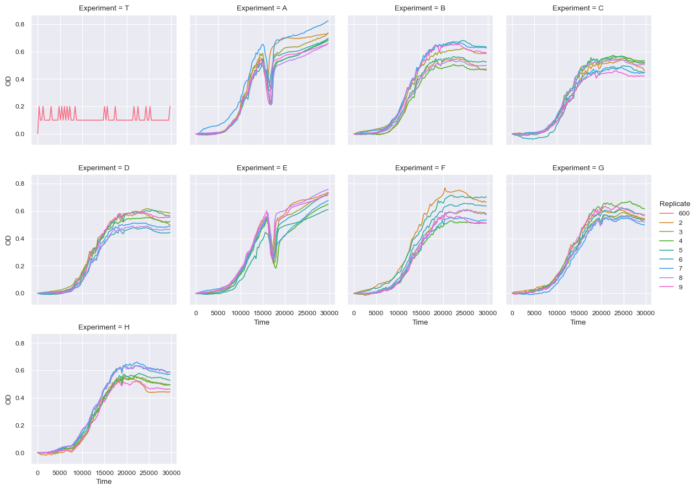
[378]:
sns.relplot(x="Time", y="OD", hue="Experiment", kind="line", height=10, data=df.filter(pl.col("Time")<15000))
[378]:
<seaborn.axisgrid.FacetGrid at 0x43a21c670>
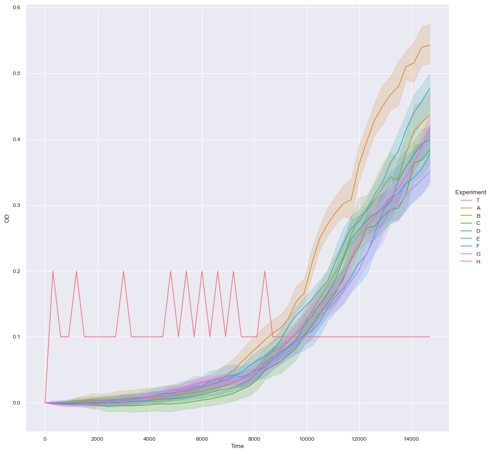
R First overnight culture in rich + met (otherwise overnight was in media without met)
r rich
m met
z with Zn
z with B12
[379]:
column_names = ["Experiment", "Abb", "Description", "Pre-met", "Additive"]
conversion = [["A", "Rrm", "Rich + met, ++met", True, "met"],
["B", "Rr", "Rich - met, ++met", True, "none"],
["C", "RrZ", "Rich - met + Zn, ++met", True, "zinc"],
["D", "Rrb", "Rich - met + B12, ++met", True, "B12"],
["E", "rm", "Rich + met, --met", False, "met"],
["F", "r", "Rich - met, --met", False, "none"],
["G", "rz", "Rich - met, --met", False, "zinc"],
["H", "rb", "Rich - met, --met", False, "B12"]]
exp = pl.DataFrame(conversion)
exp.columns = column_names
exp
[379]:
shape: (8, 5)
| Experiment | Abb | Description | Pre-met | Additive |
|---|---|---|---|---|
| str | str | str | bool | str |
| "A" | "Rrm" | "Rich + met, ++… | true | "met" |
| "B" | "Rr" | "Rich - met, ++… | true | "none" |
| "C" | "RrZ" | "Rich - met + Z… | true | "zinc" |
| "D" | "Rrb" | "Rich - met + B… | true | "B12" |
| "E" | "rm" | "Rich + met, --… | false | "met" |
| "F" | "r" | "Rich - met, --… | false | "none" |
| "G" | "rz" | "Rich - met, --… | false | "zinc" |
| "H" | "rb" | "Rich - met, --… | false | "B12" |
[380]:
mdf = df.join(exp, on="Experiment")
[381]:
sns.relplot(x="Time", y="OD", kind="line", col="Pre-met", hue="Additive", style="Replicate", height=6, data=mdf.filter(pl.col("Time")<15000))
[381]:
<seaborn.axisgrid.FacetGrid at 0x43a6577f0>
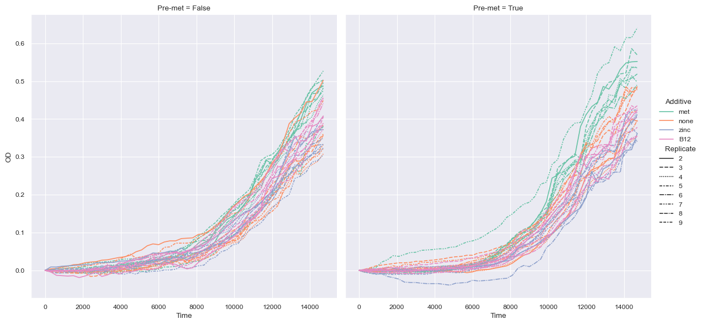
[382]:
sns.relplot(x="Time", y="OD", kind="line", hue="Additive", col="Pre-met", height=6, col_wrap=2, data=mdf.filter(pl.col("Time")<15000))
[382]:
<seaborn.axisgrid.FacetGrid at 0x3fe5b0df0>
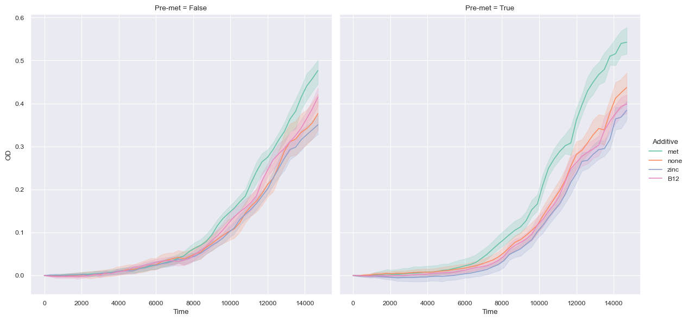
[383]:
pdf = mdf.filter((pl.col("Time")<15000) & (pl.col("Time") > 10000)).to_pandas()
[384]:
sns.lmplot(x="Time", y="OD", hue="Additive", col="Pre-met", height=6, col_wrap=2, data=pdf)
[384]:
<seaborn.axisgrid.FacetGrid at 0x43aca2dd0>
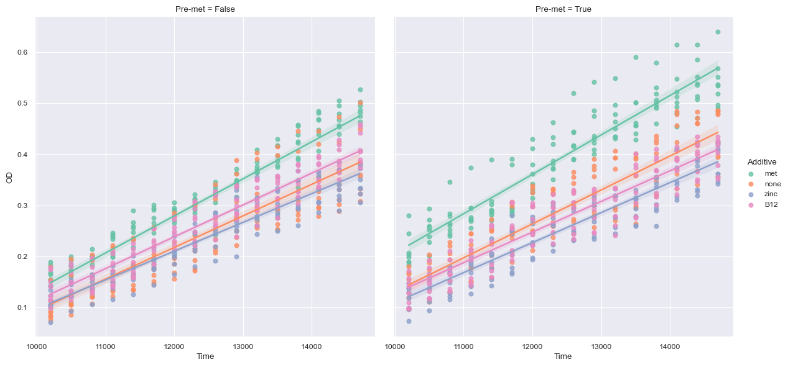
[385]:
sns.relplot(x="Time", y="OD", kind="line", col="Additive", hue="Pre-met", height=6, col_wrap=2, data=mdf.filter(pl.col("Time")<15000))
[385]:
<seaborn.axisgrid.FacetGrid at 0x43aca2bc0>
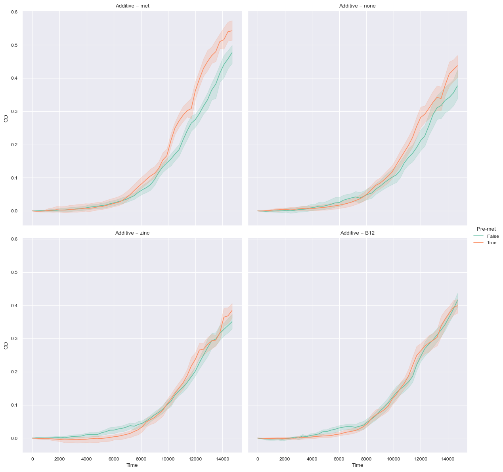
[386]:
meta = pl.read_csv("growth_data/adrian_growth_jan25_indicator.csv")
meta = meta.melt(id_vars='row', variable_name="col", value_name="experiment")
meta = meta.drop_nulls()
meta
[386]:
shape: (64, 3)
| row | col | experiment |
|---|---|---|
| str | str | str |
| "A" | "2" | "Rrm1" |
| "B" | "2" | "Rr1" |
| "C" | "2" | "RrZ1" |
| "D" | "2" | "Rrb1" |
| "E" | "2" | "rm1" |
| "F" | "2" | "r1" |
| "G" | "2" | "rz1" |
| "H" | "2" | "rb1" |
| "A" | "3" | "Rrm2" |
| "B" | "3" | "Rr2" |
| "C" | "3" | "RrZ2" |
| "D" | "3" | "Rrb2" |
| … | … | … |
| "E" | "8" | "rm7" |
| "F" | "8" | "r7" |
| "G" | "8" | "rz7" |
| "H" | "8" | "rb7" |
| "A" | "9" | "Rrm8" |
| "B" | "9" | "Rr8" |
| "C" | "9" | "RrZ8" |
| "D" | "9" | "Rrb8" |
| "E" | "9" | "rm8" |
| "F" | "9" | "r8" |
| "G" | "9" | "rz8" |
| "H" | "9" | "rb8" |
[387]:
df = pd.read_csv("growth_data/adrian_growth_jan25_v2.csv")
df = df.drop(['T∞ 600'], axis=1)
df["Time"] = pd.to_datetime(df['Time'],format= '%H:%M:%S', coerce=).dt.time
Cell In[387], line 3
df["Time"] = pd.to_datetime(df['Time'],format= '%H:%M:%S', coerce=).dt.time
^
SyntaxError: invalid syntax
[ ]:
pd.to_datetime(df['Time'],format= '%H:%M:%S').dt.time
[ ]:
df = pd.read_csv("growth_data/adrian_growth_jan24.csv")
df = df.dropna()
df
[ ]:
df = df.loc[:, ["Series1", "Series2", "Series3", "Series4", "Series5", "Series6", "Time_seconds", "ID"]]
[ ]:
df = df.melt(id_vars=["Time_seconds", "ID"], var_name="Series", value_name="OD")
df = df.rename(columns={"Time_seconds": "Time", "ID": "Experiment"})
for k, v in {"RM": "+met", "RZ": "+Zn", "RB": "+B12", "R": "-met", }.items():
df["Experiment"] = df["Experiment"].str.replace(k, v)
df
[ ]:
df_truncated = df.copy()
df_truncated.loc[df_truncated["Experiment"].isin(["+B12", "+Zn"]), "Time"] = \
df_truncated.loc[df_truncated["Experiment"].isin(["+B12", "+Zn"]), "Time"] +1100
df_truncated = df_truncated.loc[df_truncated["Time"].between(7500, 100000), :]
sns.relplot(x="Time", y="OD", hue="Experiment", kind="line", data=df_truncated, height=8)
[ ]:
df_truncated = df.copy()
df_truncated.loc[df_truncated["Experiment"].isin(["+B12", "+Zn"]), "Time"] = df_truncated.loc[df_truncated["Experiment"].isin(["+B12", "+Zn"]), "Time"] +1000
df_truncated = df_truncated.loc[df_truncated["Time"].between(7500, 20000), :]
sns.relplot(x="Time", y="OD", hue="Experiment", style="Series", col="Experiment", kind="line", col_wrap=2, data=df_truncated, height=4
)
[ ]: